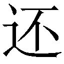
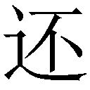

| 撃戦魔法士 (ガガガ文庫) | |
| 尾地雫 | |
| (2015) | |
小学館ｅＢｏｏｋｓ
撃戦魔法士
尾地 雫
イラスト いちやん
虚空に漂う魔法の提灯。怪しげな桃色行燈が自立歩行で通りを闊歩し、魔女の呪文が人工の星空を極彩色の花火で彩る。
絢爛な着物を大胆に着こなし、しなを作って猫なで声で呼び込みをしているのは人工生命の娼婦たちだ。髪の色も瞳の色も肌の色も多種多様。人工的な美貌は神話の女神めいていて、緩み顔の男たちは一時の快楽と引き換えに、気付けば金と精気を吸い取られていく。
第十三区地下層Ｈエリア──〈人工生命の遊郭〉。
古い日本家屋を模した無数の娼館が、地の底に向かって巨大な螺旋を描くように軒を連ねるここは、一晩で数億もの金が消えると言われる魔都随一の花街。
そんな酒と香水と媚薬のにおいに満ちた情欲の街を、龍之介は季節外れの黒のロングコートを翻しながらひた走っていた。
──ったく、あそこで酔っぱらいが絡んでさえこなければ......。
内心で恨み節を吐くが、今さらどうしようもない。
懸命に追い駆けているのは、フードを被った男──賞金首だ。
男がこのエリアに潜伏しているという情報を掴んだのが、一週間ほど前のこと。
秘かに聞き込み調査を続け、数日がかりでようやく男の在処を特定。そして手配書に相違ないことも確かめ、ついに捕獲まであと一歩へと迫ったところで──
『おう、兄ちゃん！ 今日も賞金首の調査かい!? 精が出るねぇ！ ひっく』
『ば、ばか......あっ、おい待て！』
深夜の追走劇が幕を開けたのだった。
必死に男の背中を追うも、人混みが行く手を阻み、何度も見失いかけてしまう。このままでは撒かれてしまうのも時間の問題だ。
「しょうがねぇ。ちょっと障害物が多いけど......ま、なんとかなるか」
そんな呟きを零しつつ、龍之介は右手をコートの中へと突っ込んだ。硬い銃把の感触が、ずしりと手に馴染む。
漆黒の覇王。作り手によってそうネーミングされた特注の回転式魔導拳銃を、走りながらの抜き撃ち。
銃声はない。魔力によって音もなく撃ち出された45マグナム魔弾は、針の穴を縫うような正確さで十数メートル先を走っていた賞金首のすぐ足元へ。
爆ぜた地面に足を取られ、男が盛大にスッ転んだ。拍子に男のフードの中が露わになる。
切れ長な瞳に、尖った耳。肌は人間の白人種よりもさらに白い。
エルフだ。絶対数こそ少ないが、近年、魔都で権勢を振るっている種族である。
そのとき何の前触れもなく、男の手に臙脂色の棒のようなものが出現した。
魔力によって実体化させた魔法の杖──魔導具だ。
男の唇が素早く動く。
杖の補助を受けての超高速詠唱。直後、魔術で生み出された炎を纏う大蛇が、龍之介目がけて飛来する。
「おいおい、超高速詠唱でこの威力かよ。さすがエルフだな」
言葉とは裏腹に、龍之介は慌てる様子もなくトリガーを引いた。しかし発射された魔弾は、あらぬ方向に飛んでいく──
どこを狙っている、と嘲笑いかけた男が、息を呑んだ。
娼館の電飾看板が降ってきて、炎の大蛇と激突。辺りに火花を散らし、大蛇が消滅する。
焼け焦げた看板を見ると、留め具が破壊されていた。外したかと思われた魔弾は、まさにそれが狙いだったのだ。
「チェックメイトだ」
再び詠唱を始めようとしていた男の唇が、龍之介に銃口を向けられて停止。
観念したのか、男は魔法の杖を放り捨て両手を上げた。
何事かと驚き喚く娼婦や客たちを、龍之介は民間騎士証を見せつけて鎮める。
「あー、はいはい、騒がない騒がない。俺は民間騎士。そしてそいつは賞金首。逮捕の邪魔しやがると、後で民間騎士協会に訴えてやるからな」
民間騎士とは、危険な魔獣の討伐や凶悪犯罪者の捕縛など、主に武力を有する仕事を請け負う戦闘魔術師たちのことだ。
個々人の能力がものを言う実力主義の世界。それゆえ、稼ぎが上げられずに食うものにも困る者が出てくる──例えば、龍之介のように。
「頼むから、大人しく魔導手錠で拘束されてくれよ。そしたらあんたは豚箱で不味いタダメシにありつけて、俺は報酬を貰って美味いメシにありつける。ほら、まさにウィン＝ウィンってやつだろ？」
軽口を叩くも、その声には知らず知らず切実な感情が籠っていた。
実はこの数日、龍之介はロクなものを口にしていない。
一昨々日は半額弁当、一昨日は非常食、昨日はパンの耳。今日に至っては、水道水で空腹を誤魔化している始末。
思い返せば泣けてくる......。
──魔牛丼か、天国拉麺か、それとも竜宮寿司か......いや、ちょっと奮発して珍獣の焼肉食べ放題といくか？ とにかく、こいつを捕まえた賞金で腹いっぱい食ってやる。
口元を垂れた涎を慌てて拭いながら、龍之介は賞金首へと近付いていく。
そのときエルフの端整な唇が、ゆっくりと嗤うように弧を描いた。
「......出でよ」
ハッとしたときには、すでに男の足元で文字と紋様からなる複雑な図形が煌めいていた。捨てたと見せかけた魔法の杖が、自動モードで秘かに魔法陣を描いていたのだ。
空間が陽炎のごとく歪む。
龍之介は咄嗟にトリガーを引いた。しかし、魔弾が男を撃ち抜くことはなかった。
虚空から突如として現れた人間の腿ほどもある硬い牙が、男を護ったのだ。
歓楽街の中心に魔獣が屹立していた。
隣の二階建ての娼館に並び立つほどの巨体。全身は黒。頭部は狼のそれに酷似している。だが、ずっと大きく、しかも一つではない。ゆうに十を超す頭が、まるで樹の枝のように胴体から出鱈目に飛び出していた。
「多頭獣!?」
目を剥く龍之介。
召喚魔術によって異界から呼び出されたそれは、自らの顕現を誇示するかのように地下の歓楽街に凄まじい咆哮を轟かせた。
酔客やホムンクルスが悲鳴を上げて逃げ惑う。その狂乱に混じって、この事態の元凶たるエルフの男も逃げていく。その後ろ姿を認めて、龍之介は逡巡する。
ようやく追い詰めた賞金首だ。すぐにでも後を追いたい。何せ、あれには久しぶりの晩メシ──どころか、今月の生活費が懸かっているのだ。
しかし、迷いは一瞬だった。
──このままこいつを放っておいたら、甚大な被害が出ちまう。
「はぁ......ただでさえ困窮してるってのによ......」
龍之介はコートの中から〝Ｂ‐06〟というナンバーが底面に刻印された魔弾を取り出すと、素早く装填した。
「アクティベーション──《爆鴉》！」
叫ぶと、音声に反応して弾倉が自動回転。装填した魔弾が所定の位置へと移動し、発動準備が完了する。その瞬間、トリガーを引き絞った。
撃ち出されたのは魔弾ではない。
鴉だ。
特殊魔弾──Ｂ‐06弾に保存されていた魔術プログラム《爆鴉》が発動したのだ。鴉は黒い翼をはためかせて宙を舞い、中央右の頭に激突、夜闇に激しい爆発が巻き起こった。
神経を共有しているのか、十を超す頭が同時に哭いた。
しかし頭一つ失いながらも、魔獣は牙を剥き出し襲い掛かってくる。
「っと！」
龍之介は慌てて跳び上がって魔獣の牙を躱すと、その頭を蹴ってさらに跳躍。そして、娼館の屋根へと着地──しようかと思ったのだが、ちょっと飛距離が出過ぎてしまった。
パリンッ。勢い余って窓を突き破り、畳敷きの部屋へと落下する。
「てぇ......ミスった」
「なんだお前はっ!?」
痛みに呻く龍之介に、すぐ横から怒声が飛んできた。
視線を向けた龍之介は驚愕する。厳めしい面をした中年男と、背中に悪魔の羽を生やした金髪のホムンクルスが裸体で交わっていたのだ。
どうやら情事の真っ最中だったらしい。
「おいこら、なんでまだ暢気に交わってんだよ！」
咎める龍之介に、男はホムンクルスを抱いたままカッと目を見開いた。
「ああん、暢気だとコラ!? ふざけんなよ!? この春に花魁入りしたサキュバス型ホムンクルス、リーゼロッテ８号ちゃんと一発ヤるために、オレが一体どれだけの大金をつぎ込んだと思ってんだよ!?」
なぜか怒鳴り返されてしまった。
「五百万だぜ!? 五百万っ！ 家には妻と二人の子供がいてまだローンが三十年も残ってんだよ！ なにが暢気だっ!? どう考えても命懸けだろうがっ!? ああっ!? 今さら魔獣なんて怖くもなんともねぇんだよぉっ！」
「そんなことに命懸けんなよ......。奥さんが知ったら泣くぞ？」
「はっ、妻が怖くて不倫ができるかってんだコンチクショーっ！」
「いや、何であんたが泣いてんだよ」
「ああ雄介さん、そこまでしてあたしのことを想ってくれていたなんて......♥ あたしのバージョンアップしたばかりの蠕動性器で、もっと気持ちよくしてあげ──」
グガルルルオオオッ！
獰猛な声とともに、窓を破壊して魔獣の頭が部屋に乱入。今まさに男と娼婦を噛み潰さんというところで、窓枠に引っ掛かりぎりぎり停止した。
「とっとと逃げろ！」
龍之介が思いきり魔獣の鼻づらを蹴り飛ばしてやると、「ギャン」と哭いて頭が引っ込む。
「ひ、ひぃぃぃっ......」
男と娼婦は性器丸出しのまま、まろぶように逃げていった。
その直後、今度は別の頭が窓枠ごと破壊して侵入。龍之介は障子を突き破り、隣の部屋へと走った。さらに回廊へ躍り出ると、そこから地面に飛び降りる。
龍之介に気付いた左端の頭が、他の頭部を先導して追撃してきた。
すんでのところで道の端にある欄干を跳び越える。すぐ下に瓦葺の屋根。着地と同時にもう一度跳んで、先ほどいた場所より一つ下の階層にある道へと降り立った。
今度はＢ‐12と刻まれた特殊魔弾を弾倉に装填。
龍之介は嘆息しながら、誰にともなく独白する。
「......言っとくが、このナンバー付の魔弾、ぜんぶ特注品だからな？ 普通の魔弾と比べて、めちゃくちゃ高価なんだぞ」
魔獣の巨体が上の階層から躍り跳び、地響きとともに地面に着地。その瞬間を見計らって、龍之介は半ばヤケクソ気味に漆黒の覇王のトリガーを引いた。
現れたのは紫電を纏う、いや、紫電そのものの獅子だった。大型犬よりも一回りも二回りも大きなそれが雷鳴を轟かせながら疾駆していく。
巻き起こったのは、さながら雷の嵐だ。生じた衝撃波が近くの娼館の窓を割り、屋根瓦を弾き飛ばした。
後に残ったのは嘘のような静寂と、倒れ伏す魔獣の巨体。直撃を受けた中央部の頭群は肉が焼け焦げ、ほとんど原形すら留めていない。
「やったか......？ ──なっ」
恐る恐る近付いていくと、魔獣がぴくりと身体を震わせた。信じられないことに、焼け爛れた前脚で地面を踏み、ゆっくりと身を起こす。
「マジかいっ!?」
龍之介は即座に踵を返し、一目散に遁走。手負いの獣の執念か、魔獣はこれまでにない速度で迫りくる。
計六発込めることができる弾倉は、空。だが今は装填している余裕がない。
飛び散った窓ガラスの上を駆け抜けながら、龍之介はショルダーホルスターから別の回転式魔導拳銃を抜いた。
白銀の賢帝と命名されたそれは、漆黒の覇王と比べるとやや小ぶりで、口径は38ミリ。
「アクティベーション──《蜘蛛の糸》」
肩越しに銃口を向ける。Ｓ‐04と刻まれた特殊魔弾から発動されたのは、敵を高粘着質の糸で絡め捕る捕獲用の魔術だった。
蜘蛛の糸で捕え、魔獣の動きを封じる。
しかし巨体を抑え切れない。すぐに糸を引き千切られてしまう。
「うおっ」
必殺の牙を、身を投げ出すように横転して回避。続く大槌のごとき脚の踏み下ろしを、さらに転がって避け、なんとか圧死を逃れる。そこで娼館の軒下へと跳び込んだ。
突如、地下に豪雨が降り注いだ。
全身に雨を浴びた魔獣が絶叫を迸らせる。ただの雨ではない。強酸性の雨だ。いつの間にか、魔獣の頭上を真っ黒い雲が覆っていた。
先ほど《蜘蛛の糸》で動きを封じている隙に、特殊魔弾──Ｓ‐08弾に保存されていた魔術プログラム《強酸性雲》を発動させていたのだ。
傷口への酸性雨は激痛をもたらすが、真の狙いは魔獣の視界を奪うことにあった。
強酸性水を目に浴びた魔獣が、出鱈目に暴れ回る。これでもう龍之介を狙い追うことはできなくなったはずだ。
雨が止むのを見計らって、ゆっくりと軒先を出る。
これでトドメ。龍之介は《雷獅子》のＢ‐12弾をコートから取り出して、漆黒の覇王に装填しようとする──
「きゃ......っ!?」
不意の悲鳴。反射的に視線を向けると、逃げ遅れてしまったらしいホムンクルスの女の子が、魔獣を前にしてその場にへたり込んでいた。
その声を耳聡く聞き付け、魔獣の首が彼女の方へと向く。
「危ねぇ！」
龍之介は弾かれたように地面を蹴った。
唾液を散らし、巨大な顎が女の子を喰い殺さんとするその寸前、辛くも彼女を抱きかかえて掻い潜る。だが再び急迫してくる牙を避けることはできなかった。
「ハァァァァァァァッ！」
突然、頭上で裂帛の気合いが響いた。
振り仰ぐと、娼館の屋根の上から跳ぶ人影。
十代中頃の、優美な白金の鎧を身に着けた少女だ。
彼女は雄々しく飛翔し、自らの身長をも超える長大な槍を軽々と振り回しながら、空から魔獣に迫る。
魔獣の背に槍が深々と突き刺さり、血の飛沫が上がった。
直後、その槍が強力な魔術の雷を吐き出し、魔獣が断末魔の絶叫を発する。魔獣の体内に直接電流を流し込んだのだ。
巨体が倒れ伏す前に、少女は槍を抜いて宙を舞い、軽快な着地を決めた。艶やかな黒髪がふわりと肩に落ちる。
「七慧......助かった......」
龍之介の呟きに、知人の少女──七慧がこちらを振り向いた。
「......こんなところで何やってるのよ？」
言葉にはどこか剣呑な響きがあった。
未だ抱き締めたままだったホムンクルスの女の子に気付き、龍之介は慌てて抗弁する。
「いや、これは違うぞ？ 別にこの子と如何わしいアレコレをしてたわけじゃなくて、むしろピンチを救う愛と正義のヒーローをだな」
「ふぅん」
そのとき近くの路地裏から、武装した女性が姿を見せた。
「そっちはどう、七慧さん」
「はい。たった今、目標の排除に成功しました」
「さすが。こっちもその魔獣を召喚したと思しき男を捕獲したわ。民間騎士協会のデータベースに照合してみたら、どうやら賞金首だったみたい。それも結構な額の。別件でたまたま近くにいたから駆けつけてきただけなのに、ほんと、今夜はツイてるわね」
満足そうに言って、女性は背後を振り返る。
そこには魔導手錠をかけられ、観念したように項垂れるエルフの男がいた。
──待て待て待て！ そいつは俺の賞金首だぞ......っ！
残念ながら、それを裏付ける証拠などどこにもない。しかしここは是が非でも譲るわけにはいかなかった。
「七慧、そいつは──」
と、龍之介が口を開けかけたそのとき、
「あたし、初めてはお兄ちゃんにするって決めたの」
甘い声でそう言って、ホムンクルスの女の子がしなだれかかってきた。
その拍子に着物の胸元がはだけ、扇情的な胸元がちらりと見えてしまう。さすがは人造のホムンクルス、容姿や体格の割りにずっと大きく作られているようだ。
「うふ、お兄ちゃんのえっち。興奮してる」
こちらの心拍数が上がったのを目敏く察して、女の子が蠱惑的に笑った。
龍之介は我に返って、
「み、見てない！ 俺は別に胸なんて見てないし興奮してもないぞ！ あ、おいっ......」
「......」
七慧が無言で去っていく。
「ダメお兄ちゃん。今夜は帰さないんだから」
追い駆けようとするも、ホムンクルスの女の子が離してくれない。
「ま、待ってくれ、七慧！ そいつを捕まえた賞金が入らないとマジでヤバいんだよ！」
必死に懇願する龍之介だったが、最後に一度だけ振り返った七慧は、冷たく一言。
「お楽しみのところ邪魔して悪かったわね。どうぞごゆっくり」
あとはもうこちらを一瞥だにせず、同僚の女性とともに賞金首を連行していった。
「......あぁ......俺の晩メシが......」
口から零れた絶望の呻きは、歓楽街の空気に紛れて虚しく消えた。
１
大日本大陸の中部東海地方に、世界最大の魔導の都がある。
〈フルホシュタット〉。
俗に魔都とも称されるその都は、将軍と侍が統治する東の軍事国家〈大江戸帝国〉からも、天帝が治める西の宗教国家〈倭皇国〉からも、完全に独立した巨大な都市国家だ。
登録人口五千万人。
対し、魔術師の数──五千万人。
違法の未登録民を除く全住民が魔術師であるとされるこの都市では、魔術の技量こそが人の価値を決める。地位や名誉、収入、あるいは、人生さえも。
それゆえこの都市の住民たちは、年齢・性別・種族・職業を問わず、誰もが日々魔術の研鑽を積み続ける──
第三区空中層Ｄエリア──〈ウェルキエル学園〉。
その南構内に位置する高等部校舎の８０２講義室では、大勢の学徒魔術師たちが講義に耳を傾けていた。
〈ウェルキエル学園〉は特定の教派に属さず、初等部から大学院まである総合学校で、入学してくる種族も様々だ。人間族のほかに、エルフ族やホビット族、ドワーフ族、獣人の諸族など、多彩な種族が段々畑のような座席を埋めている光景はなかなかに壮観だった。
今行われている講義は、金曜日の二限目、必修科目の『魔導具学入門』である。
「えー、本来〝魔法の杖〟を意味する言葉である〝ウォンド〟は、現在は魔導具全般のことを意味しています。あー、使い手の魔術の威力を増幅してくれたり、面倒な術式をスキップしてくれたりとー、様々な面で魔術のサポートをしてくれ、魔術師にとって無くてはならないものであります」
教壇には頭髪の薄い初老の男性魔導師が、資料を表示した電子黒板を背に立っていた。
広い講義室に、魔術で増幅された抑揚の乏しい声が響く。
「えー、われわれ魔術師は、古からこのウォンドの開発に力を注いできました。より強力でー、便利でー、あるいはオリジナルなウォンドを有しているほど、優秀な魔術師であるとしてー、高い評価を受けることになります」
──眠い。
他の生徒に交じって講義を聴講していた龍之介は、思わず欠伸を噛み殺した。
昨晩、助けた娼婦見習いホムンクルスを引き剥がすのにさんざん苦労したため、ほとんど寝ていないのだ。しかもあの声がやたらと眠気を加速させる。催眠魔術的な効果があるのかもしれない。
「あー、中には先祖や家族から受け継ぐ者もいるでしょう。えー、しかし、ウォンドは使い手次第でー、強化もされれば劣化もする。ゆえに、皆が生涯をかけて──」
──ごーんごーん。
不意に荘厳な鐘の音が鳴り響き、静かだった講義室が途端に騒がしくなった。
授業終了の合図だ。
「あー、では今日はここまでにしましょう」
初老の男性が仕方なさそうに授業を止め、課題を言い残して去って行った。
九十分授業のため午前中は二限目までしかなく、これから昼休みだ。
窓の外に、高層校舎の間を箒や飛行自動二輪車に跨って飛ぶ生徒たちが見えた。食堂や購買に向かっているのだろう。
しかし、今の龍之介には購買でパンを買う金すらもない。
ぐぅぅ、とお腹が鳴った。
「や、やべぇ......マジで腹減った......。だ、誰か、恵まれない者に愛の手を......」
と呟いてみるものの、そんな相手がいるはずもなく。
ここ魔都では、すべての魔術師が一から十までの階級に格付けされており、龍之介はその第九階級に位置付けられていた。第十階級は主に犯罪者に与えられる階級であるため、実質的に最底辺の階級だ。
それゆえ龍之介は、学園内で周りから浮いた存在──忌避され、嘲弄される対象となっていた。当然と言うべきか、友人と呼べる相手など一人もいない。
「知ってるか？ あいつまだ第九階級なんだってよ」「マジかよ。ここは初等部じゃねぇんだぞ？」「そもそも魔術をまともに使えないとか聞いたぜ」「道理で、実技系の授業で顔見ねぇわけだ」
少し周囲に意識を向けてみると、そんな声や露骨な蔑みの目線を察知することができた。
「でもさ、見た目はちょっとカッコよくない？」
──お......っ？
「え～、なんか夜な夜なエロ画像探して魔導ネットの海を徘徊してそうな童貞顔じゃん」
「あー、確かに」
──どんな顔だよ！
頼むから内緒話はせめて本人には聞こえないようにしてほしい。
心の中で突っ込んでいると、ぐるるるる、とお腹がさらなる空腹を訴えてきた。
「すごい音......。わたし、お腹の虫がそんなに大きな声で鳴くの、はじめて聞いたわ」
そのとき背後から、耳に残る澄んだ声が響いた。
振り仰ぐと美少女が立っていた。
肩口で揃えた艶やかな黒髪。均整のとれた可憐な体躯。可愛らしさと美しさが同居した端整な顔立ち。その立居振舞いには気品が漂う。
名門・天城家の子女、天城七慧。
つい昨晩、龍之介から賞金首を奪っていったあの少女だった。
龍之介と同じ高等部一年生でありながら、すでに第五階級に到達し、弟子を持つことが許される准魔導師の称号をも持っていると聞く。
優雅な白金の飛翔鎧〝風姫〟と、今は携行できるサイズに縮めているが長大で物騒な突撃焼殺槍〝雷媛〟を常に装備している彼女は、その美貌も相まって、そこにいるだけで周囲の視線を集めていた。
お陰で龍之介まで注目されてしまう。男子たちの視線には殺意すら籠っていた。
そんな彼女に、龍之介はどこか空虚な眼を向けて、
「なぁ知ってるか？ 空腹が極限にまで達すると人って悟りを開くんだぜ？」
「それで、あなたは何を悟ったの？」
「人はやっぱパンがないと生きられない」
「単に事実を再確認しただけね、それ......」
そうとも言うかもしれない。
「てか、こうなったのは誰のせいだと思ってんだよ」
空腹も手伝って、龍之介はぶっきら棒に問い詰めた。昨晩の恨みを忘れてなどいない。
「あなたが可愛いホムンクルスとお楽しみだったせいでしょ？」
「だからあれは違うって」
「......また自分の身を顧みずに助けたんでしょ」
どこか呆れたような、あるいは不満そうな口調で彼女は言い直した。
「人造のホムンクルス相手に、そんなことする人いないわよ」
「そうは言っても、目の前で死なれたらやっぱ後味が悪いだろ」
龍之介は少しバツの悪そうな顔をして応じる。
「それはともかくだな。あの賞金首を潜伏場所から燻り出すのに一役買ったんだ。俺にも少しくらい分け前をくれたっていいじゃねぇか。居場所を突き止めるのに、どんだけ苦労したことか......。あれは遡ること今から一か月前。あの日、俺はいつものように日課の──」
「それ長くなりそうだからやめておくわ」
いきなり遠い目で語り出した龍之介を、七慧がぴしゃりと遮る。
「わたしは個人事業のあなたと違って、事務所に所属してるの。わたしの一存ではどうしようもないのよ」
「そこをなんとか......」
「無理。うちの経理厳しいし。今さら要求しても遅いわよ」
拝むようにして頼む龍之介だったが、一蹴されてしまった。
「くっそ、天下のセレス民間騎士事務所のくせにケチだな。儲かってんだろ？」
七慧が所属する『セレス民間騎士事務所』は、創設から十年ほどと歴史は浅いが、押しも押されもせぬ大手事務所だ。民間騎士協会が発行する会報誌『コントラクター』に掲載された最新ランキングでは、総合で堂々第五位にランクインしたほどである。
その中にあって、すでに七慧はエース級の活躍をしているというのだから、同業と言っても龍之介とは天地の差だった。
「嫌な言い方しないで。そもそもの話、あなたが召喚魔術を使われる前にちゃんと捕まえていれば、そんなことにはならなかったんじゃない。被害だって抑えられたはずでしょ」
「う......」
紛うことなき正論に、返す言葉が見つからない。
さらにずずいと身を近付けてきて、七慧はできの悪い弟を諭す姉のように畳みかけてくる。
「それから、たった一人であんな高額の賞金首を捕まえようとするのも危険よ。そんな無茶ばかりしてると、いつかもっと手痛いしっぺ返しを受けるわよ？」
「仕方ねぇだろ。うちには養わなくちゃなんねぇやつらがいっぱいいるんだよ。最近もまた一匹、やけに大飯喰らいなのが増えたし......」
「あなたが色んなところから拾ってくる捨て使い魔たちね......。でも、だったら、どこかの事務所に就職するという手だってあるでしょ？」
「それは......」
龍之介は言い澱む。以前、就職活動をしたことがあるが、軒並み書類選考で門前払いされてしまったのだ。第九階級なのだから仕方がない。
それを察したのか、七慧は哀しそうに表情を曇らせて、
「あ、ごめんなさい......。あなたのような人が、組織の中で上手くやっていけるはずないわよね......友達すらいないんだし」
「そっちかよ！ いやまぁ、それも否定できないけどよ......」
気を取り直し、龍之介は先ほどから抱いていた疑問を投げかける。
「それで、何でお前はこんなところにいるんだよ？ 勝手に人の学校に入ってくんなよな」
彼女は〈ウェルキエル学園〉ではなく、名門女子校〈マルキダエル女学院〉に通っているはずだった。
「あなたに話があって来たのよ。大丈夫。許可は取ってあるわ」
なぜか少し勝ち誇ったように告げてくる七慧。しかし龍之介は、犬でも追い払うかのような仕草でしっしっと手を振った。
「分け前くれないなら、俺にはもう話すことなんてねぇよ」
「......へぇ、そんなこと言っちゃうんだ？」
「っ......」
不意に七慧の全身から立ち上った静かな迫力に、龍之介は息を呑んだ。
「これまで何度か仕事を紹介してあげたのは、一体誰だったかしら？ どうしてもって言うから、昔のよしみで掛け合ってあげたのに、そんなこと言っちゃうんだ？ へぇそうなんだ？」
「あ、いや、えっと......そ、それについては、ちゃんと感謝してますっていうか......」
「そんなふうには全然見えないけど？」
「む、胸の奥はいつも感謝の気持ちではち切れんばかりであります......」
「............はぁ」
しばし不満げにこちらを睨んでいた彼女だったが、やがて溜息を一つ零して踵を返す。
そして独り言のように、
「あーあ、せっかく紹介してあげようかと思っていた高報酬の仕事があったんだけど──賄い有りの警備任務。まぁ、でもいっか。わたしが居ると迷惑みたいだし」
「ちょっと待ったぁぁぁっ！」
「きゃっ？」
反射的に飛び付いて両肩を掴むと、七慧が可愛らしい悲鳴を漏らした。
「それを早く言ってくれ！ いや言ってください！ 頼みます！ ほらこの通り！」
五体投地で平身低頭する龍之介。
「なんだなんだ、喧嘩か？」「彼女に別れ話を切り出されて、過去の過ちを必死に謝ってるんじゃねーか？」「あの子、きっと二股をかけられてたのね、可哀想......」
こちらの様子を窺っていた周囲から、そんなヒソヒソ声が聞こえてきた。
「ちょ、ちょっとやめてよっ......変な勘違いされちゃってるでしょ！」
龍之介は恐る恐る身を起こす。
七慧の顔は真っ赤っ赤だった。
ごほん、と一つ咳払いした彼女は、ぱたぱたと手扇で顔を煽ぎながら、
「ほんと仕方がないわね。じゃあ、詳しい説明してあげるから、どこか行くわよ。お昼ごはん、どうせまだなんでしょ？」
「どっこいお金が」
「わたしが奢ってあげるから。もちろん、今回だけ特別で」
「マジで!?」
もしかすると彼女は女神かもしれない。
「あ、あくまで今回だけだからね！」
そう強く念を押してくる七慧のお陰で、龍之介は実に一週間ぶりにまともな食事にありつけたのだった。
２
七慧と別れた後、龍之介は〈ウェルキエル学園〉の大学構内へと足を運んでいた。
学生証を読ませてセキュリティーコードを通り抜け、高層の研究棟に入る。
辿り着いたのは、最上階のとある研究室。
扉の脇に設置された表札には『一之瀬蘭子』とある。
外から見る感じ、それ以外には何の変哲もない研究室だ。
インターフォンを鳴らしてしばらく待つと、「君か。入りたまえ」という尊大な声が聞こえてきて、自動的に扉の鍵が開いた。
「相変わらず汚い部屋だな」
思わず悪態をつく。
本来は広々とした部屋であるはずが、そこかしこに大型の機械が置かれているため、かなり手狭な印象を受ける。その上、床には食べかけの弁当や空のカップラーメンの容器、さらには服や下着までが散乱し、ほとんど足の踏み場がない状態だ。
金属やオイルのにおいに混ざって、どことなく腐臭まで漂ってくる。
「なぁ先生、どこだよ？」
部屋の奥に向かって声をかけるが、返事はない。
そのとき、ドルンドルン、ヴィィィィィィィンッ！ という破壊的な音を撒き散らしながら、右手にあったプレス機の背後から人影が飛び出してきた。
「なんだ、そんなとこにいたのか──って、誰だお前？」
そいつは高さ二メートルを超す武骨な機械人形だった。ホッケーマスクを被り、手にはチェーンソー。まるでクレイジーな殺人鬼だ。
突然のことに目を瞠る龍之介の耳に、どこからか甲高い狂笑が聞こえてきた。
「フハハハハハッ」
視線を転じると、巨大な装置の上に白衣を纏ったポニーテールの女の子が立っていた。
彼女こそが、この部屋の主──一之瀬蘭子。
十二歳くらいにしか見えないが、実年齢は二十五。その優れた研究成果が認められ、若くして魔導師の称号を戴いた第四階級の魔術師だ。
しかしその彼女は、殺人機械を操作するためのものと思しきコントローラーを片手に、声高々に意味不明なことを宣言した。
「ついにあたしに改造される覚悟ができたみたいだね。よかろう、それでは君の要望通り、とびきりクールでクレイジーな改造人間にしてあげよう」
「いつ俺がそんな要望したよ......。って、うおっ!?」
咄嗟に横に跳んだ龍之介のすぐ脇を、不吉な音を奏でる回転刃が擦過した。
「何しやがる！」
「なぜ避けるんだ？ せっかくその不要な右腕を切り落としてあげようと思ったのに。代わりにとってもファンキーな義手を付けてあげるよ。伸縮自在、五メートル先のスカートだって捲れる優れものだ」
「義手をそんなことに使うな。そもそもあんた、医術は専門外だろ？」
「心配はいらない。医術書は五百冊以上も読んだからね。手術の経験はないがな」
「うわそれ、絶対ダメなパターンじゃねぇか......」
頬を引き攣らせる龍之介だが、蘭子は堂々と胸を張った。
「天才に不可能はない。それに、人間も突き詰めれば機械と一緒さ。だからもし君が重傷を負って、医術師が匙を投げたとしても、あたしなら治療魔術すら使わずに綺麗に治してやれる自信がある」
ただし当然、君は立派な改造人間になっているけどね、と蘭子は付け加えた。
「あんたに身体を弄られるくらいなら、いっそ一思いに死なせてくれた方がマシだ！ ──おらよっ」
袈裟懸けに振り下ろされたチェーンソーを見切って、殺人機械の腕を掴む。そのまま背負い投げの要領で投げ飛ばした。
床に頭から激突した殺人機械は、衝撃で内部機関のどこかがやられたのか、ぷしゅーと口から煙を噴き出した。
「ジェー・ソォォォォン!?」
蘭子が頭を抱えて叫ぶ。どうやらジェー・ソンという名前だったらしい。
「なんてことしてくれるんだ!? 君を改造する為だけに、徹夜で作った魔導機械だったというのに！」
理解できない、といった顔で喚く蘭子だが、むしろなぜそんなことに余計な労力を使うのかが理解できない。
「君は歌って踊れて戦える、魔都史上初のエンターテイメント系戦闘用改造人間になりたくないのかい......？」
「誰得だよそれ」
「つまらないやつだね、君は」
蘭子は子供のように唇を尖らせる。そうすると初等部の生徒にしか見えない。身長は百五十センチにも満たず、白衣の裾が地面を擦っているほどだから仕方ないが。
「今なら特典としてお腹に変身用ベルトも付けてあげるよ？」
「要らねぇ」
「目からビームだって可能だ！」
「だから要らねぇって」
「口から衝撃波！」
「しつこい」
「鼻から牛乳！」
「何の意味がある!?」
「股間から白濁液！」
「下ネタやめろ」
稀代の変人だが、これでも彼女はれっきとしたこの学園の教授だ。しかも魔導機械に関してはその筋では知らない者などいないほどだという。もっと良い条件で様々な機関から声がかかっているらしいのだが、なぜか断り続けているようだ。
たぶん引っ越すのが面倒なのだろう。
「そんなことより、今日は銃のメンテナンスと、ナンバー付きの魔弾を買いに来たんだ」
端的に用件を伝えると、蘭子はややおどけた調子で言ってきた。
「あれ？ あたしの記憶が確かなら、まだ前回と前々回のローンの支払いも済んでいなかった気がするけどね？」
「......それは今度の仕事が終わったらすぐに返す」
さすがに苦々しい表情になって告げる。
龍之介が使用している魔導拳銃は、多種多様なウォンドの中でも、機械と魔術を融合させたもの──魔導機械の一種として分類されている。魔弾に魔力が詰められているため、使い手がわざわざ魔力を使わなくて済む便利な武器だ。
二挺の魔導拳銃もナンバー付きの特殊魔弾も、龍之介はすべて蘭子から購入している。市販のそれとは性能が段違いなのである。
「にしても、もうちょっと安くなんねぇのかよ？」
「嫌なら別に買ってくれなくたって、あたしは全然構わないんだけどね？」
「クソ、足元を見やがって。......俺はこの銃と弾丸がなけりゃ戦えねぇんだよ。まぁ、自分の能力と無関係な魔導具に頼るっつーのは、魔術師としては邪道だけどな」
言いつつ、龍之介はあらかじめ注文数を殴り書きしておいたメモを蘭子に手渡す。
「むしろ、そんな状態にされて、君はよく頑張っていると思うけどね。......もしかしてマゾなのかい？」
「違ぇよ」
「ククク、即座に否定するところがまた怪しいね」
蘭子は嘲りながらも、どうやら返済の延期には納得してくれたようだ。「返せなければ君の身体で支払ってもらうけどね」などと怖ろしいことを言っていたが、それは聞かなかったことにする。
「......今回は随分と大量に注文するんだね？」
渡したメモを眺めながら、蘭子が片眉をひそめた。
「ああ。ちょっと大きな仕事だからな。魔都がスヴァルト王国と条約を結ぶって話、先生は知ってるか？」
「もちろんだよ。これだね」
蘭子は素早く携帯デバイスでポータルサイトを開き、該当する記事を表示させた。
『スヴァルト王国の姫、相互防衛条約の締結に向け、特別大使として来都』とあった。
スヴァルト王国は魔都のはるか北方、険しい山間部にある人口十五万人ほどの小国だ。その九割以上をエルフ族の近縁種であるダークエルフが占め、美しいダークエルフの女王が治めているという。
これまで魔都との交流はほとんどなかったが、近年になって狩猟民であるオーク族による侵略や略奪行為が頻発化し、魔都に支援を求めてきたのである。
そのため、条約の名称としては〝相互防衛〟としてはいるが、実質的には魔都側の一方的な援助に近い。
記事によると、すでに数日前から使者団が魔都に滞在しており、具体的な話し合いを進めていたらしい。特別大使──特使として来都予定の姫は、都政府中枢と会談をした後、王族を代表して調印式で署名を執り行うという。
「なるほど。つまり、君はその警備役に抜擢されたということかい？ やるねぇ」
「......セレス民間騎士事務所のお陰だけどな。今はかなりキナ臭い状況だし、少しでも強力な人員が必要だったらしい」
「君が強力な人員？ ハハハ、猫の手の間違いじゃないか？」
「失礼だな。これでも何度もＡクラスの賞金首を捕まえてるんだぞ」
「なのにどうしていつもそんなに貧乏なんだい？」
「それ以上にあんたに金を毟り取られてるからだよ......！」
お陰で一度でも獲物を逃せばすぐに赤字だ。
「それはそうと、スヴァルト王国との条約締結には、エルフ族が大規模な反対運動をしてたよな。なんでこんなに急に進展したんだろうな？」
ダークエルフと犬猿の仲にあるエルフは、この魔都において一定の影響力を持っている。そのため彼らが強く反対している以上、合意には至らないだろうと予想されていたはずだ。
「公にされてはいないが、どうやら大物が動いたみたいだね」
「権力かよ......まぁ、この都市では珍しいことじゃねぇけどな」
フルホシュタットは、第一階級の魔術師──魔導王と呼ばれる者たちを頂点とする厳しい階級社会。階級の高い者が絶大な影響力を有し、時に彼らの意向が都政の方針を大きく転換させてしまうこともある。
「そうそう、君に良いものをあげよう」
不意にそう言って、蘭子は白衣のポケットの中から何かを取り出した。
ナンバー付きの特殊魔弾だった。しかしナンバリングは〝Ｄ‐01〟と今まで見たことのないものとなっている。
「これは？」
「以前、君に見せてもらったアレを再現させてみたのさ。とりあえず試作品だから一発しかないけどね。口径は『Ｂシリーズ』と一緒だ」
「いいのか？」
「もちろんだよ。君のために作ったものだしね」
「すまねぇな、先生」
感謝して受け取る。なんだかんだ言って、彼女は面倒見がいい女性なのかもしれない──
「無論、お金はしっかり貰うよ」
「やっぱりか！ ......試作品なんだから、タダにしてくれてもいいじゃねぇかよ。......どうせ、それなりに金はあるんだろ？」
「何を言うんだい。貧乏人から巻き上げた金で食う食事が美味いんじゃないか、ククク」
「最悪だな、あんた......」
底意地悪く笑う蘭子に、龍之介は深々と嘆息するのだった。
３
夕刻。
龍之介は七慧とともに、セレス民間騎士事務所の飛行自動車で空を飛んでいた。
飛行自動車や飛行自動二輪車などの魔導飛行車は高価で、免許取得には階級を初めとして細かな資格と特別な訓練が必要とされているため、所持している者はほんの一握り。さすがはセレス民間騎士事務所だ。
やがて目的地が遠くに見えてきた。
第四区空中層Ｃエリア。魔都でも有数の一等地に立つ最高級ホテル──〈シュテルンホテル〉である。
全面漆黒の美しい直方体の建物が、人工の湖の上に浮かんでいた。なんらかの飛行手段を有していなければ、中に入ることすらできない仕組みのようだ。奇抜な建築物だが、それでいて上品な印象も受ける。恐らくは名のある建築家の作品だろう。
「あそこにダークエルフのお姫様が泊まるのか。......高いんだろうな」
「言っておくけど、ホテルに置いてある高価な調度品を盗んだりしないでよ？」
「ハハハ、ソンナコト、スルワケナイダロウ？」
「だったら何で目を逸らしてカタコトなのよ？」
七慧は信用ならない、といった顔で睨み付けてきた。その視線を受け流しつつ、龍之介は最後部の座席へと眼をやる。実はずっと気になっていた。
「それはそうと、誰なんだ、こいつ？ 最初から乗ってたけどよ」
やたらでかい女が寝ていた。
燃えるような真紅の長髪の持ち主で、身長は少なくとも百九十センチは超えているだろう。無駄な贅肉が一切付いておらず、すらりと引き締まった四肢。それ着ている意味あるの？ と思わず突っ込みたくなるくらい露出度の高い防具しか身に着けていないせいで、その肉体美が惜しげもなく晒されていた。
よく見ると物凄い美人だ。
しかし先ほどからずっと背もたれに頭を乗せて宙を仰ぎ、大口を開けて「ガガガ」と盛大に鼾を掻いている。口端からは透明な水滴。汚い。
「あー、えっと......う、うちの所長」
なぜか少し逡巡しながら、七慧が応えた。
「って、あの!?」
民間騎士の端くれである以上、龍之介も知らないはずがない。
セレス民間騎士事務所所長──来栖セレスティーナは、同業に身を置く者であれば誰もが知っているビッグネームだ。
知る人ぞ知るある情報屋が、実績や戦闘能力などから独自に民間騎士たちをランク付けし、ネット上で公開している非公式の『民間騎士序列』においては、なんと第九位に位置付けられている。
その燃えるような頭髪にちなんでいるのか、〈紅炎ノ女帝〉との異名でも知られていた。
龍之介の声で目を覚ましたのか、セレスが薄らと片目を開けた。
「む、着いたか？」
「いえ。でも、もうすぐです、所長」
「そうか。ところで誰だ、お前？」
紅い瞳に睨まれて、龍之介は少し居住まいを正した。
「ええと、そちらの天城さんには、いつもお世話になって──」
「ぐごぉ」
「そこで寝るのかよ!?」
せっかく畏まって慣れない挨拶をしようとしたのに、なんとも失礼なやつだった。
セレスは再び目を開けた。
「ハッ、馬鹿を言え。寝てない。オレは寝てないぞ。ちゃんと起きている。ほんとだぞ？」
「何でそこまで必死に主張する......」
「確か、龍ナントカだったな。話には聞いてるぞ。七慧の彼氏だったか？」
「ち、違います！ 何を言ってるんですか!?」
「ん？ そうか？ 何度もそいつの話をするから、てっきり」
「そそそれは言わないでください！ 龍之介くん、違うわよ!? 所長、わたしはただ──」
「ぐがぁ」
なぜか凄まじく慌てだした七慧の前で、セレスはまた鼾を掻き出した。
「また寝たぞ......」
「む？ だから寝てないと言っているだろう。少しばかり目を瞑って、ほんの一瞬意識が飛んでいただけだぞ、龍太郎」
「それを世間一般では寝てるって言うんだよ。あと俺は龍之介だ」
もう敬語を使うのも馬鹿らしくなった。そして、またしてもセレスの瞼が落ちる。
「ぐぅ、のすけ......」
「なぁ、七慧。こいつ殴っていいか？」
「だ、ダメに決まってるでしょ......さすがに」
そうこうしている内に、車が着陸する。
どうやら到着したようだ。車を降りると、待機していたホテルマンに恭しく出迎えられる。セレスは完全に寝入ってしまったのか、身体を揺すっても一向に起きなかったので車内に放置することにした。
磨き抜かれた大理石の床が眩しいエントランスを通り抜け、エレベーターに乗り込む。
案内されたのは、二十階にあるＶＩＰ専用のラウンジだった。
不思議な形状をしたソファが点在し、中央には噴水。噴き出す水は虹色で、地面に落ちることなく星屑のような粒子となって宙を舞い、天井付近にあるダクトへと吸い込まれていた。魔術によって演出された、なんとも幻想的な空間だ。
しかし龍之介たち以外にも、いかにも荒事専門といったガタイの良い獣人の民間騎士たちが警備についており、今は物々しい雰囲気となっている。
そんな中、こちらに歩いてくる金髪の美少女の姿があった。
透き通るように肌が白く、瞳は蒼い。容貌から明らかに異大陸の白人種の血が混じっているが、なぜか八百万の神々を奉る〈倭皇国〉の巫女が着る服を身に着けている。しかも、白い小袖の胸から上の部分を大胆に切り取っており、両肩が露出している。胸元を見れば、そこには深い谷間が覗いていた。
「ちょっと、どこ見てるの」
「み、見てねぇぞ？ むしろ吸い寄せられていると言うべき──いでっ」
七慧から思いきり足を踏まれた。
「こんなとこで会うなんて、えらい奇遇やなァ、七慧」
訛りのある、どことなく艶っぽさを含んだ特徴的な声で、その美少女が気さくに話しかけてきた。七慧が眉間に皺を寄せて応じる。
「......千聖。あなたもこの仕事を引き受けていたのね」
「せやで。ウチの賀茂民間騎士事務所もアンタらんとこほどではないけど、それなりに有名やから声がかかったんや」
「なんだ七慧、知り合いか？」
「一応ね......」
そこで龍之介の存在に気付いて、千聖と呼ばれた少女が艶然と微笑みかけてきた。
「ウチは七慧と同じ〈マルキダエル女学院〉高等部一年、第六階級魔術師の吉田千聖や。あんじょうよろしゅう」
──第六階級か......。
さすがは〈マルキダエル女学院〉の生徒だ。七慧の第五階級には及ばないが、多くの魔術師が生涯をかけても第七階級程度で終わる中にあって、この年で第六階級に到達するとは。恐らく相当な使い手なのだろう。
「俺は〈ウェルキエル学園〉高等部一年の......龍之介だ。ええと、まんじゅうおいしゅう？」
「なんやねん、それ」
「饅頭は美味い？」
「まんまやんか」
龍之介が適当なことを言うと、陽気な性格らしく、千聖はケラケラと笑った。どちらかと言うと美人という形容が似合う彼女だが、笑うとなかなかに可愛らしい。
「なんでいきなり仲良さそうに......」
七慧がなぜか不満そうに口を尖らせている。
それを見て、千聖が口端をニヤッと吊り上げた。
「もしかして、龍之介はんは七慧の彼氏か？」
「ち、違うわよ！ どうして、どいつもこいつも......」
「やったらウチらが仲良くしたってええやん？ なァ、龍之介はん？」
憤慨する七慧をよそに、千聖はこちらに顔を近付けてそんなことを言ってくる。不意に漂ってきた何とも言えない甘い香りが、龍之介の鼻孔を擽った。その上、近付かれたせいで、胸の谷間が目と鼻の先にまで迫っていた。
慌てて目を逸らすと、千聖は追い駆けるように回り込んできて、
「やっぱ龍之介はんも、胸は大きい方がええよなァ？」
とんでもないことを訊いてきた。しかも腕に抱き付き、その豊満な胸を押し付けてくる。服越しにもかかわらず信じられないほど柔らかな感触に、心臓の鼓動が跳ね上がった。
「いや、えっと、その......」
「ちょっと千聖っ」
龍之介がしどろもどろになっていると、七慧が千聖を強引に引き剥がした。
「いい加減、その胸元を強調するような卑猥な格好はやめなさいよ！」
「あ～、嫌やわ、嫌やわ～。持たざる者のやっかみはほんま醜いわァ」
七慧の少々残念な胸の前でパタパタと手を振って、千聖がいやらしく嗤う。
「そ、そんなことないわよ！ それに、わたしだって、まだこれから......」
「ご愁傷様。アンタの胸は四柱推命的に診て、もうそれが限界や」
「そ、そんな......うそ、うそよ......」
「いや、さすがに四柱推命でそんなことまで占えねぇだろ」
本気にして愕然と唇を震わせる七慧に、思わず龍之介は突っ込みを入れた。
「──オイオイ、ここはガキの遊び場じゃねェぞ」
そのとき嘲るような声が聞こえてきて、龍之介たちは振り返った。
龍之介より頭二つもでかい獣人──虎男が、こちらを見下ろすようにして嗤っていた。先ほど見かけた、このラウンジを警備している民間騎士の一人だ。彼の向こうでは、仲間の獣人たちが面白そうに下卑た笑みを浮かべている。
「ケツの青いお子ちゃまは、家でママンの乳でも吸ってろよ」
下品な言葉を吐いて牙を剥く獣人に、七慧と千聖がそろって眉をひそめる。
「......お？」
虎男が何かに気付いたように、龍之介の顔をじろじろと見てきた。それからいきなりゲラゲラと笑い出して、
「お前、もしかしてあんときのガキじゃねェか？ 確か、第十二地区の第三次喰人種掃討作戦のときだったよなァ？」
言われてハッとする。確かにこの獣人の男、どこかで見たことがある。
今から数か月前のことだ。
龍之介は、二級危険種に指定されている亜人種・喰人種の地下組織を襲撃するという大規模な作戦に加わったことがあった。目の前の虎男とは、そこでたまたま同じ班に配属されたのだ。もっとも、作戦が始まってからは思わぬ乱戦となったため、結局ほとんど行動を共にすることはなかったが。
「あー、そういや、いたなー、おっさんみたいな奴。あんときはどうも」
「まだ懲りずに民間騎士やってたのかよ」
適当にあしらおうとした龍之介だったが、虎男はなおもしつこく絡んでくる。
「まぁな」
「ヒャハハ、もうとっくに死んでるかと思ってたぜ」
「生憎、しぶとさだけは人一倍あるんで。......で、何か用か？」
龍之介の問いを無視して、虎男は仲間の獣人たちに呼びかけた。
「こいつ、第九階級なんだぜ。いやマジだって！ 騎士証に書いてあったの見たからな！」
どっと笑い声が起こる。
──人の騎士証、勝手に盗み見るんじゃねぇよ。
さすがにちょっとイラッとした。
「うるせぇな、おっさん。息が獣臭くて仕方ねぇから、あまりしゃべらないでくれるか？」
と、軽い意趣返しのつもりだったのだが、虎男の変化は劇的だった。
どうやら彼のコンプレックスに触れてしまったらしい。毛を逆立て、唾を散らして咆えるように恫喝してきた。
「もう一回言ってみやがれ！」
いきなり太い腕が伸びてきて、襟首を掴み上げられる。首が締まり、息ができない。
龍之介は腹筋の力を利用し、爪先を思いきり振り上げた。
「ガッ......!?」
虎男の顎先を蹴り上げ、力が弱まった腕を強引に振り解いて拘束から逃れる。
「このガキがッ！」
咆哮とともに躍り掛かって来る虎男。
その動きが寸前で停止する。
龍之介が漆黒の覇王の照準をその額に合わせていたのだ。
「......あー、悪ぃ、おっさん。そこまで怒るとは思わなかったんだ」
「てめェ......」
虎男が目を見開きながら歯軋りする。
「何をしている！」
突然、強い叱責の声が響いた。
白い装飾鎧に身を包んだ貴族然とした青年が、険しい表情でこちらへ歩いてくる。
──あの鎧......正騎士か。
在野の民間騎士と違い、都政府が管理する騎士団に所属しているのが正騎士だ。大きく騎士軍と騎士警察に分かれており、それぞれ魔都における軍事と治安維持活動を担っている。
「チッ、命拾いしたな」
舌打ちを零し、虎男が身を引いた。龍之介も銃口を降ろしてホルスターに納める。
七慧が「何やってるのよ......」と嘆息し、千聖は「やぁん、痺れるゥ～」と笑う。
青年は憎々しげに顔を歪め、吐き捨てるように言った。
「任務中に喧嘩とは......これだから民間騎士は」
そのとき、ラウンジにいた民間騎士たちの間からざわめきが起こった。
正騎士たちに護衛され、息を呑むほど美しい少女がラウンジに入って来たのだ。
細く整った眉に、きゅっと締まった顎、小さな瞳はアメシストを思わせる紫色。結い上げてもなお余りある長さの髪は、光の粒子を集めて練り上げたような銀色で、それがまた美しさに拍車をかけている。
肌はダークエルフとしてよくイメージされる褐色というよりは、亜麻色に近い。異民族風のドレスに身を包み、胸には卵形のチャームが付いたペンダントを提げていた。
エルフやダークエルフは古代、人間よりも遥かに長命だったというが、現在の寿命は人間と大差ない。見たところ龍之介たちと同年代だろう。にもかかわらず、その全身から発せられる存在感のオーラは、圧倒的とも言えるものだった。
間違いない。彼女こそが、特使として来都したダークエルフの姫──ファナ＝リリオネーラだろう。
先ほどの正騎士の青年が弁解する。
「申し訳ありません、特使様。彼らは民間の騎士たちでして粗暴な者が多く......今回の警備任務には相応しくないと上にも進言していたのですが」
姫に対する丁重な態度とは裏腹に、言葉の節々には民間騎士に対する悪感情が現れていた。
「......いえ」
ダークエルフの姫は微かに首を振っただけだった。
あまり興味がないといった様子だ。
──やけに取っ付き難そうなお姫様だな。
龍之介は心の中でそう評する。
エルフやダークエルフは閉鎖的で、多種族との関わりを拒むと聞いたことがある。魔都に住むエルフたちであっても、未だにそういった気質を持つ者が少なくないのだ。純粋なダークエルフの国で生まれ育った姫とあれば、なおさらかもしれない。
青年は一瞬面白くなさそうに顔をしかめたが、再びどこか芝居がかったような丁寧さで話しかける。
「もしご気分を害されたのでしたら、今すぐにでも彼らを解任させましょう」
「な......」
ここまで来ておいてそれは洒落にならない。龍之介が冷や汗を掻いていると、ダークエルフの姫はきっぱりと言った。
「それには及びません。それより早く、お部屋へ案内してください」
龍之介は胸を撫で下ろした。庇ってくれたわけではなく、単に関心がないだけなのだろうが、内心で彼女に感謝する。
ダークエルフの姫は正騎士たちに連れられて、貴賓室の方へと立ち去っていく。
しかしどういうわけか、先ほどの青年だけがその場に残った。
彼は民間騎士たちを見回すと、一方的に言い放つ。
「僕は今回、護衛隊長を務めることになった早嶋だ。いいか、僕の命令は絶対だ。途中で任務から降ろされたくなかったら、くれぐれも大人しく言うことを聞くことだな」
色をなす民間騎士たちを鼻で笑い、青年は踵を返した。
その後ろ姿を見送って、龍之介は思わず呟く。
「あんな奴らが護衛で大丈夫なのかよ？」
尊大な態度の割りに、やたらとスキが多い──早嶋と名乗った護衛隊長を含めて、全体的に頼りなさそうな印象を受けたのだ。
「そうね......確かにちょっと心許ないかも」
七慧が苦笑する。
「騎士警察に入ると安定した生活が保障されて、あまり危険な任務には志願しない人が多いみたいだから......。そのお陰で民間騎士に仕事が回って来るんだけど」
正騎士と言っても、必ずしも民間騎士より階級が高いわけではない。
むしろ、有能な魔術師ほど民間に流れる傾向があるため、総じて民間騎士の方が経験も実力も上だと言われている。それでも〝正規〟騎士としてのプライドか、先ほどの青年のように、民間騎士を見下すことで優越意識を保とうとする者も多かった。
もっとも民間騎士もピンきりであるし、逆に正騎士でも軍の上層や機動隊には怪物的な実力を持つ魔術師がごろごろいると聞くが。
そんなことを龍之介が考えていると、「それより」と七慧が顔を近付けて睨んできた。
「相手の挑発にいちいち腹を立ててたら仕事にならないでしょ？ ただでさえ民間騎士は気性の荒い人が多いんだから」
「は、はい......」
いきなりの説教に、龍之介は大人しく頷くしかない。
「本当に分かってるの？ 無名で実績のないあなたがこの任務に就くことができたのは、うちの事務所の紹介があったからよ。もし問題を起こして解任されたりなんかしたら、うちの評判を下げることになるんだからね」
「すんません」
「アンタら見とると面白いなァ」
一体何がおかしいのか、千聖がカラカラと喉を転がす。それから前屈みになって胸の谷間を強調し、
「ウチは好きやで？ 血気盛んな男の子。夜になると激しそうやし？」
またしても視線が吸い寄せられてしまう。
その瞬間、ぶんっという風切り音とともに、目と鼻の先を雷媛の切っ先が擦過した。
龍之介はぞっとして、
「ちゃ、ちゃんと反省してるから！ その物騒な槍はしまってくれ！」
「......どうせ、わたしのは小さいわよ」
七慧はふて腐れたようにぼそっと吐き捨てた。
「え？ なんか言ったか？」
「何でもないわよ！」
七慧が肩を怒らせ、離れていく。
首を傾げる龍之介を見て、千聖がまたカラカラと笑っていた。
警備任務というのは、何か問題でも起きない限り、かなり暇だ。
そのため、最初はぴりぴりした様子だった民間騎士たちも、次第に弛緩した空気になっていく。恐らく興が冷めたのだろう、あれから獣人たちが突っかかってくることもなかった。未だに車に放置してきたセレスの姿を見ないが、別の場所で警備に就いているのかもしれない。まだ寝ているのかもしれないが。
やがて日が完全に沈んでしまった頃、龍之介は用を足すためラウンジを出た。
トイレを探して歩いていると、不意にどこからか何とも言えない美味そうなにおいが漂ってきた。
においの元を辿っていくと、廊下の脇にサービスワゴンが置かれていた。賄い、だろうか。ディッシュカバーで遮られていても、においだけで唾液が湧き出してくる。
恐らくこれを運んできたホテルの従業員がいるはずだが、周囲には誰もいない。
──ちょっと味見......じゃない、ちょっと見るくらいは問題ないよな？
龍之介はゆっくりとディッシュカバーを開けた。
「こ、これはっ......」
眩暈がするほど豪華な料理が姿を現した。
肉だ。しかも普通の肉ではない。黄金色に輝いている。
「黄金兎の肉じゃねぇか......っ！」
黄金兎とは、額にらせん状の角を持つ黄色い大型ウサギだ。その黄金肉は、この食文化の発達した魔都においても、文句なしに最高級食材の一つに数えられるほど。
肋骨ごとカットしたそれを香草とともに炙り焼きにしているようで、何とも香ばしい香りが龍之介の空腹をダイレクトに刺激してくる。
理性が吹き飛ぶ。
気付けば龍之介は、花の蜜に誘われる虫のように手を伸ばしていた。
そのとき曲がり角の向こうから、足音が近付いてきた。
「やべっ......」
正気に戻った龍之介は、咄嗟にディッシュカバーを閉め、サービスワゴンの下に隠れる。
どうやらホテルの従業員が戻ってきたらしい。ワゴンには淡い桃色の布がかけられており、外からは見えないのだ。お陰で命拾いした。
──って、なんで俺、こんなとこに隠れてるんだよ!?
従業員が押してサービスワゴンが動き出す。
──ぬおおおっ......。
ワゴンに合わせて、龍之介は犬のような四つん這いで必死に前進した。
「龍之介くん、どこに行ったのかしら......」
「トイレやないか？ 心配なら覗きに行こか？」
「行かないわよっ」
どうやらラウンジに入ったらしく、途中、七慧たちの声が外から聞こえてきた。だがそこで止まる気配はなく、サービスワゴンはさらに進んでいく。
しばらくして、ノックと女性の声。
「失礼いたします。特使様のお食事をお持ちしました」
──マジかよ!? これお姫様の食事だったのか！ 道理で賄いにしては豪華過ぎると思ったよ......。
正騎士の誰かが応じてドアが開き、ワゴンは彼らの待機場所と思しき場所を通過していく。
「ん？ ちょっと待ちたまえ」
しかしいきなり呼び止められた。ワゴンが停止する。
まさか気付かれた!? と戦慄する龍之介。必死に息を潜めて気配を消す。
「そこのディッシュカバーがずれているよ」
「あ、失礼しました」
龍之介は胸を撫で下ろした。誰か知らないが、細かいやつだ。
「給仕は必要ないとおっしゃっていた。中に置いておいてくれとのことだ」
「畏まりました」
またも四つん這い前進。やがて再びサービスワゴンが止まり、「こちらに食事を置いておきます」とだけ言いおいて、従業員の気配が遠ざかっていく。
扉が閉まるのを待ってから、龍之介はワゴンの下から静かに顔を出した。
そこは広々とした応接室になっていた。豪奢な調度品で飾られ、一目で高価なものと分かる家具が置かれている。
「やっちまった......」
出入り口が複数あるとは思えない。そして唯一の出入り口は、正騎士たちに塞がれている。
この部屋からバレずに出る方法があるとすれば、先ほどの焼き直しで、ワゴンが出ていくときに再び下に隠れることくらいだろう。
「......仕方ねぇ。とりあえずお姫様にありのままに事情を話して、食事が終わるまでここに匿ってもらうか。さすがにあの正騎士たちよりは話が通じるだろ。......たぶん」
先ほど〝取っ付き難そう〟という印象を受けたので、少々不安だが。
龍之介はワゴンの下から這い出すと応接室の中を歩き回る。
「おーい、お姫様。いたら返事してくれ──」
姫を探して、おもむろに奥のドアを開けた。
次の瞬間、龍之介は自らのその軽率さを呪う羽目になる。
そこに一糸纏わぬダークエルフの姫がいた。
恐らくシャワーでも浴びていたのだろう。柔らかな亜麻色の肌は上気し、全身が妖しく濡れそぼっている。水気を含んだ銀髪は、朝日を浴びた湖面のごとくキラキラと輝いていた。
ドレスを着ていたときには分からなかったが、そのプロポーションは抜群だ。形の良い豊かな双丘やくびれた腰が、この世のものとは思えない造形美を演出している。
「な、何をしているのです......っ！」
思わず見惚れてしまっていた龍之介は、彼女の声でハッと我に返った。
突然の闖入者に、彼女は身体を細腕で隠しながら紫瞳を憤怒の光で染め上げる。
「入って来ないようにと言いおいたはずでしょう!?」
「ちょっと待ってくれっ......これには事情がっ......」
慌てて弁解しようと一歩を踏み出した龍之介は、動揺していたせいか脱衣所との敷居にある僅かな段差で躓いてしまった。
「うお......っ!?」
「ひっ」
姫の方へと倒れていく。
気付くと柔らかな感触で頭が受け止められていた。
彼女の胸へ顔からダイブしてしまったのだ。
「～～～～～～っ！」
悲鳴にならない悲鳴が桜色の唇から迸る。
「わ、ワザとじゃねぇぞ!? とりあえず落ち着いて......」
咄嗟に後方へと飛び退いた龍之介は、必死の弁明を試みる。──が、
眦を吊り上げた彼女は、問答無用とばかりに、その手に銀色の美しい杖を顕現させた。
「消えなさい！ ワルグ、アブルラム──」
物騒な宣言とともに、可憐な唇がエルフ語と思しき言葉で呪文を詠唱し始める。
さすがはダークエルフの王族。全身から怖ろしいほどの魔力が膨れ上がった。
「──《隕石爆撃》」
「ちょ、殺す気か!?」
手加減なしの一撃を予測し、龍之介は咄嗟に逃げようとするが、
──やべっ、間に合わな............え？
直後、空中に出現した液体が降ってくる。
龍之介ではなく、発動した本人の頭上に。
「ひゃあ!?」
大量の液体を頭から被り、彼女は情けない悲鳴を上げてその場にへたり込んだ。
しかもただの液体ではない。
ぬめぬめとした、やたらと粘性の高いゼリー状の液体だった。
その姿はまさしく潤滑液を浴びた全裸の少女で。
卑猥な肢体から慌てて視線を逸らしつつ、龍之介は呟いた。
「......どういうことだ？」
４
魔都の夜空に一点、闇よりもなお濃い、黒い影があった。
それは人影だった。星空を背に虚空に浮かんでいる。小柄な身体を黒い装束に包み、顔には怪しげな仮面。能楽などで使われる能面だ。
遥か真下には、直方体の巨大な浮遊建造物があった。それを見下ろしながら、能面の奥で呪文が紡がれた。
空間が歪む。巨大な何かが姿を現す。
それは一つ甲高い鳴き声を発してから、直方体の浮遊建造物──〈シュテルンホテル〉へと脇目もふらず急降下していく。
「──任務開始」
能面の奥で静かに笑う声がした。
「なんだ、あれは？」
空から落ちてくる影に最初に気付いたのは、屋上で警備に就いていた民間騎士の男だった。
すぐに他の騎士たちも異変を察知する。暗くて分かりづらいが、確かに何かがこのホテルの屋上目がけて一直線に落ちてきているのだ。それも、怖ろしく巨大なものが。
「警告を......いや、攻撃だっ、すぐに攻撃しろっ！」
即座に攻撃魔術を発動し、その影を狙い撃つ。
だが彼らが全力で放った魔術も、その巨体の前にはほとんど無力だった。
鼓膜を震わす強烈な咆哮が轟いたその直後、それは凄まじい音と震動を撒き散らしながら屋上に着地していた。
鷲の上半身に、獅子の下半身。全長はゆうに五メートルを超している。
それは異界から召喚された魔獣──合成獣だった。
５
「......」
「......」
気まずい沈黙がその場を支配していた。
龍之介は貴賓室で、ダークエルフの姫と向かい合うような形でソファに腰掛けている。
先ほど「そこに座って下さい」と有無を言わさぬ口調で命じられ、大人しく従ったのだが、それ以降、彼女は何やら思い詰めたような表情で、ずっと無言を貫いていた。
どういうわけか、彼女には付き人もいないようで、完全に二人きりである。
ゼリー状の液体を頭から引っ被った彼女は、改めてシャワーを浴び直した。当然ながら今はちゃんと服を着ている。
やがて何も言わない彼女の心中を測りかねて、龍之介はおずおずと自分から切り出した。
「ええと......俺は警備のために雇われた民間騎士で......決して怪しい者では......」
しかしその言葉を途中で遮って、ようやく彼女が口を開く。
「......忘れてください」
「え？」
消え入るような声だったので、よく聞こえなかった。龍之介が訊き返そうとすると、もう一度、彼女は先ほどより少しだけ大きな声で言った。
「わ、忘れてくださいと申し上げたのです」
今度は意図が理解できない。
忘れてほしいとお願いするのは、むしろこちらの方だろう。
不可抗力とは言え、この部屋に侵入し、彼女の胸に顔を埋めてしまったのだ。しかも、ナマで。未だ頬に残る至福の感触に、知らず心拍数が高まる。
「どういうことだ？ 忘れるって、何を......？」
龍之介が疑問を投げかけると、ようやく姫は核心を告げてきた。
「魔術を失敗してしまったことを、です。ダークエルフの王族が、あんな失態を犯したなどと知られては、その......は、恥を晒してしまうことになりますので」
凜と澄ましたような表情だが、悔しいのか、よく見ると小さく唇を噛み締めている。
龍之介はようやく合点がいく。そして同時に理解した。
──さっきのやつ、ミスだったんだ！
「......ぷ」
「な......なぜ笑うのですか!?」
思わず吹き出してしまうと、姫が柳眉を吊り上げる。
龍之介は笑いを噛み殺しながら、
「いや、だって、ミスにしても、あれはねぇだろ？ 予想外過ぎて、かえって失敗だと気付かなかったぞ。本当はどんな魔術を発動するつもりだったんだよ？」
「..................隕石のような燃える石塊で相手を攻撃する魔術です」
「ぶっ！」
律儀に応えてくれた彼女に、龍之介はさらに大きく吹き出してしまった。
姫が睨み付けてくる。だが恥辱のせいか、その頬は微かに赤い。何度か口を開こうとするも、何も言い返せないらしく、ただ開けて閉じてを繰り返すだけだった。
その様を見ていると、王族とは言え年相応の女の子と変わらないのだと思えてくる。
「いや、悪い悪い。けど、失敗なんて別に気にする必要ねぇと思うけどな？」
龍之介は謝りつつフォローするが、姫は毅然と背筋を伸ばして首を左右に振った。
「そんなわけにはいきません。わたくしには、王族としての矜持がありますから」
何とも生真面目だ。しかし少々言いわけ気味に、彼女はこう付け加えた。
「ですが、ああいう緊急事態ですと、やはり思うように魔術を使うことができなくて......」
「ああ、なるほど。いわゆる本番に弱いタイプか」
龍之介が端的に指摘すると、彼女はふて腐れたように小声で呟いた。
「......そんなに簡単に言わないでいただきたいです」
それを聞き取って、龍之介は自分の発言を少し反省しながら取り繕う。
「ま、安心しろ、さっきのことは別に誰にも言ったりしないし、馬鹿にしたりなんかしないから。そもそも俺なんて、魔術を使うことすらできねぇしな」
「え？」
警備を担う戦闘専門の魔術師としてあり得ない発言に、姫が目を丸くした。
そのときだった。
突然、ドォンっ、という凄まじい音がして、足元が大きく揺れた。
幸い揺れはすぐに収まったが、続いて警報がけたたましく鳴り響く。
「ご無事ですか、特使様！ ......失礼します！」
直後、早嶋をはじめとする正騎士たちが、血相を変えて部屋に飛び込んできた。
「やべっ......」
「なぜお前が......？」
龍之介の姿を認め、早嶋は眉をひそめる。だが幸か不幸か、問い質される前に、部屋の壁一面に広がる窓ガラスへ何者かが着地した。
黒い装束に身を包み、腰には忍刀──
正騎士の一人が叫ぶ。
「忍者っ!?」
しかも異様なことに、顔に不気味な能面を着けていた。
足裏に吸盤でも付いているかのように窓の上に垂直に立ったその忍者は、腰から忍刀を抜いて窓に突き立てると、その場でくるりと回転。キィィィッン、という甲高い音とともに強化ガラスが易々と円形に切り取られ、そこから室内へと跳び込んでくる。
「なんだ貴様は!?」
叫びながら、正騎士たちが剣や槍などの各々のウォンドを構える。数のアドバンテージゆえか何の警戒もなく、その内の一人が炎を纏う剣を手に忍者へ躍り掛かった。
「ばか野郎っ！ 無暗に近付くな！」
龍之介は慌てて声を上げた。
だがその忠告も虚しく、忍者が閃かせた忍刀が正騎士の槍を呆気なく切断。正騎士は驚愕に目を見開く暇すらなく、返す刀で喉元を切り裂かれた。
間欠泉のごとく血を噴出させながら、その場に崩れ落ちる。
その様子に愕然としていた別の正騎士が、一瞬にして懐に飛び込まれ、今度は鎧ごと胴を斬り裂かれて絶命した。
「ば、ばかな......」
いとも簡単に部下の二人をやられ、護衛隊長の早嶋が唇を震わせ後退りする。
「ひいいっ！」
さらに戦意を失った正騎士が、情けない悲鳴を上げて逃げていった。
残ったのは早嶋だけだ。
「た、た、助けてくれ......っ！ ぼ、僕はまだ死にたくない！」
何を思ったか、彼はいきなり床に這いつくばって見苦しく命乞いをする。
「と、特使は好きにしてくれていい！ だ、だから、僕だけは殺さないでくれ......っ！」
「おいこら、なに言ってんだ!?」
護衛隊長の信じがたい発言に、龍之介は呆れを通り越して愕然とする。忍者は殺す価値も無しと判断したのか、早嶋を一瞥しただけだった。
「......やはり人間は信用なりませんね」
姫が静かに嘆息し、それから龍之介の方へと視線を向けてくる。
「どうぞ、あなたもお逃げなさい」
「どういう意味だよ？」
「わたくしはダークエルフの姫。襲撃者の一人くらい、自分で何とかしてみせます」
胸を張って告げた彼女は杖を顕現させ、魔術を詠唱しようとする。
──ったく、強がりやがって。
「ばか言うなって。声が震えているお姫様を放っといて逃げれるわけねぇだろ？」
「っ......」
図星だったのか、継ぎ句を失う姫。
「そもそも、これは俺の仕事だ」
龍之介は彼女を庇うように立ち、忍者と対峙する。
先ほど「魔術が使えない」と教えたせいか、姫が不安と心配の入り混じった声で問うてきた。
「......一体、どうやって戦うつもりなのですか？」
「まぁ見てなって」
龍之介は彼女の不安を不敵に笑い飛ばすと、漆黒の覇王を抜いておもむろに発砲。
しかしあろうことか、忍者は忍刀で魔弾を両断してしまった。
──なるほど、刀を高速振動させているのか。
それが忍者のウォンド──忍刀の特質だろう。
忍者は前傾姿勢で床を蹴り叩き、恐るべき速さで襲いくる。
龍之介は再び魔弾を撃つ。忍者は走りながらにもかかわらず、またも忍刀でそれを両断。凄まじい動体視力と剣速だ。
あっという間に彼我の距離を踏破され、間合いはすでに刀のそれ。高速振動する必殺の斬撃が龍之介に迫る。だが──
能面越しにも忍者が息を呑んだのが分かった。
漆黒の覇王の銃口が、忍刀を受け止めていたのだ。
「残念。この銃は超合金製で、ちょっとやそっとじゃ傷一つ付かねぇんだよ」
種明かししながら、龍之介は忍者の鳩尾目がけて手加減なしの掌底を繰り出した。
忍者は吹き飛ばされ、壁に強かに叩き付けられる。気を失ったか、がくりと首を折った。
「ま、こんなもんか」
「あ、あなた......」
姫が驚いた顔をして何かを言いかけたとき、またしても甲高い音が響いた。
忍者が再び窓ガラスを切り裂いて部屋へと侵入してきたのだ。しかも今度は二人。
それとほぼ同時に、七慧と千聖が部屋に飛び込んできた。
「ちょっと、一体何が──っ！」
無残に転がった死体を目にして七慧が絶句する。
それでも取り乱すことなく、事態を即座に把握したのはさすがだ。彼女は自身のウォンド──突撃焼殺槍・雷媛を手に、侵入してきたばかりの忍者へと突撃を仕掛けた。
荒々しい金属音と破裂音が鳴り、火花が飛び散った。
七慧の刺突を忍者が忍刀で受け止めたのだ。
しかし七慧は止まらない。間髪いれない翻りざまの一閃で主導権を握るや、刺突と斬撃を流水のごとき動きで次々と繰り出していく。忍者は完全に圧倒されている。
「こっちはウチに任せてくれてええで」
その間、千聖がもう一人の忍者と対峙していた。それが彼女のウォンドなのか、袖から数枚のお札を取り出し、そのうちの一枚を宙へと放り投げた。
「おいで、ウチのかわいい狐はん──《狐火》」
まるで語りかけるかのような彼女の声に応じ、お札がその形状を変じた。
現れたのは狐だ。
「《式神》か！」
龍之介はあまり詳しくないが、あれは恐らく〈倭皇国〉に伝わる陰陽の魔術だろう。〝呪符〟と呼ばれるウォンドを用いて、この世ならざる存在を召喚し、使役するのだ。
狐は全身の金毛から炎を猛らせ、忍者に跳び付いた。火柱が燃え上がると同時に、断末魔の悲鳴が轟く。
一足先に忍者を片付けていた七慧が、こちらへと戻ってくる。
「怪我はありませんか、特使様？」
「あ、当たり前です」
七慧が気遣うと、明らかに顔色が悪いにもかかわらず、姫は強情にもそう応じた。
「とりあえず、ラウンジの警備と合流するぞ」
龍之介の判断に七慧たちも同意。姫を護りながら貴賓室を出ようとして、
「ま、待て......っ！ 貴様ら民間騎士なんかに、護衛が務まるはずがっ......」
戦闘中ずっと震えて家具の後ろに隠れていた早嶋が、今さら任務を思い出したのか、急に立ち上がって声を荒らげた。
「てめぇなんかよりよっぽどマシだ！」
龍之介が一喝すると、早嶋は「ひぃっ」と声を漏らし、腰を抜かしたようにその場に尻餅をつく。あれに税金が使われているかと思うと、正直げんなりする。放置してラウンジへ。
そこはすでに戦場と化していた。
襲撃者は全部で四人。いずれも能面を被った忍者たちだ。
一方、民間騎士の数は八人。先ほど龍之介と一悶着あった獣人四人のグループと、人間の二人組が二グループ。
呆気なくやられた正騎士たちとは違い、こちらは互角以上に渡り合っている。特に獣人の四人は大口を叩くだけあって確かに強い。虎男が振るった巨大な戦斧型のウォンドが、忍者の忍刀を粉砕した。
「加勢するわよ！」
「待て、何だこの音は......天井......？」
頭上で轟音。天井が凸に盛り上がり、何かが天井をぶち抜いて落下してくる。
落下地点にいた哀れな騎士が、縦方向に潰されておぞましい量の血液を撒き散らした。
落ちてきたその何かは、怨念めいた能面を着けた忍者だった。
その仮面は〝怪士〟という、武将の怨霊を表すものだ。黄土色に彩色され、ぎょろりと目が飛び出している。
肉片と瓦礫の上に立ったその不気味な忍者は、ひょろりとした長身で四肢が細長く、そのせいで、分厚い手袋を嵌めた手だけが異様に大きく見える。頭部が前に突き出すほどの猫背で、直立した蜥蜴を思わせた。
「き、貴様ァっ!!」
仲間をやられた騎士が怒りを露わに、冷気を纏った剣を手に斬り掛かる。
だが怪士はその剣を素手で掴み取り、軽々と圧し折った。
驚愕する騎士の頭を、怪士の手が掴む。
直後に起こった出来事に、一同は息を呑んだ。
頭がぐしゃりと破壊され、眼球と脳漿と血液と頭蓋の欠片が飛び散った。人間の硬い頭を潰してしまったのだ。
イ、イヒヒ......と、能面の奥から気持ちの悪い笑声が漏れる。真っ赤に色づけされた口の間から人のものとは思えないほど長い舌を出し、浴びた返り血を舐め取っていた。
「......千聖、二人がかりで一気に叩くわよ」
「アンタに命令されんのは癪やけど、了解や」
七慧と千聖が同時に怪士へと挑みかかった。
「ハァァッ！」
気迫の声とともに七慧が強烈な雷閃を繰り出す。
怪士はぐにょりと身体を曲げてそれを回避。その体勢のまま曲芸じみた柔軟性で、七慧を捕まえんと左腕を振り下ろした。
間一髪、七慧が身を転じて躱すと、怪士の手が床に激突、嘘みたいな破壊が撒き散らされる。
床の破片が飛散する最中、七慧は迷わず踏み込んで下段から斬撃を放ったが、怪士は伸び上がるような剣筋を見切って槍の先端を掴むと、軽々と七慧ごと放り投げた。
「《狛犬》！」
そこへ、千聖が呪符で生み出した四匹もの狛犬が一斉に襲い掛かる。
怪士は二匹の喉首を両の手で握り潰し元の呪符へ還すと、さらに別の二体を腕を振り回して殴り飛ばした。
投げられた七慧は天井へと逆さに着地。天井を地面に見立てて蹴り跳び、狛犬に対処している怪士へ、猛禽類が獲物を狙うがごとく宙を滑空して刺突を放つ。
怪士はそれを手のひらで受けた。槍頭から電流を流されても、平然と槍を弾き返す。
「っ！」
体勢を崩した七慧。その隙を見逃さず、怪士が攻めかかる。
長い腕が伸びてきて七慧を掴みかけたそのとき、怪士の手が弾かれたように不自然な方向へと動き、虚しく空を切った。
龍之介が撃った魔弾が、怪士の腕に直撃していたのだ。
「今の貸しな」
「べ、別に援護なんていらなかったわよっ」
残った二匹の狛犬が、怪士の細長い脚に噛み付いた。途端、狛犬は硬化して床と接着、動かぬ石と化す。怪士が殴りつけると頭の一部が砕けたが、それでも石化した狛犬は怪士を離さない。
七慧はふわりと宙を舞って、動きが制限された怪士の背後を取った。
白金の飛翔鎧・風姫の後押しを受けて疾風と化した七慧が、必殺の一撃を解き放つ。
「天城流槍術・壱ノ刹撃──《疾雷》ッ！」
電光石火の刺突が怪士の背を抉り、胸部の肉を弾き飛ばした。
雷撃の高熱で血飛沫すら上がらなかった。怪士の身体が、上半身と下半身に分かれて床に倒れ込む。もはや生きてはいまい。怖ろしい威力だ。
「何だよ今の技......」
彼女を怒らせるとヤバイ。改めてそう痛感させられる龍之介だった。
「あっちも終わったみたいやな」
千聖の声で視線を転じると、民間騎士たちが残る忍者たちを撃破していた。
だが、八人いた民間騎士のうち二人は怪士によって死亡。獣人四人は大した傷は負ってなさそうだが、残る二人は見たところすでに戦える状態ではなさそうだ。
「ふむ、なかなか骨のありそうな者もいるようだな」
不意に響いた声に、その場にいた全員が総毛立った。
ラウンジのソファ。これまでの戦闘でところどころ破け、あるいは焦げているその上に、悠然と腰掛けている男がいた。
──こいつ、いつの間に？
男、というのは体格と声から推し測ったものだ。壮年、といったところか。かなりの大柄で、やはり忍装束を着て能面を着けている。
その面は〝黒色尉〟と呼ばれるものだった。眉や顎から長い白毛が伸びた老人の顔であるが、奇怪なのが、面全体が真っ黒に塗られていることだ。
その空間が軋むほどの存在感が、明らかに別格であることを物語っていた。
「......何者だよ、あんた。誰の命で動いている？」
手にじっとりと嫌な汗を握りながら、龍之介は誰何する。
「教えるわけなかろう？」
予想通りの反応を示す黒色尉に、千聖が艶然と微笑んだ。
「大方、エルフの過激派に雇われてこのお姫様を狙っとるんやろうけど、生憎、ウチらも仕事で彼女を護らんといかんのや。どうや、ここはウチら綺麗どころに免じて、見逃したってくれへんかなァ？」
「ふははっ、笑止。騎士に男も女もないだろう。それに俺は任務遂行の前に立ちはだかる敵には、たとえ相手が誰であれ、敬意を持って全力で殺しにかかることに決めているのでな」
黒色尉は豪快に笑って、あまり忍者のイメージにはそぐわないことを言う。
「ハッ、賊が偉そうな口を利いてんじゃねェよコラ！」
そのとき虎男が、戦斧を手に黒色尉へと襲い掛かった。
しかし黒色尉に慌てる様子はない。鷹揚に立ち上がると、獰猛な鉤爪を両手に出現させた。見ただけで分かる、濃密な魔力を纏う恐るべきウォンドだ。龍之介の背筋に悪寒が走る。
「虎のおっさん、逃げろ！」
「オレに命令してんじゃねェ！」
龍之介が慌てて叫ぶも、虎男は雄叫びとともに侵入者に躍り掛かった。
「憤ッ！」という一声とともに黒色尉が鉤爪を振るう。
次の瞬間、虎男の首が宙を舞っていた。
恐らく何が起こったのか理解できずに死んだのだろう、呆然とした表情を張り付けたまま床に落下する。
頭部を失った巨体が崩れ落ち、刃を真っ二つに切断された戦斧は、ずん、と一拍遅れて重々しい落下音を響かせた。信じがたいほどの切れ味だった。
「こ、この野郎っ！」「よくも兄貴をっ！」「ぶっ殺せぇぇぇっ！」
仲間の虎男を殺され、憤怒の形相で残りの獣人たちが一斉に迫る。
しかし黒色尉が鉤爪を閃かすと、またしても惨劇が起こった。
一人目は上半身と下半身が泣き別れ、二人目は肩から脇腹にかけてを両断された。最後の一人は頭部を縦方向に裂かれ、辺りに脳漿をぶちまけた。
熟練の獣人騎士たちが、一瞬にして全滅してしまったのだ。
「な......嘘だろ......？」
愕然とする龍之介。千聖も信じがたい光景を前に立ち竦んでいる。
そんな中にあって、七慧が勇敢にも距離を詰めていた。獣じみた動きで絨毯を蹴り叩き、黒色尉の死角から強力な電流を帯びた雷媛の刺突を繰り出す。
「《疾雷》ッ！」
「怒ッ！」
爆音が轟き、周囲に猛烈な衝撃波が撒き散らされた。
黒色尉は空気の壁を生み出し、あろうことか先ほど怪士を一撃で屠った七慧の渾身の一撃を受け止めていた。
七慧が雷媛を押し込もうとするも、槍の雷撃と凝縮された空気が鍔迫り合って押し切れない。それどころか逆に押し返されそうになり、七慧は堪らず跳び退る。
「逃がさんぞ」
「余所見すんなよ！」
「──ぬっ!? 破ッ！」
龍之介の援護射撃に気付いた黒色尉が、目視不能な速さで鉤爪を閃かせ、いとも簡単に魔弾を弾き飛ばす。
しかしそれは陽動だ。
千聖が生み出していた計六匹もの狐が、一斉に黒色尉へと襲い掛かった。
「アクティベーション──《雷獅子》！」
さらにそれに追随するように、龍之介が雷の獅子を撃ち放つ。
「ははははっ、なかなか楽しませてくれるなッ！ 精ッッッ!!」
黒色尉が一際大きな怒号を上げた瞬間、破壊の嵐が牙を剥いた。それはすべての狐と獅子を呑み込んで吹き飛ばし、豪奢なラウンジを蹂躙した。
「危ねぇっ！」
風圧で吹き飛ばされた家具が、無防備に立っていた姫へと襲い掛かる。咄嗟に彼女を庇った龍之介の側頭部に、テーブルの角が激突した。
「つぅ......おい、怪我はねぇかお姫様？」
「わ、わたくしは！ それよりも、あなたがっ......」
「これくらいなんてことねぇよ。慣れてるからな」
龍之介は溢れてきた血をコートの袖で強引に拭う。
「ふむ。さすがに少々やり過ぎたか」
その言葉とは裏腹に、黒色尉は満足そうに周囲の惨状を見渡す。
「生憎、俺の術は手加減が難しくてな。しかしそれはお前たちにとってむしろ幸運だろう。無暗に苦しむことなく死ぬことができるのだからな」
「ざけんな。そう簡単にやられるかっての」
そう強がってみるが、正直、三人がかりでも勝てる気がしない。
『七慧、龍之介はん、聞こえとるか？』
そのとき頭の奥で千聖の声が響いた。
ハッと視線を向けると、彼女が艶然と微笑みかけてくる。どうやら何らかの魔術を使って、こちらの頭に直接話しかけてきているらしい。
『一つ、ウチから提案があるんやけどな──』
──おいおい、本気かよ。
彼女の説明を聞き、龍之介は正気を疑った。知らず、視線がラウンジの奥、壁一面に及ぶ窓ガラスの方へと向く。外はすっかり陽が暮れて、暗闇がどこまでも続いていた。
だが、それ以外にこの状況を打開する術はない。七慧も同じ判断に至ったのだろう。二人同時に無言で頷き、同意を示す。
『頼むで。ウチが瞑想しとる間、何とかあいつを──っ！ あかん、さらに敵さんが来はるわ！』
巫女の霊感で察知したのか、千聖の焦燥の声が頭に響く。直後、ラウンジへと二人の忍者が飛び込んできた。
──クソっ、このタイミングでっ......。
龍之介は覚悟を決め、声を張り上げた。
「七慧、お前はやつらを足止めしてくれ！ こっちのおっさんは俺が何とかする！」
「でもっ......」
「議論してる暇はねぇ！ 任せろ！」
「......分かったわ！ 気を付けて！」
千聖が準備のため瞑想に入り、七慧が新手の忍者たちを迎え撃つ。
「あんたの相手は俺だ！」
宣言すると同時、龍之介はすぐ近くに転がっていた丸テーブルを思いきり蹴り飛ばした。宙を舞うテーブルの陰に隠れるようにして、トリガーを引く。
魔弾が容易くテーブルをぶち抜き、黒色尉に迫る。
テーブルで銃口を隠すことで、弾道の先読みを防いだのだ。だがそんな離れ業を一笑に付すかのように、黒色尉は鉤爪で易々と魔弾を斬り落としてしまう。
「ふははっ、そんな手が俺に通じるとでも──っ？」
黒色尉が弾かれたようにその場から飛び退いた。忍装束を魔弾が掠める。
先ほど撃った魔弾は一発だけではなかった。別方向に放っていた魔弾が大理石の柱に当たって軌道を変え、死角から黒色尉に迫っていたのだ。
「なるほど、本命は今の跳弾！ テーブルはむしろ、そちらへの意識を逸らすためのものというわけか！」
「あれを躱すかよっ......だったら──」
再び魔弾を撃つ。今度は馬鹿正直な最短距離の弾道。
「──っ!?」
それを右の鉤爪で真っ二つに割った直後、黒色尉が息を呑む。
その魔弾に隠れて、もう一発の魔弾。
超精密射撃。二発の魔弾を、寸分の誤差もなく完璧に同じ弾道で撃ったのだ。
「な......っ!?」
しかし今度は龍之介が息を呑む番だった。
咄嗟に翻された左の鉤爪が、その二発目をも斬り裂いたのだ。
「かははははっ、なかなかの銃技だ、小僧。惜しかったが、俺には通じなかったようだな」
「なんて反射神経してんだよっ......」
そのとき龍之介の頭の奥に千聖の声が轟いた。
『二人とも、準備完了や！』
──今だ！
龍之介は残っていた魔弾をすべて撃ち尽くし、コートの中へと手を突っ込む。
取り出したのは、特殊魔弾──Ｄ‐01弾。蘭子から授かった試作品だ。
当然、失敗が許されないこの局面で使うには、大きなリスクがあるが──
──一か八か、信じるぞ、先生。
龍之介はＤ‐01弾を装填してトリガーを引き絞った。
「味わえ──《龍咆破》」
刹那、衝撃波の龍が咆えた。
ラウンジの床に凄まじい爪痕を刻み込みながら、黒色尉を呑み込まんと虚空を爆音とともに駆け抜ける。
「喝ッ!!」
黒色尉は咄嗟に空気の壁を盾のように作り出し、真正面から龍の顎を受け止めた。
「ぬおおおおおッ!?」
しかし受け止め切れない。床に摩擦熱で二条の線を焦がし付けながら押され、鉄筋とコンクリートの壁に激突してめり込んだ。
「思ってた以上の再現度だな......さすがは先生だ」
忍者二人を倒した七慧が、雷媛の一撃で強化ガラスの窓を破砕。キラキラと無数の破片が飛散する中、振り返って姫に呼びかける。
「特使様っ、早く！ 早く飛んでください！」
「と、飛ぶ!?」
千聖の作戦は、あの窓から逃走することだった。事前に知らされていなかった姫が驚愕するのも無理はないが、逡巡している暇はない。さらにそのとき、数人の忍者たちがラウンジへ押し寄せてくる。
「心配せんでええ！ ウチがなんとかするから！」
そう言い残して、千聖が先んじて夜空へとダイブ。
「む、無理です！ こ、これほど高い所から飛ぶなど──ひゃ!?」
「いいからとっとと覚悟して跳んでくれ！」
龍之介は窓の前でオロオロしている姫を無理やり小脇に抱え上げ、窓へ。
七慧も雷撃を放って迫りくる忍者たちを一瞬足止めしながら、身を投げ出した。
「ふはははははっ。まんまと、してやられたぞ！」
直後、龍之介たちのすぐ頭上を砲弾のような空気の塊が擦過し、肝が縮む。
「黒色尉!? ちっ、《龍咆破》でもあの程度のダメージかよ！」
「ひぃぃぃぃぃっ！」
龍之介が舌打ちしている傍で、姫が上げる悲鳴が夜気を切り裂いた。下には人工の湖があるが、この高さから水に叩き付けられたらただでは済まないだろう。
「つか、本当に大丈夫なんだろうなっ!?」
「──《八咫烏》！」
龍之介の不安に応えるように、千聖の凜とした声が夜闇に響き渡った。彼女の白衣の袖から無数の呪符が舞い散り、集い、そしてある一つの形状を作り出していく。
それは巨大な鳥だった。羽を広げると四メートルにもなるだろう、三本足の漆黒の烏。日本神話に登場する神の使いである。
だが実体ではない。千聖の修める陰陽の魔術《式神》は、召喚術とは違い、霊体のみをこの世界に現出させるのだ。
八咫烏は千聖を背に乗せて大きく羽ばたくと、龍之介たちを宙で回収、そのままホテルから離れていく方角へと滑空した。
「た、助かったのですか......？」
豪風が全身を叩く中、姫がほっとしたように龍之介の顔を見上げてきた。
「いや......」
そのとき破壊された窓から、忍者たちが次々と身を投げ出してくる。足には丸いお盆のような形をしたものを履いていた。それを見て、七慧が叫ぶ。
「あれは忍者の飛行用ウォンド──〝空蜘蛛〟よ！」
忍者たちは宙を自在に舞い、八咫烏に乗って逃げる龍之介たちを追い駆けてきた。
容赦なく投擲されてくる無数の手裏剣を、七慧は雷媛で斬り落とし、龍之介は針の穴を通すような精密射撃で弾き飛ばす。
「前からも来とるで！」
千聖の声に視線を転じると、前方正面に、六、七人の忍者が陣形を組んで立ち塞がっていた。
龍之介は突破口を開かんと《爆鴉》を発動。爆風の中を、八咫烏が強引に潜り抜ける。
「破ッ！」
しかしその直後、他の忍者とともにこちらを追い駆けてきていた黒色尉が、再び空気の砲弾を放ってきた。
猛烈な速さで飛んできたそれに、七慧が雷媛を叩き付ける。辛うじて直撃を逸らすも、衝撃で八咫烏が大きく体勢を崩した。
「うおっ！」
片膝立ちで立っていた龍之介はバランスを失って、近くにいた七慧にしがみ付く。
「きゃっ、ちょっとどこ触ってるのよ!?」
「......腹筋か？」
「失礼ね！ お尻よ！」
「龍之介はん、そんな貧相なお尻に抱き付くくらいやったら、ウチのに抱き付いてくれたってええんやで？ なんなら胸でも」
「千聖、あなたは集中しなさいよ！ ほら、さっきから落ちてるわよ！」
しばらく斜めに降下していた八咫烏だったが、なんとか体勢を立て直す。だが忍者の群れは、もうすぐ背後にまで迫っていた。
「このままだと追いつかれてしまうわ......っ！」
七慧が悲壮な声で叫んだそのとき、爆音が轟いた。
真紅の長髪を爆風で靡かせ、真っ赤な大型の飛行自動二輪車──〝ファルコン〟に跨った女性が超速度で滑空してくる。さながら紅い流星だ。
「セレス所長！」
最強の援軍だった。セレスは魔導エンジンが奏でる破壊的な音を撒き散らしながら、背中に担いでいた剣を抜く。
それだけでも立派な両手持ちの大剣だが、ジャックナイフよろしく、刀身の内側に格納されていたらしい刃が弾かれるように飛び出し、さらに巨大な剣と化した。全長がゆうに二メートルを超す。
刀身全体が煌々と炎を纏った。
その燃え盛る大剣を、あろうことか彼女は片手で振り回し、横合いから跳び掛かってきた忍者を見向きもせずに忍刀ごと両断。
正面から襲い掛かった二人の忍者が、たった一閃で仲良く斬殺された。
彼女が剣を振るう度に、血と臓物の花火が魔都の空を醜く彩っていく。
〈紅炎ノ女帝〉の人外じみた強さに、忍者たちは成す術もなく蹂躙されていた。
黒色尉が笑声を轟かせる。
「ふははははははっ！ お主が来栖セレスティーナか！ 相手にとって不足はなし！ この俺が相手になってやろう！」
「ざっけんなテメェの方が不足なんだよオラァァァ！」
セレスはチンピラめいた咆哮を上げて応じると、黒色尉へと突撃していく。
数瞬後、夜空を引っ掻くような強烈な金属音を響き散らし、両者が交錯した。
さらに曲芸じみた動きで宙を舞って再度激突。その衝撃波が強風となって、龍之介たちのところまで押し寄せてきた。
二人の魔術師たちが見せる超常の戦いに、龍之介は半ば呆気にとられつつ、
「次元が違う戦いだな......。しかし、あんなやつだったっけ？」
「所長は夜になるとテンションが上がっちゃうのよ」
「テンションっつーか、もはや人格が変わってる気がするぞ......」
「そんなことより千聖、今のうちよ！」
「言われんでも、分かっとるで」
一気に敵を撒こうとしたその矢先、姫が上空を指差して声を震わせた。
「上から何か来ています......っ！」
キェェェッと耳をつんざく鳴き声を上げながら、全長五メートルはあろうかという巨大な影が降ってくる。
鷲の上半身に、獅子の下半身を持つ魔獣──合成獣だ。
「冗談やないで!? 八咫烏っ！ 気張って逃げなはれ！」
千聖の命に応じ、八咫烏が速度を上げる。だが、徐々に距離が詰まっていく。
龍之介は八咫烏の背にしがみ付きながら、後方に向けて発砲。
頭部、胸部、腹部を撃ち抜かれて、合成獣が奇声を上げた。だが速度は落ちない。
そのとき足元がぐらりと揺れたかと思うと、八咫烏が突如として降下し始めた。
千聖が悄然と言った。
「......やばい。ウチ、そろそろ限界やわ......」
「おいマジかよ!?」
千聖は、ぜぇぜぇと呼吸を荒らげていた。
この八咫烏は本物ではなく、魔術によって仮初の実体を持たせているに過ぎないため、維持するには魔力を常に注ぎ続ける必要があるのだろう。しかも八咫烏は高位の神獣だ。千聖といえど、長時間の現出はできないようだ。
そのとき何を思ったか、千聖が龍之介に流し目を送ってきた。
「龍之介はんがウチにチューしてくれたら、もうちょっと頑張れるかもしれへんで？」
「え......ほ、本当か、それ？」
一瞬この状況を忘れ、千聖の艶やかな唇に意識が吸い寄せられていた。
「ちょっと千聖どういう理屈よ!? あなたも本気にしないで！」
八咫烏は急激に高度を下げつつあった。
随分と飛んできたため、下は第四区の空中層ではなく、遥か下方にどこかの区の地上層が見えている。目が眩むほどの高さだ。
気付くと合成獣の太い前脚が真後ろに迫っていた。
「合成獣はわたしがなんとかするわ！ 千聖っ、あなたは死んでも無事に着陸させなさい！」
そう言い残し、七慧は白金の飛翔鎧・風姫によって宙へと舞い上がった。
合成獣と激突。閃光が弾け、雷鳴が轟いた。
彼女によって合成獣は別方向へと誘導されていく。
お陰で合成獣は何とかなったが、まだ虎口を脱し切ったわけではない。
「こっ、このままでは地面に激突ひてしまいましゅ......っ！」
「くそっ、何とかならねぇのかよ！」
「ウチかてまだ死にとうないで！ ぬぅおおおおっ！」
千聖が雄々しい気合を入れると、八咫烏が辛うじて飛行能力を取り戻した。
超高層ビルの壁面ぎりぎりを通過し、空中レストランに突っ込んで客とぶつかりそうになりながらすり抜ける。
だが突然のビル風に煽られ、またもバランスを大きく崩した八咫烏は、電飾看板に腹部を擦らせた。抉られた胴体から、バラバラと破れた呪符が飛び散る。
それでも千聖は執念で八咫烏の体勢を取り戻し、近くの大通りに離陸させんと試みる。
そのときだった。
横道からフライングボードに乗って飛び出してきた短髪の若者と、八咫烏が激突。その衝撃が決め手となって八咫烏が完全に呪符の束へと戻り、龍之介たちは宙へと投げ出された。
「この阿呆ったれがちゃんといったん停止せえやぁぁぁぁぁぁっ！」
千聖の汚い怒声が夜空に轟いた。
三人抱き合うような格好で、全身が千切れそうなほど錐揉みをしながら落ちていく。猛スピードで硬いアスファルトの地面が迫っていた。
視界が高速回転する中、龍之介は漆黒の覇王を口に咥えて白銀の賢帝を抜く。
「あふひへーひょん──すはいはーひるふっ！」
発動した《蜘蛛の糸》が、道路標識に粘着質の糸を絡みつける。びよ───んと銃口から伸びた糸によって、身体に強烈な減速Ｇがかかった。
「～～～～～っ！」
腕が凄まじい重さで軋み、悲鳴にならない悲鳴が漏れる。しかしそのとき、プチンという音とともに痛みから解放された。
ふぅ助かった......と一瞬安堵しかけたが、違う。蜘蛛の糸が切れたのだ。
速度が落ちたとはいえ、このまま地面に激突したらまず死ぬ。
覚悟して目を瞑ったその直後、不意に背中が引っ張られ、ギリギリのところで宙にふわりと浮き上がった。
「危ないところだったわ！」
龍之介たちを助けてくれたのは七慧だった。
彼女は飛翔鎧・風姫を最大出力で操り、そのまま三人を抱えて道路上を飛ぶ。やがて旋回して近くの路地裏へ。さらに適当な雑居ビルに入って身を潜めた。
九死に一生を得た三人は暗いビルの廊下でへたり込んだ。
「し、死ぬかと思ひまひた......」
「......俺もだ」
「うう、龍之介はん、どないしよ。ウチ、ちょっとチビってもうたかもしれへん」
「そんなことわざわざ報告してくんな！」
「ちょっと、静かにしなさいよ」
思わず大きな声を出してしまった龍之介を、七慧が叱責してくる。
「それはそうと七慧、合成獣はどないしたんや？」
「え？ あ、そ、そうね......」
千聖の指摘に、七慧は少し目を逸らしながら応えた。
「た、たまたま知ってる民間騎士事務所を見つけて......そのビルの中に突っ込んでいって、そこで撒いたの。あそこは結構人材がそろってる事務所だから、たぶん......たぶんだけど、なんとかしてくれたと思う」
「さり気なく商売敵潰してくるなんて、意外としたたかやん、ジブン......」
「そ、そんなつもりはなかったわよっ。それより、できるだけ早くここを離れましょう」
「やけど、どこに行けばええんや？ あてもなくウロウロしとったら余計に危ないで？」
「ここは見たところ第十一区だから......そうね、わたしにちょっと考えがあるわ」
言って、七慧が歩き出す。龍之介たちは彼女の後に付いていった。
周囲に十分警戒しながら、一行は地下層へ。
そして第十一区地下層Ｆエリア──〈幽霊街〉へと至る。
そこは冥府に近い場所にあると言われ、死霊術師たちにとっては聖地とされていた。実際、その街の名の通り、街中で何度も幽霊が目撃されている。
普通の魔術師たちはあまり好んで住みたがらない場所だが、その分、とにかく家賃が安い。幽霊さえ気にならなければ、貧乏人たちにとっては穴場である。
──にしても何でわざわざこんなとこに......？ まさか......。
やがてとある一軒屋の前まで来たとき、七慧が一同を振り返った。
「ここよ」
嫌な予感が的中し、龍之介は頭を抱えて叫ぶ。
「──って、俺の家じゃねぇか!?」
そこは龍之介の自宅兼事務所だった。
６
〈シュテルンホテル〉が誇る豪奢なＶＩＰ専用ラウンジは、今や見るも無残な有様に成り果てていた。
小型の台風が発生し、中を蹂躙して回ったなどと言われても信じられそうなほどである。現在は避難しているホテルの従業員たちが、この光景を見たら卒倒してしまうかもしれない。
その凄惨な破壊の痕の中に、一人の女性が立っていた。
冷たい印象を与える薄い表情。その視線は、割れた窓の外に広がる夜景へと向けられていた。
不意に、彼女のスーツの中で携帯端末の着信音が響く。
応答すると、男性の粗野で飾り気のない声が聞こえてきた。
『随分と派手にやってくれたな』
「はい。演出はできるだけ派手にしてくれ、との仰せでしたので。明日にはこのホテルの惨状を、各メディアが一斉に報じることでしょう」
端末の向こうから、ニヤリと嗤う気配があった。
女性は淡々と続けた。
「──過激なエルフたちが裏で糸を引いている特使襲撃事件として」
１
「ったく、何でこうなるんだよ。マジで恨むぞ、ここが襲撃されたりなんかしたら......」
「他に当てがなかったんだから仕方ないじゃない」
嘆息する龍之介に、七慧が開き直ったように言ってくる。
「やけど意外としっかりした家やん？」
「まぁ、見た目はな......」
〈幽霊街〉の中にありながら、確かに見た目だけはまともな家だった。築十年ほどとまだ新しいし、野良幽霊が勝手に入ってくることも少ない。おまけに超格安物件である。
もっともそれは自殺した前の持ち主が、地縛霊として地下に住みついているからなのだが。
余計なことで姫を怖がらせてはいけない。そのことは黙っておこうと決めて、龍之介は急な客人たちを家に招き入れた。
「美少女を三人も連れての御帰宅とは、御主人も隅にはおけぬな」
玄関に入るなり、低い声が聞こえてきた。龍之介の使い魔にして、この家の番犬でもある狼犬が、主人の帰りを察して待っていてくれたのだ。
「ただいま、シャル。そんなんじゃねぇよ」
疲労の滲む顔で応じると、聡いシャルはそれだけで色々と察してくれたらしい。「大変だな、御主人も」と何とも人間臭い言葉で慰めてくれた。
龍之介は彼女たちをリビングへと案内する。
「とりあえず、ゆっくりしてくれ。......まぁ、落ち着けないかもしれないけどな」
「やぁん、ウチ男の人の部屋に上がるの初めてや──って、何やねん、これ？」
部屋に入ってきた千聖がポカンと口を開けた。
梟や黒猫、鴉など、何匹もの使い魔たちがフローリングの床上を闊歩していたのである。さながら動物園だ。
「捨てられた子を方々から拾ってきてるみたいなのよ」
呆れ気味に告げつつ、七慧がソファの上に乗っていた白梟の羽根を優しく撫でさすった。
幸せそうに目を細める白梟のナナだが、病気のせいで実はほとんど目が見えない。
障害があるのは彼女だけではない。前脚の片方を失っている黒猫や、羽根が半分毟り取られたように無くなっている鴉などもいる。
「どいつも身体や能力に少し欠陥があるんだよ。たぶん、それで捨てられちまったんだろうな」
龍之介は説明する。
使い魔とは、主人と契約を交わした特別な動物たちのことだ。
使役者との間で高度な意思疎通が可能だったり、簡単な魔術を使ったり、家事などを代行したりすることもできる彼らは、魔術師たちにとってなくてはならない良き友である。
だがその反面、病気や事故などで障害を負ってしまった使い魔が、見限られ、捨てられるというケースは決して少なくない。
そういった使い魔たちを見かけると、どうしても放っておけなくなるのだ。
「へぇ、優しいやん、龍之介はん」
「......別に、そんなことねぇよ」
──たぶん、こいつらに自分の姿を見てるんだろうな。
龍之介は胸の奥でそう自嘲した。
「龍之介！ これは一体、どういうことにゃ！ まさか三人ものメスをお持ち帰りしてくるにゃんて！ ボクという嫁がありにゃがら、この浮気者にゃっ！」
そのとき黒猫のアルンが、瞳に嫉妬の炎を燃やして睨んできた。彼も前の主人に捨てられた右前脚のない使い魔で、路地裏でゴミを漁っているところを見つけたのは、もう二年も前になるだろうか。
「違ぇよ。てか、そもそもお前はオスだろうが」
「愛の形に性別や種族や主従にゃんて関係ないにゃ！」
「はいはい」
足を引っ掻いてくる彼を適当にあしらいながら、龍之介は客人たちに告げた。
「その辺に適当に座ってくれ。別にこいつら噛んだりはしないから。たまに悪戯するやつはいるけどな」
龍之介が言うが早いか、使い魔の猿──タロウにお尻を触られて、七慧が「きゃっ」と悲鳴を漏らした。
「いっしっし、なかなかええケツしとるわい。もうちょっと肉が欲しいけどのう」
素早く逃げ去り、タロウがおっさん臭く評する。
「......何で俺を睨むんだよ？」
「使い魔がエッチなのは主人に似たせいでしょ？」
「理不尽だ......」
嘆く主人を見て、タロウがキキキと歯を見せて笑う。
と、そこで龍之介は、姫が悄然と肩を落としていることに気付いた。そう言えば、彼女は先ほどからずっと口をきいていない。
あれだけの危険に遭遇したのだから無理もない。明日に備えて今日はもう休んでもらった方が良いだろうと判断して、龍之介が声をかけようとしたときだった。
姫は小さな唇を開き、ぼそりと言った。
「......わたくし、何もできませんでした。あなた方に護られていただけで......」
どうやらそのことで気落ちしていたらしい。
むしろあの切迫した状況下で頑張った方だと思うが、ダークエルフの姫として自分に厳しい彼女には、それが許せなかったらしい。
龍之介は、はっきりと言った。
「ま、俺たちは戦うのが仕事だからな。これまでに何度も修羅場を潜ってきたし、強くなるためにずっと研鑽を積んできた。あんたと違うのは当たり前だ」
「......」
姫は屈辱に耐えるように唇を噛み締める。
「けどな、人にはそれぞれ、そいつにしかできないことがあるんだ。あんたは、それを成すために来たんだろ？」
龍之介が思うところを率直に伝えると、彼女は少しハッとしたような顔をして、それからゆっくりと首を縦に振った。
「そうですね......」
「だったら、変なところで落胆する必要はねぇと思うぞ」
はい、と素直に頷く彼女の頬は、心なしか赤らんでいた。それを誤魔化すように、小さく咳払いして、
「わたくし、実はこの都市に来るまで他種族の方に会う機会がほとんどなく、あまり良いイメージを持っていなかったのですが......」
そこまで言ってから、なぜか急にぼそぼそとした小さな声になる。
「......あ、あなたのような方も、いらっしゃるのですね......」
「ん、何だって？」
思わず聞き返す龍之介。
「な、何でもありません」
姫は取り澄まして首を左右に振った。
七慧がなぜか面白くなさそうに眉根を寄せ、千聖はニヤニヤと笑っている。
「......とにかく、こんな狭苦しくてむさ苦しいボロ家で申し訳ないですけど、今日はもうお休みになった方がいいですね」
七慧が提案する。酷い言い様だった。
「そりゃ、あのホテルとは比べ物にもならねぇけどよ......」
龍之介がふて腐れていると、七慧がこっそり耳打ちしてきた。
「特使様をあなたの寝室に案内してあげて」
「俺のベッドしかねぇぞ......？」
「仕方ないじゃない。ソファや床で寝ていただくわけにはいかないでしょ？」
「......分かった」
「勿論、臭いシーツはちゃんと替えてよね」
「さっきから、いちいち言い方に棘があるんだが......」
「気のせいじゃないの？」
やはり七慧は機嫌が悪そうだ。彼女は姫の方へと向き直って、
「申し訳ありません、特使様。後で彼が寝室へ案内しますので、もう少しお待ちください」
「ありがとうございます」
頭を下げて丁寧に礼を述べる姫。しかしそこで何を思ったか、彼女はしばし逡巡した素振りを見せてから、予想外の提案をしてきた。
「......その、できれば、わたくしのことは名前で呼んでいただけませんか？」
「え？」
七慧が目を瞬かせる。それから少し申し訳なさそうな顔をして、
「ですが一国のお姫様に対して、それはさすがに......」
「ええやんか。本人がそう言うとるんやし。なぁ、ファナはん？」
横から口を挟んできた千聖がそう呼ぶと、姫──ファナは嬉しそうに相好を崩した。それはもしかすると、彼女がこの魔都に来て初めて浮かべた笑みかもしれない。
七慧と顔を見合わせた後、龍之介も千聖に倣うことにした。
「俺は龍之介だ。よろしくな、ファナ」
「わたしは天城七慧です。......その、よろしくお願いします、ファナ様」
「あ、申し遅れたけど、ウチは吉田千聖やで」
「龍之介......七慧、千聖......」
何か大切なものを口の中で転がすように、ファナが復唱する。
「はい、よろしくお願いします」
そうして一通り自己紹介を終えたところで、龍之介は七慧と千聖に告げた。
「見張りは時間を決めて、交代交代でいいか？ 連中がいつまた襲ってくるか分からねぇから、気を抜くなよ」
２
目を覚ますと、そこは見知らぬ部屋だった。
宮殿の隅にある、あのろくに陽も当たらない広さだけが取り柄の部屋と比べれば、ずっと狭い。しかも、雑多な物が溢れて混沌としているため、さらに手狭な印象を受ける。
「......そうでした。わたくしは魔都に来て......そしてこの家に......」
ようやく理解して、ファナは一人頷く。
そこで、寝衣の中が汗でぐっしょりと濡れていることに気が付いた。少し動悸も激しい。
夢を見ていた。能面を着けた忍者たちに追われる夢だ。そしてそれは、現実に起こったことでもあった。
怖かった。けれど、今さら引き返すわけにはいかない。
──人にはそれぞれ、そいつにしかできないことがある。
彼の言葉が脳裏を過る。
そうだ。この役目は自分にしかできないのだ。
それに──
「......今回、この大役を果たしてみせれば、きっとお母様はわたくしを認めて下さるようになるはずです」
ファナはそう自分に言い聞かせるように呟いて、立ち上がった。
部屋を出て一階に降りる。廊下からリビングを覗くと、千聖がソファの上で寝ていた。巫女装束は寝崩れ、太腿は付け根まで露わに、大きな胸はほとんど零れかかっている。何ともはしたない。
そっとドアを閉めたファナは、ある場所を探して廊下を見渡す。
「......どこにあるのでしょうか？」
◇
「あー......さすがに疲れたな」
だらしなく溜息を洩らしながら、龍之介は蛇口を捻った。
頭上から熱い湯が降り注ぎ、浴室に白い湯気が充満する。
数時間に及ぶ見張りを先ほど七慧と交代し、龍之介はシャワーを浴びていた。昨晩の戦いでかいた汗をようやく流すことができて、心地よい。
しばらく熱い湯に当たっていると、緊張しっぱなしだった身体が弛緩し、同時に眠気が襲ってきた。
すぐにでも泥のように眠ってしまいたいが、さすがに裸のまま浴室で寝るわけにはいかない。どのみちもう少しの辛抱だ。このまま何事も無ければ、朝までは仮眠を取ることができるだろう。
やがて龍之介はシャワーの湯を止め、睡魔と闘いながら浴室を出た。
用意しておいたバスタオルで身体を拭いていると、ふと鏡に映った自分の背中が見えた。
──ったく、本当に嫌なモノを残してくれやがったもんだぜ。
忌々しく心中で吐き捨て、バスタオルを近くのカゴに投げ入れる。
下着に手を伸ばそうとしたそのとき、唐突に脱衣所のドアが開いた。
「ファナ!?」
眠そうに瞼を擦るファナがそこに立っていた。彼女は小さく欠伸をしながら、
「あ......誰かと思ったら龍之介でしたか......おはようござ───っ!?」
最初は焦点の合ってなかった紫瞳が、龍之介の下腹部の辺りを見た瞬間、驚愕の色に染まり返った。
「ひっ......」
喉の奥から引き攣った声を漏らして後退るファナ。同時にその手にウォンドが顕現し、全身から濃密な魔力が湧き起こる。
「ま、待てっ！ 落ち着け！」
「ワルグ、アブルラム──」
龍之介の必死の制止を無視して、彼女は昨晩と同じ呪文を詠唱。彼女の話が正しければ、隕石爆撃──
しかし現れたのは、またしてもあのゼリー状の液体。ただし今度は前方への推進力を有しており、それを浴びたのは龍之介の方だった。べちゃ。
「いやあああああっ」
悲鳴を上げて、脱兎のごとく走り去るファナ。
風呂上がりに全身ぬるぬる漬けになった龍之介は、己の不運に深い溜息を吐いた。
「......なんでこうなるんだよ」
憤怒の形相でこちらを睨み付けてくる七慧に、龍之介は竦み上がっていた。
「ねぇ分かってる？ 今この家には、同年代の女の子が三人も泊まっているのよ？ 何でちゃんと鍵を閉めるとかいった配慮ができないのよ、あなたは？」
「い、いつもの癖で......」
「そんなんだから、いつもいつも詰めが甘くて、惜しいところで任務に失敗するのよ」
「面目ありません......」
「だから友達ができなくて、寂しい学生生活を送っているのよ」
「それ関係ないよな？ 関係ないよな？」
「誰が反論していいと言ったの？」
「......はい」
「なんかウチ、つい数時間前も同じような光景を見た気がするなァ」
正座をして項垂れる龍之介を見て、千聖がニヤニヤと笑う。
ファナはソファの上で膝を抱えていた。膝の間に埋まった顔から、微かに呪詛めいた声が聞こえてくる。
「......わたくしは何も見ていません......わたくしは何も見ていません......わたくしは何も見ていません......わたくしは何も見ていません......」
「重症やなァ、これは。龍之介はん、そんなに大きなモンぶら下げとるんか？」
「千聖！ 汚らわしいこと言わないで！」
「汚らわしいって......」
「あーあ、ウチもあのタイミングでお風呂に行っとったら、龍之介はんのバルカン砲を拝むことができたんやなァ。惜しいことしたで。なんならその場で発しゃ──」
「いい加減、黙りなさい千聖。ほら、あなたはちゃんと謝って」
七慧の鋭い眼光に威圧されつつ、龍之介はファナの前までやってきた。
「ええっと......ファナ」
恐る恐る顔を上げた彼女は、龍之介を見るなり──というより龍之介の股の付近を見るなり──かぁぁっと耳の先まで真っ赤になった。
「わたくしは何も見ていません......っ!!」
ヒステリックに叫んで、再び膝の間に顔を埋めてしまう。
「そこには何も付いていませんでしたっ！」
「さすがにそれはねぇから！」
思わず突っ込んでしまってから、龍之介は息を整えて告げた。
「お、お互い忘れようぜ。......あの件も含めて」
「あの件？」
耳聡く七慧が訊き咎めてくる。
「な、何でもねぇから」
「ふぅん」
まるで信用していないといった顔つきだ。
「......ともかく、まだ夜明け前だし、朝までは休んでおいた方がいい。引き続き、俺たちが見張りをしてるから」
龍之介が誤魔化しつつファナを促したとき、外から車が停車する音が聞こえてきた。警戒して身構えるが、七慧が「大丈夫、心配はいらないわ」と首を振る。
「どうやら迎えが来たみたいね」
「迎えって、どこからや？」
疑問を呈する千聖に、七慧は当然のような口調で言った。
「セレス民間騎士事務所からよ。今回の警護任務、すべてうちが引き受けることになったの」
３
お風呂での一件から約一時間後、セレス民間騎士事務所を訪れた龍之介は、車内からその建物を見上げて、思わず「なんだこれ......？」と呟いた。
「事務所っつうか......これ、お城じゃねぇか？」
外観を端的に表現すると、それは確かに〝城〟だった。日本のそれではなく、石造りで、尖塔を有する中世西洋風のお城だ。
第十区地上層Ｂエリア。
赤やピンク色の宝石をちりばめた可愛らしい家々が立ち並ぶメルヘンチックなこの一帯は、そのものずばり〈メルヘンランド〉と呼ばれている。その中にあってこの白亜の城は違和感こそないものの、どう見ても事務所という雰囲気ではない。
さらに近付くと、まるで周囲の異物を拒絶するかのような高い塀が周囲を囲っていた。いや、塀というよりも防壁か。だとすれば、城塞と言った方が良いかもしれない。
「籠城されたらそう簡単には攻め崩せないだろうな」
「そんな事態は想定してないけど......。これは所長の趣味なのよ」
七慧が苦笑気味に言ってくる。ついでに地下には古今東西の拷問具を揃えた拷問室もあるとか、怖ろしい情報まで教えてくれた。
やがて龍之介たちを乗せた車は、武装した魔術師たちに護られた堅牢な扉を通って、城内に入った。
七慧の言う通り、護衛や警備を担当していた正騎士や民間騎士たちに少なからず死傷者が出たこともあって、セレス民間騎士事務所が任務を一手に引き受けることになったらしい。これから帰国するまでの間、ファナはずっとこの〝城塞〟に宿泊することになるという。
「内装も立派だな。俺の事務所とはえらい違いだ」
事務所に到着した後、待合室のようなところで休息を取っていた龍之介は、何だか悔しい気持ちになりながら呟いた。訓練設備や仮眠室、シャワールームがあるのは当たり前、医務室にはなんと専門の医術師が常駐しているという。
来客のためには、飲み物が無料で提供されていた。眠気覚ましのためと称して、龍之介は魔都名物カフェイン五割増しの地獄珈琲を何杯もおかわりしてやった。
ちなみに龍之介は、千聖とともにちゃっかり任務を続行することになっていた。護衛の目を盗んでファナの部屋に侵入してしまった件は、いつの間にかうやむやになっている。
点けっぱなしになっているテレビでは、朝の情報番組が始まっていた。
プロ魔球で東海ペガサスが十連敗中だとか、大魔導相撲で大関の朝昇虎が二場所連続優勝で横綱に昇進したとか、龍之介はあまり関心のないスポーツ情報を見るともなく見る。
「しかし四日間の特使の警護任務を完全委託って......やっぱ儲かってんなぁ」
「いいことばかりじゃないわよ」
羨望の言葉を漏らす龍之介に、七慧が横から反論を差し挟んできた。
「次の襲撃があることはほぼ間違いないから、お陰で四六時中厳戒態勢。正直、割りに合わないわ。それでもファナ様を護るためには、これが最適な方法だと判断して受諾したのよ」
確かにセレス民間騎士事務所が全面的に警護を担当していれば、相手も簡単には手を出せないだろう。
「二人とも、ちょっとテレビ見てみいや。昨晩の件、もうニュースになっとるで」
眠そうに欠伸を噛み殺していた千聖が、不意に呼びかけてきた。
〈シュテルンホテル〉のラウンジや屋上の様子が映像で流れていた。どこもかしこも嵐の後のような有様で、さながら廃墟と化している。報道によれば、正騎士二名と民間騎士六名の計八名もの死者が出たという。
「どうやら都政府や騎士警察は、エルフの過激派組織が彼らを雇ったと考えとるようやな。......にしても、どこからファナはんが、あのホテルに泊まっとるゆう機密情報が漏れよったんやろなァ？」
千聖が重たそうな目を擦りながら、訝しげに言う。昨晩の激戦で一番消耗していた上に、交代で見張りについていたこともあってかなり疲れているのだろう。
中継からスタジオに戻ると、専門家やコメンテーターたちが、今なおダークエルフと反目を続けるエルフ族に対して、排他的で時代遅れだとかなんとか、厳しい口調で批判的な意見を述べていた。
龍之介たちに集合の声がかかったのは、それから小一時間ほど後のことだった。
ファナが会談のため出発するのだ。
建物前の広場には装甲車がずらりと並び、民間騎士や非戦闘職員たちが準備のために慌ただしく動き回っていた。所長が女性であることもあってか、他の民間騎士事務所に比べると女性の比率が多い。
一方、その所長は相変わらず露出度の高い鎧姿で、広場に設置されたデッキチェアにもたれかかっていた。
「あれどう見ても寝てねぇか......？」
「......所長はちょっと朝に弱いのよ」
周りが懸命に働く中で堂々と眠っていても、誰も咎める者などいない。
「いい身分だな」
龍之介が呆れていると、ファナが姿を現した。忙しくしていた職員たちが手を止めて思わず見入った。
「綺麗......」と、七慧が呟く。
絹糸めいた銀の髪を王族としての威厳を示す黄金のティアラで飾り、翠玉をちりばめたようなライトグリーンの衣装で華やかに盛装。丁寧に施された化粧は素材の良さを最大限に引き出して、さながら一級の芸術品と化さしめている。
会談に向けてドレスアップしたファナは、神々しいまでに気高く輝いていた。
彼女は優雅な足取りで龍之介たちのところまで歩いてくると、少しはにかみを含んだ上目で訊いてきた。
「いかがでしょうか？」
「すごく素敵です」
「ほんまになァ、びっくりやわ」
「ありがとうございます」
七慧と千聖の掛け値なしの賛辞に、ファナがほっとしたように息を吐く。それからまだ今朝のことを引き摺っているのか、龍之介とは視線を合わせようとせずに、
「あ、あなたは、どう思います？」
「え？ ああ、悪くないんじゃねぇかな、うん」
そもそも元が良いので、何を着ても悪く見えるはずがない。そんなふうに思いながら応じた龍之介だったが、ファナは打って変わって淡白な声で頷いた。
「......そうですか」
彼女は用意されていた黒塗りの高級車にさっさと乗り込んでしまう。強力な魔術によって装甲が強化された、トヤタ社製の高級車〝スレイプニル〟だ。
周囲の白い目に気付いて、龍之介は戸惑う。
「俺、何かいけないこと言ったか？」
と、七慧に訊くが、
「知らない」
突き放すように言って、彼女もファナを追ってすぐに高級車に乗り込んでしまった。
「......何なんだよ？」
「乙女心が分かってへんなァ、龍之介はん。......なんならウチが手取り足取り教えてあげてもええで？」
千聖がそんなことを言ってしなだれかかってきたので、龍之介は慌てて車に逃げ込んだ。
広い車内だった。座席は向かい合うように前後に設置されている。
龍之介はファナとは反対側、七慧の隣の位置に腰を下ろした。二人とも、こちらとは目を合わせようとしない。
続いてニヤニヤ笑いながら千聖が、最後に欠伸しながらセレスが乗ってくる。
やがて他の車に前後を警護されて、車が城塞を出発した。
空も飛行バイクに乗った騎士や使い魔が固めており、かなりの重警護だ。その総人数は、龍之介たちを含めて二十七名にもなる。隊長は所長のセレスだ。
「いつ襲撃があるか分からないから、気を抜けないわ」
七慧が緊張した面持ちで注意を促す。
「それ、どう考えてもお前んとこの所長に言うべきだと思うぞ？」
すでに寝息を掻き始めていたセレスを見て、龍之介が当然の突っ込みを入れた。
だが警戒されていた襲撃はなく、拍子抜けするほどあっさりと目的地へと辿り着いた。
第一区Ａエリア。そこはエリア全体が一つの巨大な建築物によって構成されている。
魔都行政の中心である都庁舎──通称〈魔天楼〉だ。
先端が霞むほどの驚異的な高さを有した尖塔形のビルが、魔術の力によって強風にビクともすることなく天を貫いている。
巨大な門を通って庁舎の敷地内に入ると、あちこちに正騎士が配備されていた。常時強力な魔術防壁が張られ、しかも騎士団の陸海空軍横断部隊である都庁守備隊によって護られているここは、間違いなく魔都内で最も堅固な場所の一つだろう。
車は庁舎の入り口前で停車した。
「うお、眩しっ......」
ドアが開いた瞬間、凄まじい量の光を浴びせられて、一瞬目がくらんだ。
エントランスへと続く道の左右に、大勢の報道関係者たちが詰めかけていたのだ。光は彼らが焚くカメラのフラッシュである。
スヴァルト王国と結ぶ相互防衛条約は、エルフの過激派たちの反対もあり、当初から世間の注目を集めていた。それに加えて昨晩の襲撃事件だ。マスコミがこぞって押し寄せてきたのも当然だろう。
だが実のところ、彼らの最大の目当ては異国から来た美貌の姫だった。普段、政治的なニュースを取り上げることのないようなメディアまで集まってきているのはそのせいだ。
ファナは一瞬だけ驚いたように息を呑んでいたが、すぐに毅然とした態度を繕って車から降りた。強烈なフラッシュの波が押し寄せてくる中、堂々と報道陣の間を進んでいく。龍之介、七慧、千聖が後に続いた。
中央玄関の大扉を潜り抜けると、途端に背後の喧騒が途切れた。恐らく何らかの結界が施されているのだろう。
「あんなに沢山いらっしゃるなんて思いませんでした......」
報道陣の姿が見えなくなるなり、ファナは安堵の息を漏らした。どうやら必死に気を張っていたらしい。
「噂には聞いてたけど、すげぇなこれは......」
エントランスを見渡して、龍之介は思わず感嘆の溜息を吐く。
数階分もの吹き抜けとなったそこは、まさに金殿玉楼といった趣だった。
遥か高い天井に天使や聖獣が躍動する巨大な変動壁画が描かれ、別世界にでも迷い込んだような錯覚を抱かせる。
そのとき広いエントランスの向こうから、二人組が歩いてきた。
「よう。遠路はるばるよく来てくれたな、ファナ姫」
粗野な挨拶を寄こしてみせたのは、四十前後の無精ひげを生やした男だ。
いかにも豪放な印象で、そこにいるだけで凄味にも似た貫禄がある。着物に下駄という格好は、この場所において明らかに浮いたものであるはずが、男が着ていると不思議とそうは見えなかった。
「鏑木様」
面識があるのか、ファナが男の名を口にする。その声には親しみが感じられた。
千聖が驚いたように呟く。
「もしかして、あの鏑木華劉か？ いきなりえらい人物が出てきたもんやな......」
龍之介も知っている名前だ。
鏑木華劉。巨大な事業複合体・カブラギグループの重鎮にして、僅か十数名しかいない第二階級の魔術師である。
「今回、エルフの反対運動にもかかわらず短期間で条約の締結にまで至ることができたのは、彼の強力な後押しがあったかららしいわ」
「じゃあ、あいつが先生の言ってた大物ってわけか」
七慧の補足に、龍之介はなるほどと頷く。
その大物の脇に、タイトなスーツに身を包んだ細身の女性が控えていた。
年は二十代後半といったところ。なかなかの美人だが、何となく無愛想な感じも受ける。恐らく鏑木の秘書官だろう。
「昨日のことは聞いている。無事でなによりだ。しかし、すまねぇな、怖い目に遭わせちまってよ。これからも連中は命を狙ってくるだろうし、不自由をさせちまうかもしれねぇ」
「いえ、わたくしは国を代表している身、危険は覚悟の上です」
ファナは胸を張って応じた。
「ははっ、さすが俺が見込んだお姫様だ。それにしても、今日はまた一段と綺麗だな。これほどの美人、この魔都にだってそうそういやしねぇぜ」
鏑木に手放しで褒められて、少し恥ずかしそうに頬を朱に染めたファナは「......誰かさんとは大違いです」と小さく呟いた。
彼女は龍之介たちの方を振り返って、説明してくれる。
「鏑木様は、今回の相互防衛条約を結ぶに当たって多大な尽力をいただいただけでなく、その特使として、是非にとわたくしを指名してくださった方なのです」
どうやらそれで親しみを覚えているらしい。
「へぇ、そいつらがファナ姫を護ってくれた民間騎士たちか。まだ若ぇのにやるじゃねぇか」
こちらに視線を向けた鏑木が、顎を撫でながら感心する。
「しかし、こっから先はすまねぇが立ち入り禁止だ。控室で待っていてくれ。どのみちここで警護は必要ねぇしな。じゃあそろそろ時間だ。付いてきな、ファナ姫」
「は、はい」
「なぁに、緊張する必要はねぇさ。会談っつっても、改まって議論することはなんもねぇ。具体的な内容は使者団の連中とすり合わせて、とっくに決まっちまってるからな」
鏑木は磊落に笑う。
「ようはスヴァルトの王族を迎えての、最後の意思確認ってやつだ。お前さんはただその綺麗な顔で笑っているだけで十分。もっとも、それがなけりゃ締結には至れねぇわけだから、大事な役割であることには変わりねぇんだけどな」
絶妙な助言に、ファナは表情を和らげ、背筋を伸ばした。良い意味で緊張感を保ちながらも、余計な不安が払拭されたらしい。
「皆様はこちらへ」
ファナと別れ、龍之介たちは秘書官によって控室へと案内された。
二十人以上が収まっていても十分余裕があるほどの広い部屋だった。
そのとき、先ほどスレイプニルの運転手を務めていた女性と、助手席に座っていた女性が龍之介たちのところへとやって来た。車をどこかに駐車し、先回りしていたのだろう。
「まだ挨拶してなかったっすね！ 三森ユミって言うっす、よろしくっす！」
助手席にいた方が、やけに元気よく声をかけてくる。
小柄で幼い顔立ちの女性だ。首に地面に着きそうなほど長い半透明のストールを巻きつけている。
大きな目と小さな鼻が、どことなく猫みたいだなと思っていると、側頭部の髪の中に獣耳が生えているのを発見した。
「三森さんは猫獣人と人間の混血なの」
七慧が教えてくれる。三森はその三角の獣耳をぴこぴこと動かして、
「獣成分四分の一で実質クオーターってとこっすね！ あ、ちなみに尻尾に触るのはナシっすからにゃん!?」
注意する傍から、龍之介が彼女の尻尾を撫でさすっていた。凄い勢いで三森が飛び退る。
「ななな、なにするんすか！ 乙女の尻尾はとってもデリケートなんすよ！」
「あ、うちの使い魔に尻尾いじられるの好きなやつがいて、つい」
「つい、じゃないっす！」
三森がキシャー!! と牙を剥く。かと思うと、なぜか急にしおらしくなって、
「み、三森のこと、大切にしてくれるって言うなら、考えてあげてもいいっすけど......」
「すまん、もう二度と触らないようにするよ」
「それ逆に酷いっす！ 乙女の気持ちを何だと思ってるっすか！」
「まったく、何をやってるんだ」
馬鹿馬鹿しそうにやり取りを窺っていた運転手の方が口を開いた。
「私は藤野美月だ。よろしく」
そう簡素に自己紹介してきた彼女は、ブラウンの短髪で三森とは対照的に背が高く、ライダージャケットとレザーパンツという、随分とボーイッシュな出で立ちをしている。三森と同期らしく、二人とも二十歳だと教えてくれた。
「これで二十歳......？」
龍之介は疑いの眼差しで猫獣人──の主に胸部辺り──を見る。
「さっきから失礼っすよ！」
声を荒らげて憤慨した三森は、さらに千聖の胸を睨んで、
「あとこの巨乳、マジ殺意湧くっす！ 存在自体が三森に喧嘩売ってるっすよ！ 爆発しろっす！」
「ウチもまさか、七慧より酷い絶壁がおるとは思わへんかったわ～」
千聖が挑発気味に胸を寄せながら笑う。
「わ、わたしはまだ十六だから、三森さんと違って可能性あるわよっ」
「七慧っちまでそんなこと言うっすか!? 三森だってまだ信じているっす！」
「おい三森、うるさいぞ。とっとと諦めろ」
「藤野っちまで!? 自分は意外とあるからって！ ええい、こうなったら、七慧っちにこれ以上、胸が大きくならない呪いをかけてやるっす！ ふーどろどろ、ひーどろどろ」
「ちょっ、やめてください三森さん！ それと何ですかその変な呪文!?」
「──いでっ!? 何でいきなり殴るんすか、藤野っち！」
「そろそろ黙れ、馬鹿。もう一発やられたいか」
「......すみませんっす」
ギャアギャア騒ぐ三森がようやく落ち着いて、龍之介と千聖も簡単に自己紹介した。
ファナが戻るまでは待機だ。数時間はここで待つことになる。
しばらくして、龍之介はこっそりと控室から出た。
しかし広い廊下を歩き出したところで背後から呼び止められてしまう。
「ちょっと、どこ行くつもりよ？」
足を止めて振り返ると、七慧が訝しげに眉をひそめていた。
「あ、いや......と、トイレに」
「トイレなら控室にあったでしょ？」
目を泳がしながら適当なことを言うと、簡単に看破された。
「本当は、この機に魔天楼の中を探検しておこうって魂胆なんでしょ？ ダメよ。秘書さんだって、勝手に出歩かないでって言っていたでしょ？」
「少し見学するだけだって。別に、ネットの掲示板で、魔天楼内部の写真を欲しがってる奴がいたから、撮ったやつを高値で売りつけてやろうとか、そんな卑しい商売これっぽっちも考えてねぇよ」
説得力皆無の言葉に、七慧が一層厳しい視線を注いできた。
「......だ、大丈夫だって、ちょっとくらい」
注意されたら謝ればいい、といい加減なことを言いつつ、龍之介は再び歩き出した。
何かあっても知らないわよ、などと言いながらも、こちらを監視するつもりなのか、七慧が後を付いてくる。
複雑な魔天楼内は、何となく迷宮を思わせるせいか、やたらとテンションが上がる。
「てぃってぃってぃってぃ～♪」と、大ヒット映画『イン・Ｄ・ジョーンズ』の有名なメロディーを、つい口ずさんでしまう龍之介。ちなみにこの映画は、実在した伝説の魔導考古学者の、壮大な冒険譚を元に作られたそうだ。
「何でそんなに嬉しそうなのよ？」
胸を弾ませている龍之介に、七慧が呆れた様子で聞いてくる。
「だって楽しくねぇか？ 探検してるみたいでよ」
「ほんと、あの頃とまるで変わらないわね......色々あったというのに」
不意に辛そうに眉をひそめて、七慧が呟く。
「......まぁ、な」
──ったく、何でお前が気にしてんだよ。
せっかくの気分に水を差されるも、苦い感情は心の中で嚥下。代わりに龍之介は、悪戯を思いついた子供のような笑みを浮かべてみせた。
「あー、そういや、小さい頃はよく一緒に探検とかやったよなぁ。肝試しで〈幽霊街〉にも行ったっけ？」
途端、七慧がぴきりと硬直した。ぎしぎしと錆びついた機械のように首を動かし、こちらを向く。
「そのときのこと、もしかしてまだ覚えてる......？」
「当たり前だろ？ だってお前、『龍之介くん絶対に離れないで！ 絶対に絶対だから！』とか泣きながら喚いて、縋りついてきたからな。そんなに幽霊が怖かったのかよ」
「ち、小さかったんだから仕方ないじゃないの！ ていうか、あなた『今日の探検は〈メルヘンランド〉だから心配ないよ』とか言って、わたしを騙したでしょ!?」
赤面して糾弾してくる七慧。しかし残念ながら、その点に関しては記憶にない。龍之介が「そうだっけ？」と首を傾げると、思いきり睨み付けられた。
それから彼女は、はぁ、と嘆息して、
「......今思い返すと、わたし、あなたに振り回されてばかりだったわね。......だけど、あのときあなたが無理やりにでも外に連れ出してくれなかったら、きっと今もわたしは──え？ ちょ、ちょっと待って、龍之介くん！」
言いかけた言葉を呑み込んで、七慧が焦った様子で呼び止めてきた。何事かと振り返った龍之介は、彼女が指差す方向へと視線を向ける。
しかし、そこにあるのは壁に描かれた変動壁画だけだった。
何もねぇぞ？ と言いかけたそのとき──
神話の聖戦を描いた絵の中にいた魔導兵たちが、こちらに向かって歩いてきていることに気が付く。そして、そのまま壁画の中から実体を伴って飛び出してきた。
二メートルを超す武骨な魔導兵が五体、剣や槍を構えて二人の前に立ちはだかった。
龍之介たちを撃退対象として認識しているらしく、全身を覆う甲冑の隙間から覗く目のような赤いセンサーが獰猛な光を放っている。
「うおおおっ、何だよこのトラップ！ すげぇ！」
「嬉しそうに言わないでっ」
五体の魔導兵たちが、統率の取れた動きで一斉に躍り掛かってきた。
「ああもう、仕方ないわね！」
諦めたように叫び、七慧が一足で魔導兵たちの中心に跳び込んだ。雷媛を振り回し、周囲に雷の嵐を巻き起こす。
雷撃を浴びて、魔導兵たちの動作が鈍る。その隙を見逃さず、龍之介は頭部へと的確に45マグナム魔弾を撃ち込んでいった。
ダメージが許容量を超えたのか、目から赤い光が消え、さらには実体までもが掻き消える。
「なんだ、意外と大したことなかったな」
「五体だけならね......」
絵の中から今度は先ほどとは違う姿の魔導兵が現れる。上半身は変わらないが、下半身は馬のそれ。
半人半獣の魔導兵だ。
魔導騎兵とでも言うべき彼らは、全部で五体。それぞれの手には、七慧の雷媛に勝るとも劣らない長さの突撃槍を有している。
「もしかしてこれ、壁画の中にいる魔導兵がすべて出てくるってオチか......？」
さすがに絶望的な顔をして龍之介が予測する。
「魔導兵だけならまだマシよ。神々や天使、聖獣まで描かれていたわ」
七慧の声は、やけっぱち気味だった。
「ごめん、俺、帰っていいか？」
「ちょっと、なにを言って......あっ、待ちなさいっ！」
呼び止める間もなく、すでに龍之介は背を向けて遁走を始めていた。七慧が慌てて追い駆けてくる。
風姫の力を借りて背後に風を噴射し、その勢いで文字通り風に乗った彼女の方が圧倒的に速い。すぐに追いつかれてしまう。
「おいそれ、ズルくねぇか？」
「フライングしたあなたに言われたくないわよ！」
「お前だって空飛んでるだろ！ ......おっ、もしかして俺、上手いこと言った？」
「......下らないこと言ってると置いていくから」
物凄く白い目で見られた。
「ちょっ、待ってくれ！」
魔導騎兵が馬蹄を鳴らして迫りくる。さすが四足走行。二足走行では逃げ切れない。
「女神のように心優しい七慧様！ どうか助けてください！」
「......どうしようかしら？ あのとき騙してくれたし」
「マジやべぇから！」
「仕方ないわね、もう。早く乗って」
「恩に着る！」
七慧の背中にしがみ付いた。傍から見たら男として情けない光景だ。
──そ、それにしても、やけにいい香りがするな......。
密着した彼女から漂ってくる甘い芳香。昔は感じなかったはずの女性の色香に、思わずどきりとしていると、
「におい嗅いだりしたら振り落すから」
「し、しねぇよ」
気付けば、背後の魔導騎兵との距離は随分と開いていた。
「──っ！」
七慧が急ブレーキをかけた。
前方の廊下。やはり壁画の中から、同じく突撃槍を装備した魔導騎兵たちが姿を現した。
横道などはなく、完全に退路を断たれてしまった。
戦う覚悟を決める二人。しかし直後に異変が起こった。
魔導騎兵たちが一斉に速度を緩め、二人の数メートル手前で停止したのだ。
何が起こったのかと訝しむ龍之介の耳に、聞き覚えのある声が届いた。
「自動防衛システムが作動していたから何事かと来てみたら......まさか、こんなところでお前に会うとは思いませんでしたよ、龍之介」
魔導騎兵たちが、波が引くように壁画の中へと戻って行く。代わりに姿を現したのは、美しい蒼の鎧を着た若い男だった。
細面の青白い顔。口元に人を見下すような薄い笑みを浮かべている。眼鏡の奥に覗くのは、狡猾そうな瞳。その容貌と雰囲気は、どことなく蛇を連想させる。背後には数人の部下らしき男たちを引き連れていた。
「そうか、特使の護衛というわけですか。しかし、控室の外には出ないようにと、注意を受けていたはずですがね」
どこか鼻に付くような言い方も、龍之介はよく知っていた。
「兄貴......」
早乙女刃虎。
苦々しく名を呼んだその男は、正真正銘、龍之介の兄だった。
最後に会ったのは、確か彼が騎士軍に入った頃で、もう五年も前のことになる。ここにいるということは、現在は都庁守備隊に配置換えになったのかもしれない。
そう言えば、つい最近読んだ電子新聞には、弱冠二十三にして少佐の位を与えられ、第四階級魔術師に叙せられたと書いてあった。
──所詮、親の七光りだろうけどな。
内心で皮肉る龍之介へ、刃虎が蔑むような口調で告げた。
「兄と呼ばれる筋合いはありませんよ。家から破門された赤の他人などに」
「......相変わらず嫌な奴だな、あんたは。そんなに俺が家から追い出されたことが嬉しいのかよ？」
龍之介はウンザリと吐き捨てる。刃虎は「おやおや、それは心外ですね」とワザとらしく驚いてみせて、
「これでも私はお前に同情しているのですよ？ 無一文で犬猫同然に家から追い出された、その悲痛な境遇にはね」
「そりゃどうも。兄貴も同じ目に遭ってみたらどうだ？ そしたら、少しはそのガチガチの石頭が柔らかくなるかもしれないぜ？」
龍之介は飄々として言い返す。
それが気にいらなかったのか、刃虎は眉間に皺を寄せた。
「残念ですが、そのような惨めな人生を送るくらいなら、私はいっそ潔く自らの命を絶つ方を選びますよ」
その言葉には少々カチンときた。
「うるせぇよ。確かに大変かもしれねぇ。金はねぇし、友達はいねぇし、周りからは馬鹿にされるし」
言っていて少しだけ哀しくなったが、龍之介は続ける。
「けどな、それでも俺は、あんな窮屈な家にいた頃とは違う、今の自由な生活を気に入ってんだ。だから、むしろ感謝してるんだぜ？ 俺を追い出してくれたことをな」
「......強がりを」
「ま、あんたみたいな温室育ちには分からねぇだろうけどな」
数年ぶりの再会にもかかわらず、兄弟の間に険悪な空気が漂う。それを横で七慧が緊張の面持ちで見守っている。
「ん？ 君は......」
七慧の存在に気付き、刃虎の切れ長の瞳が彼女の方を向いた。
「天城七慧です。一応、お久しぶりということになりますね、刃虎さん。一度、お屋敷に御挨拶に伺った際にお会いしたことがありますから」
七慧が居住まいを正して名乗ると、刃虎は思い出したのか目を瞠って、
「まさか、あの天城家の......？ なるほど、これはまた随分とお綺麗になられましたね」
「いえ、そんなことは......」
あからさまな褒め言葉に、七慧はぎこちなく応じた。
「......しかし、この男との婚約はとうに解消したはずではありませんか？」
「はい。突然のことでしたので、あのときは驚きました。......決まったときも急でしたけど」
当時のことを思い出したのか、少し険のある物言いだった。
家の事情で、かつて龍之介は七慧と婚約──いわゆる許婚の関係にあった。
二人の家は以前から親交があり、そのため七慧とはいわゆる幼馴染みだったのだが、ある日突然、互いの親から一方的に許婚になったことを告げられたのである。
もっとも当時の龍之介は、その意味をあまり深く考えてはおらず、「ふぅん、俺、こいつと結婚するのか」くらいにしか思っていなかったが。
「あのときはたいへん失礼いたしました。ご存じの通り、色々と事情がありましてね。ですが、だとしたらなぜ未だにその男と？」
「確かに婚約は解消しましたけど......今でも変わらず友人ですから」
一応、とこちらを見ながら付け加える七慧。龍之介は少し微妙な気持ちになった。
「そうですか。......せっかく才能にも容姿にも恵まれているというのに、そんな将来性のない男と付き合っているのはなんとも勿体ない」
これ見よがしに大きく息を吐いて、刃虎が嘆く。
だが七慧は、きっぱりと告げた。
「わたしは将来性云々で付き合う相手を決めるような、打算的な人間にはなりたくありませんので。それに、なんだかんだ言って彼には感謝していますし......」
「七慧......」
「......それはそれは、なかなか立派なお考えですね」
微笑んで賛辞する刃虎だが、その実、どう見ても内心では笑っていなかった。
「システムは一時的に停止させています。早く控室に戻りなさい」
話は終わりだとばかりに最後にそれだけ告げて、刃虎は配下を引き連れて立ち去っていく。
角を曲がってその後ろ姿が見えなくなるや、龍之介は七慧を見つめて言った。
「お前、実はとてもいい奴だったんだな......涙がちょちょ切れそうだ......」
「今までもいい人だったつもりなんだけど？」
なぜか憮然とした顔で睨まれてしまう。
「とにかく、これで探検はお終い。早く戻りましょ」
「......そうだな」
また刃虎に咎められては堪らない。龍之介は仕方なく控室へと戻るのだった。
４
魔天楼を後にし、ファナを乗せたスレイプニルは次の目的地へと向かっていた。
どうやら会談は上手くいったらしく、彼女の表情には安堵や満足の色が見て取れた。予定通り明々後日には調印式が執り行われ、そこで相互防衛条約が締結されるという。
魔都滞在中、彼女は他にも幾つかの団体・場所を訪問する予定になっていた。最初の山場は無事に乗り越えたが、最終日の調印式までに再び襲撃される可能性は十分ある。常に厳戒態勢で警護を続ける必要があった。
しかし同乗しているセレスはやはり爆睡している。
「これでよく所長が務まるよな......」
龍之介が呆れ口調で言うと、セレスは片目を開けて、
「......にゅ？ 敵か？」
「違ぇよ。あと、にゅって何だよ、にゅって」
「......」
「また寝ちまったよ......。てか、俺の方に倒れてくんな」
でかい分、やたらと重い。しかも涎が龍之介の肩にびろーんと垂れてきた。
汚ねぇなと思いながら、龍之介はセレスの頭を強引に押し退け、反対側に倒した。ごつん、と窓に額をぶつけて良い音がしたが、それでも彼女は目を覚まさない。
「大丈夫でしょうか......？」
ファナが不安がるのも当然だろう。七慧は少し慌てて、
「だ、大丈夫です。確かに昼間はいつも眠そうにしてますけど、所長はなんだかんだで頼りになる人ですから」
「昼間はいつも眠そう、ねぇ......」
何か思うところがあるのか、千聖がセレスの顔をしげしげと眺めながら呟く。
やがて車は第五区地上層Ｂエリアへと入った。
〈黄金街〉と呼ばれているそこは、超高層ビルが立ち並ぶ、言わずと知れた高級オフィス街だ。著名な企業の本社が多数存在し、スーツを着た男女が慌ただしげに道々を行き交っている。万が一こんな場所で襲撃者とドンパチやらかしたら、人的・経済的に相当な被害が出るだろう。
車が向かった先にあったのは、洒落た円柱形の巨大なビル。その壁に設えられた特大のディスプレイには、最近話題沸騰中の高視聴率ドラマ『明日、カネがない』のＣＭがエンドレスで映し出されている。
「なんか他人ごとじゃねぇドラマだな......」
そこは魔都最大手のテレビ局〝太陽テレビ〟の本社ビルだった。
車はその地下駐車場へと入っていく。
報道番組に生出演したファナは、その後の日程も無事にこなし、夕方にはセレス民間騎士事務所へと戻ってきた。
ファナが出演した番組は、速報値で異例の瞬間最高視聴率五十パーセント超えを記録。ダークエルフの姫の美貌に「女神が降臨した！」などと、凄まじい反響ぶりだという。
相互防衛条約の締結にも好意的な反応がほとんどで、逆に彼女の襲撃を手引きしたとされるエルフ族への批判がさらに強まる形となっていた。
「しっかし一国のお姫様が、なんでメディア出演なんかさせられてるんだろうな」
事務所の食堂で賄われた夕食を摂りながら、龍之介は疑問に思っていたことを口にした。
「食べるかしゃべるか、どちらかにしなさいよ」
栗鼠のように頬を膨らませていた龍之介を咎めてから、七慧が推論を述べる。
「そういう広報的な役割も兼ねて、特別大使、ということじゃないの？」
「確かにあのお姫様は、広告塔としては申し分ないかもしれへんなァ。見た目はケチの付けようのない美人やし。......やけど、なぁんか少し引っ掛かるわァ」
千聖が片眉を上げ、思案気に言う。
「それは巫女としての霊感？」
「そんなとこや」
そこへ、少しカジュアルなドレスに着替えたファナが食堂へと入ってきた。三人を見つけると少し頬を緩めたが、すぐに澄ました顔を造り直し、こちらに歩いてくる。
「七慧、千聖......それから龍之介。今日はどうもありがとうございました。お陰で初日の任務を無事に終えることができました」
「ファナ様こそ、お疲れ様でした。会談が上手くいって良かったですね」
丁寧に礼を述べてくるファナを、七慧が労う。
「はい」
胸を張って満足そうに頷くファナ。しかしなぜか不意におずおずとして、龍之介の方へと視線を向けてきた。
「......と、ところで龍之介、これからお時間ありますか？」
「え？ ああ、大丈夫だけど？ 何だ？」
応じると、彼女は意を決したように背筋をぴんと伸ばしてから、告げた。
「実は、少しお話ししたいことがあるのです」
龍之介がファナに連れられてやってきたのは、セレス民間騎士事務所の二階にある客人用の寝室だった。これから数日、彼女が泊まることになっている部屋でもある。
さすがにシュテルンホテルの貴賓室には見劣りするものの、随分と豪華な部屋だ。高級そうなソファに、龍之介はちょうど昨晩と同じように彼女と向かい合って座った。
「で、話ってのは？」
龍之介が促す。話しにくいことなのか、彼女はしばらく躊躇った後にようやく切り出した。
「......あなたが『魔術を使えない』というのは、本当のことなのでしょうか？」
予想外の質問に一瞬驚きはしたが、別に隠すようなことではない。素直に頷いた。
「ああ。本当だ」
「本当に、本当に使えないのですか？」
なぜかやたら真剣な顔をして、しつこく念を押して確かめてくる。
「本当だって。だから未だに第九階級なんつー、最底辺の階級なんだよ。それに見ただろ？ 俺が銃で戦ってるところを」
言いながら、龍之介は漆黒の覇王と白銀の賢帝をコートの中から抜く。
「基本的には、ただ弾を入れてトリガーを引くだけだ。そうすれば、誰でも簡単に魔弾を飛ばすことができる。特殊魔弾でも同じ。あらかじめ組み込まれたプログラムが動いて、魔術が発動する」
「では、その銃さえあれば、誰でもあなたと同じように戦えると？」
ファナの素朴な問いに、龍之介ははっきりと頭を振った。
「それはねぇな。銃ってのは、ただ撃てば必ず当たるような便利なもんじゃない。狙ったところに当てるためには、相当な鍛錬が必要だ。当然、緊迫した戦闘になればなるほど、精神力も試される」
それに、と龍之介は続けた。
「いちいち弾を込め直す必要があるし、威力だって魔術と比べればたかが知れている。特注の魔弾は威力こそ優れてるが、完全な使い捨てで、しかもバカみたいに高くて弾数が限られてるから、使いどころを誤ったらお終いだ──金銭的な意味でも」
「大変なのですね」
「ああ、大変だ。けどまぁ、もう慣れたけどな。それに、これでも十分戦えるようになったと自負している。特にこいつらと出会ってからはな」
龍之介は二挺の銃を掲げてみせた。かつて市販の魔導拳銃を使っていた頃はもっと大変だった。当時を思い出して、つい遠い目になる。が、ふと我に返って、
「それで、俺が魔術を使えないことを確認してどうしたんだ？」
「......実はわたくし、ダークエルフの王族でありながら、魔術が苦手なのです」
「知ってる。二回も変なもん出してたもんな」
「に、苦手と言っても、練習では問題なく発動できますっ」
龍之介が、何をいまさら、と白けると、ファナはムキになったように断言した。それからコホンと、気持ちを落ち着けるように小さく咳払いして、
「ですが、あなたが言われた通り本番に弱いというのは確かです。一人のときは上手くいく魔術であっても、人前だと必ず失敗してしまいます。そのため魔術の先生ですら、普段はまともに魔術を使えることを信じてくださらず、わたくしはどうしようもなくできの悪い生徒という烙印を押されてしまいました」
「もはや本番に弱いどころじゃないな、それは......」
龍之介はつい憐れむような目で彼女を見た。
「そしてそのせいで、わたくしは宮殿でずっと一人でした」
「一人？」
意外な告白に、龍之介は眉根を寄せた。
「......はい。王族失格であるとして、お母様から見放され、ほとんどいないものとして扱われてきたのです。実を言うと、専属の侍女がいないのも、姉妹の中ではわたくしだけで......」
──なんかどこかの誰かさんみたいだな。
こういう話を聞いて悪いとは思うが、龍之介は彼女に対してかえって親近感を覚えた。
「つまり、俺というお仲間を見つけて嬉しかったと？」
「そうではありません」
ファナはきっぱりと否定した。それから、ちょっと恥ずかしそうに、
「......たとえ魔術が使えなくとも頑張っておられるあなたから、わたくしは勇気をいただきました。だからお礼を言いたいと思ったのです。『人にはそれぞれ、そいつにしかできないことがある』──あの言葉、とても嬉しかったです」
「お、おう」
面と向かって感謝された龍之介は、恥ずかしくなって思わず目を逸らした。
「わたくしは今回、特使として祖国の命運を担い、この都市に来ました。それこそが今、わたくしにしかできないことです。ですから、必ず成功させてみせます」
決然と宣言するファナ。その一意な瞳に吸い寄せられるかのように、龍之介は逸らしていた視線を戻した。
「そうだな。きっとお前ならできる。そのためにも、俺たちが全力でサポートしてやるよ」
「......ありがとうございます」
ファナが少し照れくさそうに頷いた、そのときだった。
ドンッ、という爆音とともに、尻が浮くほどの振動が建物全体を襲った。
「何だ？ 襲撃か？」
龍之介は咄嗟に身構える。
地下で爆発が起こったと知ったのは、それから数分後のことだった。
そこは地下に設えられた拷問部屋だった。
だが、置かれていた様々な器具は爆発に巻き込まれ、元の形状が分からないほどに破砕している。壁や床のあちこちが凍ったり水滴が付いたりしているのは、爆発で燃え上がった炎を消すために使った魔術によるものだろう。
「偵察に来ていた敵の忍者を一人捕まえたんだ。それで連中の組織規模や依頼主なんかを吐かせるために、自白剤を飲ませたり催眠魔術をかけたりしていたんだけど......いきなり爆発したらしいんだ」
教えてくれたのは、まだ若い男性の所員だった。どうやら彼は拷問を担当していたチームの一員らしい。
「しくじったよ。自爆魔術を使えないように魔導手錠や魔術制御をかけていたんだけど、そいつの体内に機械仕掛けの爆発物が仕掛けられていたみたいなんだ。俺はたまたま交代で部屋にいなかったから助かったけど......近くにいたらしい二人は巻き込まれて、手術室に運ばれていったよ」
彼は焦燥の滲む青い顔で項垂れた。
そんな同僚を見かねて、七慧が声をかける。
「大丈夫です。きっと二人とも無事ですよ。うちには優秀な医術師がいますから」
七慧の慰めに、男性は「そうだね......」と息を吐いて、
「ありがとう、七慧ちゃん。君の言う通りだよ。落ち込んでいても仕方がないよね。よし、俺は二人が戻ってきた時に少しでも楽になるよう、代わりに彼らの分まで事務処理を終わらせておくことにするよ」
男性はそう言い残して部屋を出ていった。
「体内に自爆用の爆弾かァ。さすがは忍者やな。敵に回すとほんまに厄介やで」
金属や肉の焼けた臭いが残る部屋の中を見渡し、千聖がいつになく真剣な声音で言う。
「......任務のためとは言え、簡単に自分の命を投げ出すなんて、俺には信じられねぇな」
龍之介は内心で憤慨しながら、小さく呟いた。
もちろん、彼らには彼らなりの矜持や信念というものがあるのだろう。だが、それでも龍之介には理解しがたい行為だった。
会議室に呼び出されたのは、それからしばらくしてからのことだった。
かなり広い部屋で、前方には巨大なディスプレイがある。整然と並んだ座席はゆうに百人以上は座れるだろう。
龍之介たちが入って来たとき、すでに三十人ほどが席に着いていた。
やがて定刻となり、着物姿の老婆が壇上にあがる。
白髪で、年は七十か、あるいはそれ以上かもしれない。子供のような背丈だが歩き方に隙がなく、小さな丸眼鏡の奥では二つの瞳が老獪そうな光を放っていた。
「第三階級魔術師の東堂ちな副所長よ。元は東海道戦争でも活躍した陸軍の高級将校で、退役後に民間騎士になった少し変わった経歴の人なんだけど、経験豊富で今は主に所長の補佐をしているわ」
七慧が小声で説明してくれた。
「つまり、あのばーさんがセレス民間騎士事務所のブレーンちゅうわけやな」
「道理で。あの所長だけじゃやってけねぇと思ってたよ」
龍之介にそんな烙印を押されたなどとはつゆ知らず、そのセレスは壇上脇に置かれた椅子の上に坐して当然のように寝ている。
壇上の東堂が口を開く。
見た目に反して張りのある若い声だった。
「最初にお知らせしておきましょう。先ほど、地下室での爆発に巻き込まれた二人は、重傷を負ったものの命に別状はありません。二人とも爆発の瞬間、咄嗟に防御魔術を展開していたために直撃を免れたのです」
会議室内の至るところで安堵の声が漏れた。
「彼らの献身もあって、襲撃者の正体についておおよその予測を立てることができました」
思わず身を乗り出す者もいた。東堂は僅かな間を置いてから続ける。
「──〝黒角会〟」
息を呑む音が会議室内で連鎖した。
「暗殺などを専門とする違法集団です。裏の世界では名高い忍び集団ですから、聞いたことがある人も多いかもしれません。恐らく何者かの依頼を受けて動いているとみて間違いないでしょう」
東堂は背後のディスプレイを操作し、先日の襲撃の際に撮影したものと思しき写真データを表示させた。
最初に映し出されたのは、真っ黒に塗られた翁の能面を着けた大柄な忍者だった。
龍之介たちが対峙し、セレスの加勢もあって命からがら逃げ延びた相手だ。
「特に危険な相手と見られる者について、分かっている範囲で説明していきます。まずはこの忍者ですが、能面の種類から民間騎士協会では〝黒色尉〟と呼んでいるようです」
それは五穀豊穣を祈る神を表しているという。
「大気操作を得意とする魔術師で、そのウォンドは籠手に設えられた鉤爪です。恐らく爪の周りの大気の流れを操作することで、驚異的な切断力を生み出しているのでしょう。これにより熟練の獣人騎士たちが、防具ごと斬り裂かれて肉塊へと変えられてしまいました」
それだけではありません、と東堂は心なしかより真剣な声音になって続ける。
「彼の異名は──〈不死の角鴟〉。......どんな深手を負ったとしても、絶対に死なないとの報告があるそうです」
「な......」
龍之介は耳を疑った。あの強さで不死身だとすれば、一体どうやって倒せばよいというのか。皆目、見当もつかない。
「──って、まぁどうせ眉唾もんだろうけどな」
冷静になって考えてみれば、あり得ないことだろう。そもそもどんな魔術師でさえ、未だかつて完全な不死を成し得たことはないというのが定説だ。
しかし鼻を鳴らして否定してみても、なぜか背筋に感じるうすら寒いものが抜けなかった。
「もちろん、ただの都市伝説かもしれません。ですが、もしそうだとしても、セレス所長と互角の戦いを演じてみせたほどの使い手で、間違いなく黒角会のナンバーワン。可能な限り戦闘自体を避けるようにしてください」
続いて表示されたのは小柄な忍者だった。龍之介たちは遭遇していないが、一緒に表示された写真に写っていたものには見覚えがあった。
合成獣だ。
「この魔獣を召喚し、操っていたと見られるのが、この小柄な忍者です。着けていた能面の種類から、水死人の霊を表す〝蛙〟と呼ばれています。本人の戦闘能力は低いものの、召喚術を得意とし、過去には多頭獣や亜龍なども召喚したことがあるようです」
次はなぜか能面だけがディスプレイいっぱいに映し出される。
女の面だった。のっぺりとした顔だが、その目元には凄味があり、おどろおどろしい怨念を湛えていた。
「〝泥眼〟です。先日の襲撃の際には目撃されませんでしたが、この能面を着けた者にも気を付けてください。具体的な能力等は分かっていませんが、民間騎士協会の資料や、ある筋からの情報より判断するに、黒色尉に並ぶほどの手練れであると考えられます」
「にしても、何でこいつらみんな能面被ってんだ？」
ふと昨日から思っていた疑問を口にする龍之介。すると横から千聖が、
「重度の人見知りなんやで、きっと」
「なるほど、それだ」
「そんなわけないでしょ。私語はやめなさい、二人とも」
七慧が咎めてくる。
「──特に警戒すべきなのが、以上の三人です」
東堂はちらりと一瞬だけこちらに視線を向けてきたが、そのまま話を進めた。
「が、彼ら以外の忍者たちも決して甘く見てはいけません。〝怪士〟はすでに天城さんたちの活躍によって倒されましたが、他にも〝万眉〟や〝猩々〟〝慈童〟などといった強力な魔術師が確認されています」
最後にやや語気を強め、緊張感のある声と言葉で彼女は締めくくった。
「襲撃は必ずまたあります。この事務所に警護対象を匿っている以上、一瞬たりとも気を抜かないようにお願いします」
東堂が壇上を下りる。会議というよりも一方的な報告だけだったが、どうやらこれで終わりのようだ。
思っていた以上に厄介な敵であることを知って身が引き締まったのか、しばらくは誰も席を立とうとすらしない。そんな中で──
会議中ずっと口を開けて寝ていたセレスが「ふがっ」と盛大に鼻の奥を鳴らした。
１
「ふぁ......さすがに眠ぃな」
スレイプニルの座席に腰を埋め、龍之介はぼやいた。連日の任務に加えて、この時間の警護となるとさすがに身体に応える。
調印式当日。
早朝六時半に、ファナおよびその護衛団は事務所を出発していた。
「気を緩めないでよ、龍之介くん。いつまた彼らの襲撃があるか分からないんだから」
「分かってるって。しっかし......」
「......所長のことは目を瞑ってあげて」
相変わらず車内で堂々と寝息をかいているセレスに、七慧が深々と嘆息する。
セレス民間騎士事務所が警護を担当することになってから、〈シュテルンホテル〉のときのような大規模な襲撃は一度も起こっていなかった。
エルフの過激派と思しき武装集団との小さな衝突は幾度かあったものの、護衛団によって簡単に制圧されている。
だが今日はこれから、条約の正式な締結となる調印式が行われる。この移動中に襲撃される可能性はかなり高い。
開始は九時からであるにもかかわらず、こうしてずっと早い時間に出発したのは、人や車で混み始める時間帯を避けるためだった。魔天楼までのルートも、警護において都合の良い道を選択している。
その辺りの作戦はすべてあの副所長の老婆が練っているらしいが、その細かさから、彼女の慎重な性格がよく分かる。
やがて一団は第八区へと入り、幅広の通りへと出た。そこは〈魔神通り〉と呼ばれる魔都でも有数の大通りだ。
「あれは一体なんでしょうか？」
何か不思議なものでも見つけたのか、ファナが首を傾げた。
龍之介が釣られて視線を向けると、広い道路の片側が赤いカラーコーンで封鎖され、そこにカラフルな色と大きな文字で彩られた小屋のようなものがずらりと並んでいた。
「あれは屋台っていうもんだ。今日から〝魔神祭〟の前祭だからな」
「マジンサイ......？」
不思議そうに瞳をぱちくりさせるファナに、千聖が説明した。
「三月のファストナハトや十月のハロウィンと並ぶ、魔都三大祭の一つや。〈倭皇国〉由来の祭事で、本来は神さまを祀るためのものなんやけど、まぁそんな堅苦しいものやなくて単にみんなで羽目を外して楽しもゆう催しや思てくれたらええ」
「そう言えば、聞いたことがあります。確か、オミコシとかいうものを担いでぶつけ合ったり、ヤキトウモロコシやヤキソバを投げ合ったりすると......」
「そうそう、他にはどれだけ遠くまでタコ焼きを放り投げられるか、競争したりとかな」
「ちょっと。間違った知識を教えないの」
七慧が目を眇めて睨んでくる。それからファナの方を向いて訂正した。
「残念ですが、そんな戦闘的な催しではないです。世界にはトマトをぶつけ合う祭りもあるらしいですけど」
「......お祭り、行ってみたいです」
ファナがぽつりと小さな声で呟く。
「祭りは今日の午後から始まりますし、少しだけなら見て回れるかもしれませんよ？」
七慧が言うと、ファナは表情を明るくして振り向いた。
「本当ですか？」
「ええ。この〈魔神通り〉はちょうど魔天楼から空港までの通り道にありますから、許可さえ取れれば」
ファナは、空軍に護られながら専用機で帰国することになっていた。
龍之介たちの役目は空港まで彼女を連れて行くことだが、途中で祭りに寄ることくらい大した負担ではない。調印式さえ終えれば、過激派もファナを襲う意味が無くなるはずだった。
「ぜひ鏑木様に頼んでみます」
すまし顔で言う彼女だが、明らかに嬉しそうだ。頬の緩みを隠し切れていない。
「そのためにはまず、魔天楼まで無事に辿り着かんといかんのやけどな」
何か感じるところがあるのか、千聖が窓の外を見遣りながら呟いた、そのとき。
今まで座席の隅で微かな寝息を立てていたセレスが唐突に瞼を開いた。
「くるぞ」
「......何がだ？」
龍之介が訊き返した直後、破壊的な音とともに激烈な震動が一帯を襲った。
道路が唸るように揺れ、車が急ブレーキを踏む。うおっ、と龍之介は思わず声を上げたが、運転手の技術のお陰か、あるいは車の性能のお陰か、突然の急停止にもかかわらずその反動は少なかった。
「おいおい、何だよ、あれ......」
窓の外へ視線を転じた龍之介は驚嘆する。
車の進行方向に巨大な塊が立ちはだかっていた。
全長十メートル以上はあるだろうか。周囲のビルと並び立つほどのそれは、人の形をしていた。その巨体を構成しているものは、朝日を浴びて黒光りする道路のアスファルトだ。
「泥人形......っ？ でも、なんて大きさなの！」
「後ろにもおるで！」
気付けば一団は、前後を巨大な泥人形によって挟まれていた。
前方の泥人形の肩に能面を着けた小柄な忍者が座っていた。それは〝慈童〟と呼ばれる少年の能面だった。
「気を付けて！ 黒角会の襲撃よ！」
七慧が叫ぶ。慈童は足をぶらぶらさせながら、能面の奥で嗤った。
「きゃははははっ、ここから先は通さないよーっ！」
まだ幼い少年の声が早朝の澄んだ空気に木霊する。それに応じるように、泥人形が最前にいた警護車目がけて剛腕を振り下ろした。
魔術で強化されているはずの車の天井が、拳の直撃を浴びて大きく陥没。さらに横殴りされて、数メートルも吹き飛んで街路樹に激突した。
中にいた民間騎士たちは、すでに外へと跳び出している。
炎撃、雷撃、氷撃、風撃、爆撃、それぞれ攻撃魔術を発動して泥人形に応戦。一斉攻撃を浴びて泥人形の身体が瞬く間に破壊されていくが、しかし周囲のアスファルトを取り込んですぐさま再生してしまう。
「そんな攻撃が泥人形に効くわけないじゃん、きゃははははっ！」
ケタケタと笑いながら、慈童は二体の泥人形を操って破壊を撒き散らしていく。
そこへ空中部隊が加勢し、慈童を狙い撃つ。しかし、そのさらに上空から降ってくる一団があった。
空蜘蛛を履いた忍者たちだ。真っ逆さまに垂直降下してくる彼らの数は、およそ二十。空からの襲撃に、空中部隊は目標を改めざるを得ず、方向転換して迎え撃つ。
「藤野、離脱しろ」
「了解」
セレスの指示を受け、運転手の藤野が淡白な返事とともにギアをチェンジ。
途端、重力を失ったかのような浮遊感が生まれ、飛行自動車仕様のスレイプニルが宙に浮かぶ。急加速し、猛スピードで宙を駆けた。
「ばーかっ、行かせないよーだっ！」
泥人形の腕がしなって拳が迫るが、藤野が見事なハンドリングで回避。「あっ、逃げるなよ！」と怒鳴る慈童を後目に、スレイプニルは先へと進む。
「その程度、避けることなど造作もない」
「藤野っちの運転技術は事務所一っすからねー。スレイプニルとのタッグは無敵っす」
藤野が誇るでもなく淡々と言うと、助手席の三森が軽い口調で賛辞した。
忍者たちが追い駆けてくるが、アクセル全開で逃走。あっという間に引き離していく。
そのとき暴力的な音とともに何かが車体のすぐ脇を掠め通った。
衝撃で車が大きく傾き、ファナが悲鳴を上げる。座席から転げ落ちそうになった彼女の身体を、龍之介は慌てて支えた。
「くそ、何だよ今のはっ？」
凄まじい速さで次々と飛来するそれは、空気の塊だった。
藤野が超人的な反射神経でハンドルを切り、右へ左へと蛇行させながら辛うじて避けてはいるが、いつ当たってもおかしくない。
龍之介は思わず身を運転席へと乗り出して、
「おい運転手、もっとスピード出ねぇのかよ！」
「無理だ。すでに全開だ」
それはさながら砲弾で、いくら強化装甲の車とは言え、まともに受ければただではすまないだろう。そんな状況下にあって、セレスが口の端を吊り上げて獰猛に笑った。
「黒色尉だな」
彼女がいきなりドアを開ける。豪風が車内に押し寄せてきた。
「何やってんだ、あんた!? まだ寝ぼけてんじゃねぇだろうな！」
突然の奇行に声を張る龍之介に、セレスは「寝てねェよ、タコ」と乱暴な口調で応じて、
「ちょっくらヤツと遊んでくらァ。藤野、三森、天城、お姫様は任せたぞ」
「了解」「いぇっさーっす！」「分かりました」
信頼しているのか、それともただ面倒なのか、セレスは所員たちの返事を聞き届ける前にもう空中へと躍り出ていた。
遥か上空から何かが流星のごとく飛来してくる。
流線型の真紅の車体。前方を射抜く獣の眼光のようなヘッドライト。それはさながら、獲物を狙い定めて高速滑空する無慈悲な猛禽だ。
セレスの愛車である大型飛行自動二輪が、持ち主の意志を受けて空を疾駆する。
「ヒャッハッー、いくぜぇファルコォォォォォンっ!!」
空中でセレスをその背に受け止めたファルコンは、爆音を散らしてドライバーの叫びに呼応しながら急旋回。迫りくる空気の砲弾の最中を、恐れることなく滑走する。
巨大な剣を顕現させたセレスは、ビルの屋上にいた敵──黒色尉目がけ、紅い閃光と化して迫りゆく。
「ふははははっ！ また会えたな来栖セレスティーナっ！ 我が好敵手よ、今度こそ決着をつけようではないかっ！」
「なァにが好敵手だクッソじじい！ てめぇごときがオレと肩を並べられるとでも思ってんのかよオラオラオラオラァァァっ！」
二人の激突を遠くに眺めながら、龍之介は半眼で呻く。
「まだ朝なのにテンション高過ぎだろ......」
「た、助かりました」
ほっとしたように息を吐くファナだったが、千聖が真剣な顔をして皆に注意を促した。
「まだや。まだなにか来よるで」
「ちっ。前だ」
藤野が忌々しげに舌打ちする。
フロントガラスの向こうへ目を転じると、無数の飛行物体があった。
「鳥か......？」
「いやー、あんなでかい鳥はなかなかいないっすよー？」
相変わらず軽い口調で応じる三森だったが、頬がやや引き攣っていた。
「妖鳥っ......」
目を凝らして前方を睨んでいた七慧が、その名を口にする。
上半身は人間の女性。下半身は鳥。ハーピーとも呼ばれるその生き物は、死体を貪り喰うと言われている忌まわしき怪鳥だ。唾液を散らしながら鳴くその顔が、人間の女性である分、かなり怖い。
それがおよそ五十匹。こちらに真っ直ぐ押し寄せてくる。藤野がハンドルを大きく切って迂回しようとするが、妖鳥は一糸乱れず網のように広がって行く手を阻んだ。
普通、知能の低い妖鳥が統率した動きをみせることなどない。とすれば、何者かが奴らを召喚し、操っているのだ。だが、隠れる場所などない空の上だというのに、術師の姿は見えない。
「たぶん、蛙っちゅう奴やな。やけど近くに姿は見えへん。あれだけの数を遠距離から操るなんて、かなりの使い手やで」
「本人がどこにいるか分からないというのは厄介ね......」
「やるしかねぇな」
龍之介はホルスターから漆黒の覇王を抜き、窓を開けた。
ギャアギャアとおぞましい合唱を響かせながら、妖鳥が次々と突撃してくる。
龍之介が撃った魔弾が、フロントガラスへと迫っていた妖鳥の額を穿った。断末魔の叫びを残して地上へと落ちていくのを後目に、また別の一匹を撃ち落とす。
七慧が雷媛の先端から雷撃を放ち、屋根に降りようとしていた妖鳥を焼き殺した。千聖が呪符で生み出した狐は空を駆けて妖鳥に噛み付き、さらに炎と化して全身を燃え上がらせた。
三森が首に巻いていた長いストールを外す。
「三森のウォンド、天使の羽衣っす！」
魔力を帯びて急激に伸長したストールが鞭のごとく唸り、一匹の妖鳥を横から殴り飛ばした。威力は高くないが、自由自在の動きで近付いてくる妖鳥を片っ端から薙ぎ払っていく。
しかし数が多い。一匹が太い鉤爪で車体に着地し、車窓から中の人間を食い散らそうと首を伸ばしてきた。ぎりぎりで龍之介の魔弾が額を貫く。
一斉に群がられると一巻の終わりだ。それが分かっているため、壮絶な戦火の中にあって、藤野は冷静に敵陣の穴を見極め、なんとか撒こうとしている。
だが、なかなか群れの中から抜け出ることができない。スレイプニルの飛行速度をもってしても、執拗に追いすがってくる妖鳥たちを簡単には引き離すことができないのだ。
「いやー、これは結構やばいっすね！」
「一匹一匹は大したもんやないけど、これだけいるとさすがにキツイわ。......にしても、何でこんなに臭いんや？」
「確かに臭いです......」
先ほどからどこからともなく漂ってくる悪臭に、千聖とファナが顔を顰める。
「み、三森じゃないっすよ!?」
「否定するところが怪しいな」
三森が慌てて潔白を主張したのを聞き咎め、龍之介は追及した。
「絶対、違うっすから！」
「みんな最初はそう言うんだ」
「完全に犯人扱いされてるっす!?」
「大丈夫です、三森さん。たぶん妖鳥のせいですから......。妖鳥は、汚物を撒き散らすって言われてる怪鳥なんです」
七慧が横から教える。鼻を刺激され、彼女も涙目になっていた。
「それで臭いんやな、オエ」
千聖がえずく。
「さすが七慧っち、物知りっすね！ ほら、やっぱり三森じゃなかったっす！ にしても、この臭い、ストールに移ったりしないっすよね!? 嫌っすよっ？」
「おい黙ってろバカ三森！ 舌噛むぞ！」
いきなり藤野が咆えた。スレイプニルが急降下する。
高速で落ちていくその先にあったのは、〈浮遊街〉と呼ばれる特殊な一帯だ。小規模な無数の浮遊ブロックが星をちりばめたように無秩序に宙に浮かんでいる。その上に立ち並んでいる様々な建造物が、一風変わったものが多いことでも知られていた。
スレイプニルが高速で街に突っ込んでいく。龍之介は思わず声を上げた。
「おいっ、ぶつかるぞ!?」
しかし車はぎりぎりのところで、ブロックのすぐ脇をすり抜けた。
さらに藤野は極限の集中力と運転技術を発揮。不気味な人面ビルの鼻先を駆け抜け、蛍光色の男根塔の先端を掠め通り、針山ホテルの串刺しを避け、決して速度を落とすことなく〈浮遊街〉を突き進む。
「わたくし、吐き気が......」
顔を青くしたファナが訴えてきたが、ここでスピードを緩めるわけにはいかない。龍之介は彼女を安心させるように言った。
「大丈夫だ。いざとなったら窓から顔を出して──」
「絶対に嫌です」
物凄い勢いで拒否された。
妖鳥たちはその針の穴を通すような走行に付いてくることができず、建物に激突したりこちらを見失ったりしながら、少しずつだが数を減らしていく。
術者の位置からではブロックに隠れて車が見えないせいだろう、一度撒かれた妖鳥たちは目標を失って右往左往するしかない。
「うおー、藤野っちさすがっすね！ しかし住民はたまったもんじゃないすよ、これ。巻き添え食って死者が出なければ良いっすけど。臭いし」
「そこまで考えてられるか」
ぶっきら棒に返す藤野のお陰で、ついにすべての妖鳥を完全に撒くことに成功した。
「さて......問題は、どうやって見つからずにここを出るかだが......」
２
一台の白い車が〈浮遊街〉を飛び出した。
拡散していた妖鳥たちが一斉に群がっていく。
だが、すぐに車の色が異なることを悟り、Ｕターンして〈浮遊街〉の周囲の巡回へと戻っていった。
白い車は地上へと降り、やがて高速道路の上に着地。他の車に交じって道路を走り出す。
「《偽りの天使》解除！」という声とともに、車にかかっていた魔術が解けた。
白い塗装が浮き上がって、ストールへと姿を変えていく。
「いやー、上手くいったっすねぇ！ 一時はどうなることかと思ったっすけど！」
三森が快哉を叫ぶ。
彼女の天使の羽衣が、スレイプニルを偽装させていたのだ。
「まさか、こんな使い方もできるなんて思わなかった。ネーミングセンスは別として、かなり便利なウォンドだな」
龍之介が感心すると、三森は偉そうに胸を張った。
「ふっふっふ、もっと褒めてくれてもいいっすよ？」
「ぶっちゃけ、大して強そうじゃねぇのに、なんで助手席に乗ってんだって思ってたんだけど、俺の間違いだったよ」
「マジぶっちゃけてくれたっすね!? そりゃ確かに、三森は戦闘向きじゃないっすけど！」
そんなやり取りをしつつも、車は第一区に向かって高架道路を走り続ける。
「危ないところでした......」
ファナの顔色は少し改善していた。無茶な走行が終わり、山場は去ったらしい。
しかしそのとき、藤野が苦々しい声で告げた。
「安心するのはまだ早いようだな」
前を走っていた小型のトレーラーに異変が起こる。それが牽引していた箱型の荷台が、走行中にもかかわらずいきなり内開きに開いたのだ。
中にいたのは、能面を着けた忍者たちだった。
「前だけじゃないわ！ 左右のバイクもよ！」
七慧が注意を促す。数台の大型バイクが爆音を響かせ、スレイプニルを取り囲んできた。ドライバーはすべて黒角会の忍者たちだ。
トレーラーの荷台から、忍者が次々と鎖を投げ付けてきた。
鎖の先端に分銅が付いており、それ自体が生きているかのような動きでスレイプニルの周囲を回転する。スレイプニルは何本もの鎖によって、瞬く間に雁字搦めにされてしまった。鎖はどうやら荷台と連結されているらしく、これでは逃げられない。
さらに、バイクに乗った忍者たちが急接近。バイクを自動運転モードにしてハンドルから両手を放し、肩に背負っていた突撃銃を構えた。魔弾のフルオート射撃。
魔術で強化されている装甲や窓が、それでもガリガリと削られていく。このまま無数の弾丸を撃ち込まれ続ければ、すぐに限界がくるだろう。
だが、抗戦しようにも窓を開けることができない。開けたら最後、車内は銃弾に蹂躙されてしまうことになる。
「どうにかならへんのか!?」
「無理だ！ 鎖のせいで身動きが取れない！」
「ここは再び三森の出番っすね！」
三森が助手席から這うようにして後部座席へと移ってきた。
彼女は天井にあったスイッチを押す。ウィー、と音を立てて天井の一部がスライドし、長方形に切り取られた青い空が現れた。空に向かってストールを投げ、叫ぶ。
「《天使の盾》っ！」
途端、車体の周囲をストールが覆い尽くし、硬化。まさしく盾となったそれに銃弾は阻まれ、道路に落下していく。敵の攻撃を完璧に防いでいた。
「マジで便利道具だな！」
「この防壁はそう簡単には破られないっす！ どうっすか、どうっすか？ 三森の株、急上昇中っすよね！」
鼻を高くしながら三森が意気揚々と胸を叩いたそのとき、激しい衝撃がストールを襲い、そこにぽっかりと大人一人が容易に潜り抜けられるほどの穴が開いた。
「なんか簡単に破られたぞ？」
龍之介がじっとりと睨むと、三森は愕然として、
「ど、どういうことっすかっ？ 三森の《天使の盾》に穴を開けるなんてっ......」
「後ろや！ なんかヤバいもんが来よるで！」
千聖が声を荒らげ、皆が一斉にリアウィンドーの向こうへ視線を向けた。
機械仕掛けの白馬が高速道路を駆けていた。だが機械としての武骨さはなく、むしろ生物的な躍動感と美しさがある。白銀の光沢を持つたてがみや馬尾を揺らしながら華麗に疾駆し、にもかかわらず恐るべき速度で見る見るうちにこちらに追いついてくる。
その美麗な白馬の上に跨っているのは王子様などではなく、忍者だった。やはり能面を着けている。それも、酔っぱらっているかのように真っ赤に彩色された中年の顔だ。
「猩々よ！」
七慧が叫んだ直後、猩々が白馬を駆りながら左手を前方に翳した。強烈なエネルギーを有した黒い塊が放たれる。それは濃密に凝縮された黒雷だった。
黒雷が三森の盾に激突し、激烈な爆発が巻き起こる。またしても大きな穴が開いた。
開いた穴の部分を狙い、他の忍者たちが銃弾を撃ち込んできた。三森はすぐさま魔力で盾を修復させるが、猩々が黒雷を放つたびに破壊されてしまう。
「マズイっす！ このままじゃジリ貧っすよ！」
「アクティベーション──《雷獅子》」
龍之介はＢ‐12弾を弾倉に詰めると、トリガーを引いて《雷獅子》を発動。紫電を纏った獅子が一直線に白馬を駆る猩々に迫る。
しかし猩々の黒雷が《雷獅子》を吹き飛ばした。黒と紫の雷光が四散し、周囲の空間を焼き焦がす。
直後、白馬が跳んだ。一気に距離を詰めて、スレイプニルの上へと落ちてくる。三森が展開するストールの盾と激突。そこで黒雷が閃いた。三森が必死に魔力を注いで盾を強化するも、激烈な黒い雷撃に耐え切れない。
「《疾雷》ッ！」
七慧が三森の横から空へと跳び上がった。天を突くように、全身全霊を込めた槍の一撃を繰り出す。
黒雷と槍が衝突。巻き起こる衝撃の嵐。軍配が上がったのは七慧の方だ。黒雷を押し切って槍頭が猩々へと迫る。
だが猩々は白馬に乗ったまま後方へと跳んでいた。槍が空を切った七慧は、そのまま宙返りして猩々を追う。そこへ黒雷。七慧はギリギリで躱し、さらに接近。気合の声を吐き出して斬撃を放つが、猩々の黒雷で防がれてしまう。
「あいつ、酔っぱらいのくせに強ぇな！」
「いや龍之介はん、中身はたぶん素面やで？」
そのとき車が急なカーブに入った。猩々が慌てて手綱を操作するその一瞬の隙を、七慧は逃さなかった。
「天城流槍術・弐ノ刹撃──《渦雷》ッ！」
下段からの切り上げとともに生み出されたのは雷の渦。それが白馬ごと猩々を呑み込み、轟音と閃光を撒き散らしながら空へと巻き上げた。
猩々とその愛馬が、ぷすぷすと煙を吐きながら落下してくる。硬い地面に激突した一人と一匹は、すぐに高速で走るスレイプニルから見えなくなった。
「たーまやー、っすね！」
「暢気なこと言ってる場合じゃねぇだろ。早く防壁の破れたところを直してくれ」
龍之介が苦言を呈すが、三森は少し言い辛そうに苦笑いし、
「いやー、それが言い難いんすけど《天使の盾》は強力な分、あんまし長時間発動できないんすよねぇ、しかもこのサイズで、何度も修復させられたっすから。......つまり、もう限界ってことっす、あはは」
「あはは、じゃねぇよ！」
「この鎖、斬れないわ......っ！」
車内に戻ってきた七慧が、槍で車を縛る鎖を斬ろうとしているが、どうやら容易には断ち切れないようだ。その間にも、銃弾は次々と撃ち込まれてくる。
「やるしかねぇか」
「ちょっと、危ないわよ!?」
咎める七慧を無視し、龍之介は二本脚で座席の上に立った。天井から上半身を乗り出すと、右手で漆黒の覇王を、左手で白銀の賢帝を構える。
両手撃ち。狙うは、前方を走るトレーラーの荷台の奥──鎖と荷台の連結部だ。
風が吹き付け、足場が揺れる中、僅かな誤差も許されない。
飛来してきた手裏剣が頬を掠めて血が散るも、龍之介は瞬き一つしなかった。
神経を研ぎ澄ませ、左右同時に連続でトリガーを引き絞る。
計十発の魔弾は、吸い込まれるように鎖と荷台の連結部へ。
被弾した瞬間、連結部が砕け散り、鎖が荷台から解放されて弾け飛んだ。
「うおお、お見事っす！」
「ナイスや龍之介はん、ウチ惚れてまいそうやでぇ～」
三森が歓声を上げ、千聖がワザとらしく頬に手を添えて腰をくねらせる。
「運転手、ちゃんと避けてくれよ」
龍之介はそんな前置きを投げて、さらに二発の魔弾を撃った。
「おい、何をするつもり──」
藤野が言い終わるより早く、二つの破裂音を響かせて魔弾がトレーラーの後輪に穴を穿っていた。途端、トレーラーの速度が急激に落ち、すぐ背後にいたスレイプニルに迫る。
「無茶しやがるなっ！」
藤野が強引にハンドルを切った。激突寸前、トレーラーの右側ぎりぎりを掠め通る。
さらに藤野はアクセルを踏み込み、トレーラーを一気に追い越した。
バイクが後を追い駆けてくるが、エンジンの馬力が違う。自由になったスレイプニルがぐんぐん引き離していく。
しばらく行ったところで、藤野が眉をひそめた。
「......歩行者？ いや待て、こんなところにいるはずがないぞ？」
数百メートル先。道路の真ん中に人が立っていた。時速二百キロ以上出しているスレイプニルは、ものの数秒でその距離を走破。藤野がハンドルを切ろうとしたが、
「違う、敵っすよ！」
三森が叫ぶ。それは女性の能面を着けた忍者だった。だが、その体格は黒色尉にも匹敵し、なぜかタンクトップで短パンの桃色忍装束。剥き出しになった腕や脚が、筋肉で盛り上がっていた。龍之介は先日の会議で見た写真を思い出す。
「こいつ、万眉ってやつだ！」
「ならば引き殺しても問題ないな！」
藤野はそのまま速度を緩めず突進。次の瞬間、予想を超えた事態に全員が息を呑む。
こともあろうか、その巨漢のくノ一（？）は太い両腕を前に突き出し、爆走するスレイプニルを受け止めたのだ。
強制的なブレーキをかけられ、凄まじい衝撃が車内を襲う。
万眉は足裏で道路に二本の軌跡を描きながら、スレイプニルの速度を奪っていく。
「なんて馬鹿力だよ!?」
龍之介は驚愕して叫ぶ。
フロントガラス越しに見える万眉の筋肉が、恐ろしいほど隆起していた。魔法薬で筋肉増強しているのかもしれない。
「止められるものなら止めてみろ！」
藤野がアクセルを踏み抜いた。だがその直後、万眉がスレイプニルを持ち上げ、車内が悲鳴で満ちる。そのまま放り投げられたスレイプニルは空中で幾度か回転し、ひっくり返った状態で道路に叩き付けられた。
脳がシェイクされたような眩暈と嘔吐感に呻きながらも、龍之介は車の窓から外へと這い出した。他の者たちもなんとか無事のようで、同様に脱出してくる。
万眉は悠然と立っていた。高速で走る車と激突したというのに、見たところ怪我一つ負っていない。
「うふふふ、もう逃げられないわよぉ♥」
とんでもないことを仕出かしておきながら、なんとも艶っぽい声で万眉は笑う。しかしそれは野太く、どう考えても男の声だった。龍之介は眉を顰めながら、
「次はこの筋肉野郎か？」
瞬間、万眉の纏う雰囲気が激変する。
「ふ、ふふ......ふふふ......この美女くノ一をつかまえて、野郎ですって？ どうやら最初に犯してほしいみたいねぇ、坊や？」
二の腕をピクピクさせながら凄まれて、龍之介は後退った。どうやら禁句だったらしい。
「お前たちはお姫様を連れて逃げろ」
藤野が割り込み、万眉の前に立ちはだかった。両の手には拳鍔。
「この気色の悪い野郎は私たちが足止めする」
「......野郎じゃないわよ？」
万眉は押し殺したような声で否定した。しかしそこで三森も前に出て、
「そうそう、あの野郎は自分らおねーさんに任せるっすよ」
「だから、野郎じゃないっつってんだろうがよぉっ！」
腕に血管を浮き立たせ、ついに万眉が怒号を上げた。
こうしている間にも、バイクに乗った忍者たちが追いついてくるだろう。ここで乱戦になれば、ファナを護り切れるか分からない。
「行こう」
龍之介は決断する。すぐ近くにあった非常階段へ、ファナの手を引いて走った。
「......藤野さん、三森さん、お気をつけて」
出入り口の前で振り返った七慧が、気遣う声を投げかける。
藤野と三森が片手を上げて応じるのを背中に、龍之介たちは高架道路を脱出した。
３
龍之介たちは第六区の地下層Ｃエリアを進んでいた。
煌めく七色の伽藍。華美な装飾を施した七重の垣根。道々には宝樹が植えられ、頭を丸めて袈裟を着た坊主魔術師たちが、朗々と「南無阿弥陀仏」を唱えながら練り歩いている。
〈地下極楽〉と呼ばれているここは、極楽宗系の仏教魔術寺院が立ち並ぶ地下街だった。
「......あそこにもいるわ」
垣根の陰に身を潜めながら、七慧が呟く。
視線の先に忍装束の姿があった。先ほどから行く先々に、忍者が徘徊しているのだ。何らかの手段で、こちらの居場所を特定しているのかもしれない。
「隠れるのはむしろ忍者の十八番なんだがな......」
忍者たちの目を盗みながら、一行は宝樹の並木道を進む。
やがて地下鉄の魔都メトロ〈総本山智念院前駅〉へと辿り着いた。
「ここで〈竜宮線〉に乗れば、二区にある〈ワンダーランド駅〉まで行けるわ。問題は、車内で襲撃されないかだけど......」
「せやけど、魔天楼までずっと徒歩というわけにはいかんやろ」
ホームに着くと、巨大な蛇に似たキモ可愛い竜宮の使いが停車しており、ちょうどドアが閉まるところだった。快速列車だが〈ワンダーランド駅〉には停車するようだ。四人は駆け込み乗車で竜宮の使いの体内に乗り込んだ。直後にドアが閉まる。
車内には珊瑚の座席が並び、天井からは海藻のストラップと貝殻の握りからなるつり革がぶら下がっている。窓の外に目を転じると海底の光景が広がっていて、色鮮やかな魚の群れが悠々と泳ぎ回っていた。
「わたくし、生きている海の魚は初めて見ました。とてもきれいなのですね」
その美しい景色に、つい追われる身であることを忘れてしまったのか、ファナは鼻が付きそうなほど窓に接近して感嘆した。
「いや、こいつらは魔術で生み出したニセモノだな」
「これが偽物ですか？」
龍之介が教えてやると、ファナは驚いて紫の瞳を丸くする。
「......それにしても、ちょっと変じゃない？」
不意に、七慧が険しい顔をして口を開いた。
「わたしたち以外、誰も乗っていないわ」
彼女の言う通り、周囲には人っ子一人見当たらなかった。
「確かに変やな......まだ朝の通勤ラッシュのピークまでは時間がある言うても、一人も乗ってへんなんて......」
訝しげに眉根を寄せる千聖。ファナが隣の車両を指差した。
「ですが、隣の車両は混んでいるようです。どうしてこの車両だけ人が乗っていないのでしょうか？」
彼女の指摘に、龍之介たちは隣の車両へと目を向けた。
それなりに混雑している。人がいないのはこの車両だけだ。
「ちっ、マズイな」
龍之介が呟いたそのとき、見計らったかのように隣接する車両へと続くドアが開いた。
能面を着けた忍者がこちらの車両へと入ってくる。
その瞬間、龍之介は全身が凍りついたかのような得体の知れない寒気に襲われた。
息が詰まるほどの圧迫感。
──こいつは、やばい。
「......よりによって、こんな場所で」
乾いた唇で呟く。現れたのは、怨念を湛えた女性の能面を着けた忍者──最も警戒すべきだと忠告された三人の内の一人、泥眼だった。
「でも、どうしてこの電車に？ まさか、わたしたちと一緒に乗ってきたとでもいうの......？」
「ちゃうで。ウチらが乗ったときにはもう人払いがなされとった。つまり、先回りしとったんや。......もしかすると、ウチらの行動を先読みしとったのかもしれん」
そう分析する七慧と千聖の声には、明らかな焦燥が滲んでいた。
泥眼は無言のまま悠然とこちらに歩いてくる。背は高くない。それに華奢だ。心なしか胸の辺りが膨らんでいることから、女性なのかもしれない。
一対三。数の上ではこちらが優勢。
だが龍之介たちは完全に気圧されていた。
「......戦うしかねぇな。人払いしてくれたのは、こっちにとっても不幸中の幸いか」
「ファナ様、下がっていてください」
「き、気を付けてください」
三人の反応から相手がかなりの強敵だと悟ったのだろう。ファナは不安げな顔をして後ろに下がっていく。七慧が雷媛を構えて前に出た。前衛の彼女を、龍之介と千聖が後衛としてサポートするという陣形だ。
泥眼の全身から鋭い殺気が放たれた。直後、その姿が掻き消える。いや、目視することが困難なほどの速さで動いたのだ。
車両の天井。さながらそこを地面として、泥眼がこちら目がけて走ってくる。
龍之介は咄嗟に銃口を跳ね上げ、45マグナム魔弾を連射。
しかし一瞬遅い。天井に弾痕を穿つに終わる。
「ハァッ！」
七慧が鋭い一声とともに雷媛を下段から斬り上げた。
しかし雷を帯びたそれは、泥眼が手にした苦無で易々と打ち払われる。
次の瞬間、七慧は無防備な懐に跳び込まれるのを許してしまう。腹部に苦無の斬撃を浴びて吹き飛び、珊瑚の座席に思いきり叩き付けられる。
七慧が吹き飛んだそのときにはもう、龍之介と千聖は一斉攻撃を仕掛けていた。
「アクティベーション──《雷獅子》！」
「おいで、《狐火》」
雷獅子と火炎を纏う狐が、颶風のごとく車内を駆け抜ける。
雷撃が弾け、火柱が巻き起こった。その余波だけで幾つかの窓ガラスが割れるほどの、凄まじい攻撃だ。そして、そのすべてが泥眼に直撃──したはずだった。
「効いてねぇ......？」
「嘘やん」
唖然とする龍之介と千聖。炎と黒煙が上がる中、焼け焦げた床を踏んで無傷の泥眼が姿を現した。装束には汚れ一つ付いていない。
「ハァァァァッ！ 《疾雷》ッ！」
七慧が床を蹴って飛び起き、そのまま必殺の突撃を繰り出した。泥眼に両の苦無を交差して受け止められるも、転瞬、流れるような動きで二撃目へと移った。
「《渦雷》ッ！」
泥眼を容赦なく焼き尽くさんと、雷の渦が巻き起こる。車両が内側から圧せられ、残っていた窓ガラスが軒並み破砕。車体が悲鳴にも似た軋み音を奏でた。さらに畳みかけるように龍之介と千聖が援護。
自らの体内を戦場とされた竜宮の使いが、痛みに耐えかねて激しく振動する。さすがに隣の車両の乗客たちも異常に気付き、慌てふためく様子が車両越しに見えた。
そのとき列車が通過駅を通り過ぎようとする。
瞬間、龍之介は身を翻した。
「跳ぶぞっ！」
「へ？」
龍之介はファナの腰を引っ掴んで抱き上げると、そのまま座席を踏み台にして割れた窓から空中へと身を躍らせる。ホームにいた人たちの驚愕した顔が、スローモーションで見えた。
「アクティベーション──《蜘蛛の糸》！」
あらかじめ抜いていた白銀の賢帝で《蜘蛛の糸》を発動。粘着質の糸で自身とホームの天井を繋ぐ。
ターザンのように宙を舞いながら勢いを殺し、龍之介は硬いコンクリートの上へと降り立った。直後に千聖を抱えた七慧が列車から飛び降りてくる。
「な、なにほするんでふか......っ!?」
いきなりのことで、ファナが目を回している。しかし龍之介はふらついている彼女を強引にお姫様抱っこで持ち上げて、すぐさま走り出した。
「逃げるぞ！ あんな奴とまともにやり合ってたら命が幾らあっても足りねぇ！」
血相を変えて駆けつけてきた駅員を「民間騎士だ。邪魔するな！」と怒鳴って振り切ると、驚く人々を押し退けて一気に駆け抜けた。
そのとき竜宮の使いの乗降ドアが吹き飛んだ。空いた穴から、無傷の泥眼がホームへと飛び出してくる。
列車が走行した分、敵との間には結構な距離があった。だが、前傾姿勢で走り出した泥眼の速度は桁違いに速い。瞬く間に距離が詰まり、背筋がぞわりと怖気立つ。
龍之介はコートの中からＳ‐17と記載された魔弾を取り出し、素早く装填する。
「アクティベーション──《韋駄天》」
叫びつつ、トリガーを引いた。
直後、微かに眩暈がしたかと思うと、平らなはずのホームの地面が傾斜の強い下り坂に変わっていた。一気に駆け下りる。
突然の急加速に、ファナが「ひうっ」と裏返ったような声を漏らし、龍之介の胸にぎゅっとしがみ付いてきた。
《韋駄天》──簡単に言えば、一定時間の間、足の速さを高めるための魔術だ。
詳しい原理は分からないが、蘭子によれば使用者にかかる重力の方向を変えることで、下り坂を走るのと同じ状態にしているのだという。周りの人間が斜めに立っているように見えるため、かなり奇妙な感覚だ。
七慧が千聖を抱え、風姫の力で加速し追いついてくる。
「ハァ、なんでウチはアンタなんやろか......」
「あ～、ほんと重たい。きっと無駄な贅肉のせいね。切り取ってあげようかしら？」
二人の間には険悪な空気が漂っていた。
警告音を無視し、改札を怒濤のごとく走り抜ける。
《韋駄天》をかけた状態なら、たとえ人一人を抱えていても泥眼を引き離せるはず。
「うおっ!?」
前を歩いていた男性に激突しそうになり、龍之介は悲鳴を上げる。なんとか回避するも、目の前には郵便ポスト。それを思いきり跳んで避けると、今度は着地でバランスを崩し、転倒しそうになるのをギリギリで堪えた。
「ちょっと大丈夫っ!?」
「......あー、かなりやべぇかも」
実は《韋駄天》を使うのは、これが二度目。慣れていないのだ。
「龍之介はん、そこは嘘でも大丈夫って言っとかんと」
「下ろしてください！ お願いですから......っ！」
ファナの絶叫が響き渡るが、今ここでそうしたらそれこそ一巻の終わりだ。七慧と交代している余裕もない。
やがて広い道路へと出た。法定速度で走る車を次々と追い抜いていく。
空から卵形の塊が落ちてきたのは、大型トラックの脇を通り抜けようとしたときだった。
「な!?」
龍之介たちの前方で地面にぶつかったその塊は、その瞬間に爆発。凄まじい量の煙を辺りに吐き散らした。煙玉だ。
煙に覆われ、視界が完全に奪われる。近くでタイヤがアスファルトを擦る耳障りな音や、クラクションの音が響いた。
そのとき、前方で車同士が激突する破砕音。
龍之介は咄嗟の判断で急旋回。足腰の筋肉が悲鳴を上げそうになる。
直後、未だ不明瞭な視界の端をトラックのフロントが掠め通った。危うく激突しそうだったことに冷や汗を流す。
なんとか煙幕から脱出し、胸を撫で下ろしながらそのまま別の道路を疾走。しかし、のっぴきならない状況に追い込まれたことを悟った。
「七慧と千聖がいません......っ！」
龍之介に抱き付きながら、ファナがそれに気付いて声を上げる。
二人と逸れてしまったのだ。
龍之介の肩越しに背後を見遣ったファナが、愕然と叫んだ。
「追って来ています！」
泥眼はあの煙幕の中でも、こちらを見失わずに追尾していたのだ。いや、そもそもあの煙玉を投げてきたのは彼女だ。警護が分断されることを狙っていたのだろう。
「大丈夫だ......この速度ならまず追いつかれることは──」
「追いつかれてきています！」
「嘘だろ!?」
「本当です！」
「お願いだから嘘って言ってくれよ！」
しかも最悪なことに、ファナを抱えつつ全速力で走っているこの状態では、まともに攻撃ができない。
「わたくしに任せてください！」
いきなり決然と宣言して、ファナが杖を召喚した。いつになく頼もしい声に、龍之介は彼女に希望を託す。
「頼む！ お前ならできる！」
「そ、そんなに期待しないでくださいっ......」
急に自信なさそうに声のトーンを落とすファナ。一気に不安になる龍之介の前で、彼女は詠唱を開始する。
「......ワ、ワワワルグ、アアアブブブ──」
「エルフ語分かんねぇけど絶対言えてないよな!? 焦るな、落ち着け！ ほらいったん大きく深呼吸！」
「ひっひっふー、ひっひっふー」
なぜかラマーズ法で呼吸し始めるファナ。ダメだ。完全にパニクっている。
「......俺はお前を信じる」
龍之介が厳かに告げると、ファナはラマーズ法を止めて息を呑んだ。
こちらを見上げてきたアメシストの瞳と一瞬、視線が交わる。だが、すぐに彼女は目を逸らしてしまった。
「......嘘です。だって、信じられるはずがありません。わたくしは今まで、あなたの前で一度も魔術を成功させたことがないのですから......。やはりわたくしは、王族失格です......」
祖国の宮殿で、誰からも信じられず、独りぼっちで生きてきた彼女。その唇から零れる声は、諦念の色が濃い。
「それでも、俺はお前を信じる」
「っ......」
ファナが再び顔を上げ、信じられないものを見るような目を向けてくる。
「別にヤケになったわけじゃねぇし、同情しているわけでもねぇ。単純に、お前のことを信じたい、それだけだ」
右も左も分からないこの都市で、命を狙われながらも決して弱音を吐かず、王族らしく振舞い続けた少女。その懸命な姿を傍で見ていて、心からそう思えたのだ。
「だから、お前も自分のことを信じろ。お前は絶対に王族失格なんかじゃない」
「......分かりました」
ファナは何かが吹っ切れたように頷いた。
小鳥が囀るような美しい声が、今度こそ朗々と呪文を紡ぎ始める。
そして──
「──《隕石爆撃》」
刹那、炎を纏った石塊が三つ虚空から出現し、隕石のごとき超速度で飛んでいく。
「おおっ！」
龍之介は思わず後ろを振り返った。
最初の一つは泥眼が振るった苦無で強引に斬り飛ばされたが、二発目が足元で爆ぜてバランスを奪い、三発目はまともに激突して華奢な体躯を吹き飛ばした。
「う、上手くいきましたっ......龍之介っ、わたくし成功しました......っ！」
「ああ見てたよ！ マジですげぇじゃねぇか！」
「ほ、本当ですか......っ？」
ファナの予想外の頑張りに、龍之介は手放しで賞賛する。
だが調子に乗って前方への注意を疎かにしてしまったのがいけなかった。
「──っ！ 龍之介、前っ！ 前ですっ！」
「げっ!?」
前方は赤信号。だが未だ下り坂状態は続いており、急には止まれない。沢山の車が行き来する中へ、龍之介は猛スピードで突入していく。
「うおおおおっ！」
乗用車の側面に激突しそうになったその寸前、龍之介は歯を食い縛り、全身全霊の力を脚に込めて跳んだ。
乗っていた若いカップルたちの目を皿にした顔を見ながら、乗用車の上へとなんとか着地する。そのまま不安定な屋根の上を走り抜け、
「こ、今度はワゴン車がっ！」
「ぬぐぅぅぅおっ！」
雄叫びを上げて龍之介はさらに跳び上がった。乗用車の屋根の上から、曲芸さながらにワゴン車の屋根の上へと移動する。しかし、
「こここ、今度はバスですっ！」
「ぐおおおおっ！」
三度、跳躍。ついに龍之介はバスの上へと着地した。そこから飛び降りれば、今度こそ交差点を抜けられるはず──が、
「ビルですっ！」
「もうやめてくれぇぇぇ！」
目の前に巨大なビルが迫っていた。そこは交差点ではなく、丁字路になっていたのだ。
トラックの荷台の上から跳んだ龍之介たちは、高速で空中を舞い、眼前の硬いビル壁へと突っ込んでいく。
ファナを護るように抱きかかえた次の瞬間──ぼふんっ。
「ぐはっ」と、衝撃で強制的に口腔から空気が吐き出されたが、しかし、それだけだった。
あれだけの速度でぶつかったにもかかわらず、なぜか身体はそれほど痛くない。恐らく、思いのほか激突の衝撃が柔らかかったせいだろう。顔を上げて、龍之介は瞠目した。
「......車？」
龍之介は、空を飛ぶ真っ赤なオープンカーの後部座席の上でひっくり返っていた。絡まるようにして倒れていたファナも恐る恐る身を起こして、
「わたくし、生きています......？」
「──ええ。間一髪のところでしたけれど」
運転席から年配女性のものと思しき声。二人が視線を向けると、セレス民間騎士事務所の副所長・東堂ちなが、細い手でハンドルを握っていた。
どうやらビルに激突する間際、車がぎりぎりで滑り込んできたらしい。
魔術的な処置を施されたシートのスプリングとクッションの衝撃吸収性能が、龍之介たちを護ってくれたのだ。
「にしても派手な車だな......地味な婆さんには似合わな──いてっ」
東堂の手刀が龍之介の頭を打った。
「今、ハンドル手放さなかったか!?」
「ファナ様。ご安心ください。さすがにここまでくれば、もう連中も追ってはこないでしょう」
龍之介の叫びを完全にスルーして、東堂が告げる。
ハッと顔を上げた龍之介は、ファナとともに前方に天を貫かんと聳え立つ建造物を見た。
「......魔天楼だ」
車は快調に空を飛び、すでに第二区へと入っていた。ここはもう、いつでも都庁の正騎士たちが出動できる領域だ。
ついに龍之介たちは、黒角会の猛撃からファナを護り切ったのだった。
４
魔都三大祭の一つに数えられる〝魔神祭〟は、第八区空中層Ａエリアにある〈魔神神社〉の祭礼である。
フルホシュタットの建都者である初代魔導王。彼がその死後、八百万の神の一柱として祀られたのが魔神だ。その魔神を祭神としているのが〈魔神神社〉であるから、その信仰は魔都内に数ある神社の中でも一際に厚い。
だが、八百万神信仰を持たない魔術師たちにとってみれば、魔神祭は祭礼というよりも、単なる夏の一大エンターテイメントだ。また、そういったイベント的側面を許容する寛容な八百万神信仰であるがゆえに、現在ほどの規模にまで拡大してきたのである。
「わぁ......」
長く広い〈魔神通り〉の両側に、無数の屋台が並ぶ壮観な光景を眺めながら、ファナは堪らずといった様子で感嘆の声を漏らした。
道々には〝舁山〟と呼ばれる絢爛豪華な出し物が設えられ、圧倒的な存在感を放っている。山型のそれらの上は舞台のようになっていて、魔術で動くからくり人形たちが様々な神話に登場する物語を演じていた。さながら小さな劇場だ。
「神輿渡御になるとな、空中層にある〈魔神神社〉からこの〈魔神通り〉まで、アホみたいにでかい神輿がはっぴを着た魔術師たちに担がれて降りてくるんやで。あ、ちなみに神輿は神様の乗りもんのことや」
「空からオミコシ......」
千聖に言われて、ファナが空を見上げた。
そのとき、まだ陽の高い空を貫く沢山の光があった。ヒューと笛の合唱が巻き起こり、やがて、ドン、バラバラバラと色とりどりの花が咲く。
花火だ。それも空を埋め尽くさんばかりに壮大な。魔術の力で陽光が降り注ぐ中でも鮮明に映える。ファナはまたも「ふぁ......」と声にならない声を漏らして身体を震わせていた。
「連れて来て良かったみたいだな」
彼女の無邪気な感動ぶりに、龍之介は微笑ましく思う。
「......子供みたいに言わないでください」
ファナが少し拗ねたように唇を尖らせた。自覚があるのか、少し頬が赤い。
龍之介たちは魔神祭に来ていた。
調印式が終わり、相互防衛条約は無事に締結された。彼女はスヴァルト王国の王族として、特務大使としての役割を見事に果たしたのである。
龍之介が背後を見遣ると、藤野が傍の車を指差しながら言った。
「私らはいったん車を置いてから周辺の警戒に当たる。何かあったら通信を入れてくれ」
その横で、三森が懐かしそうに目を細める。
「いやー、やっぱ良いっすねぇ魔神祭。そう言えば、前に藤野っちと二人きりで来たのは、いつだったっすか？ 民間騎士になりたてのときだったっすから、もう三年以上も前っすか。あのときの藤野っちの髪形は確かモヒカふげっ」
「殴るぞ？」
「もう殴ってるっす！」
龍之介たちを逃がすため、高架道路に残って敵の追撃を喰い止めた二人は無事だった。万眉をはじめとする忍者たちにはかなり苦戦したらしいが、味方の加勢もあってなんとか危機を切り抜けたという。
「わたくし、屋台で何か買ってみたいです」
花の蜜に誘われる蜂のように、ファナがふらふらと屋台の方に向かって歩き出した。龍之介たちは苦笑しながら後を追う。
歩行者天国となった通りには沢山の人が賑やかに行き来していた。浴衣を着ている人も多いが、中には仮装やコスプレをしている人もいる。
魔都の屋台は多彩だ。
ざっと見渡すだけでも、絶叫トウモロコシ、生命の木の林檎飴、竜宮城風シーフード焼きそば、筋斗雲、クラーケン焼き、マーマン焼き、極寒地獄など、魔都特有のちょっと変わった屋台が数多く並んでいる。
甘い香りや肉の焼けるジューシーな匂いに、否応なく鼻が刺激され、唾液がじわりと湧き出してきてしまう。
「女神のようにお優しい七慧様、実は、折り入って頼みが──」
「奢らないわよ？ あのとき今回だけって言ったでしょ」
言い終わる前に一蹴されてしまい、龍之介はがっくりと肩を落とす。
その間に、ファナは早速マーマン焼きを屋台で購入していた。
マーマン焼きなどと銘打ってはいるが、形状を除けば実際にはただのたい焼きでしかないそれの腹の辺りに、彼女は恐る恐る小さな口を近づけていく。
香ばしい薄皮が、サクッという軽快な音とともに破れた。中に詰まっていたのはどうやら餡子らしい。
頬っぺたが蕩けそうになったのか、ファナは両頬を押さえて至福の笑みを浮かべた。
その様子を涎を堪えながら傍で見ていた龍之介は、羨望のあまりつい意地悪なことを言ってやりたくなった。
「半魚人のお腹から黒い餡子が出てくるのって、なんかグロテスクだよな」
「......う」
想像してしまったのか、ファナは食べる手を止めて責めるような目で見てきた。それから、しばし葛藤するように沈黙して、
「龍之介のせいで食べられなくなりましたっ......」
結局、食べかけのマーマン焼きを龍之介に押し付けてくる。よく見ると涙目だった。
「マジで？ ラッキー」
そんな彼女の悲痛な想いとは裏腹に、龍之介はありがたく受け取って齧りつく。なるほど、確かにめちゃくちゃ美味い。
「いやん、お姫様と間接キスなんて、龍之介はんやるなァ」
「げほごほっ!?」
千聖にそんなことを耳打ちされ、思いきり咳き込んでしまう。なぜか七慧が鬼の形相でこちらを睨んでいた。
屋台は食べ物系だけではなく、ウンディーネすくいやアンデッド屋敷、よく分からない魔術触媒を景品としたくじ引きなど、ちょっとした遊びが楽しめるようなものも多い。ドワーフが自作した細工物を売っている露店もある。
また、ホビットの子供たちが見せる可愛らしいダンス、召喚術師たちによる合成獣や天馬の曲芸など、路上パフォーマンスもあちこちで行われていた。
「裸の男性たちが何かやっていますね。もしかして、あれが伝統芸能のスモウでしょうか？」
「ファナ様、あれはただの裸族です。ほら騎士警察が来ました」
「あっ、あそこに可愛いイラストが描かれた車が......。なるほど、あれがオミコシですね」
「痛車ですね......神様じゃなくてオタクが乗ってます」
とそのとき、ファナがある屋台の前で立ち止まった。じぃっと、何かを物欲しそうな顔で見つめている。
屋台の奥にずらりと玩具やぬいぐるみなどが並び、『五発二百円』と書かれたプラカードがかけられていた。
「射的か。銃を撃って景品を落としたら貰えるってゲームだ」
龍之介が教えてやると、ファナはある景品を見ながらぼそりと言った。
「......あ、あれが欲しいです」
それは最上段に置かれた大きな梟のぬいぐるみだった。とろりとした目が眠気を誘う、なんとも言えない愛嬌がある梟だ。
「お嬢ちゃん、やるのかい？」
射的屋の老人がファナに声をかける。
「え？ よろしいのですか？」
「もちろん、お金は貰うぞ」
老人は少し意地悪げな笑みを浮かべた。
「やらせてください」
ファナは気合いを入れて腕まくりすると、オモチャの銃を受け取って銃口にコルクの弾を詰めた。銃口を景品棚へと向ける。
だが、ファナが照準を梟のぬいぐるみへ向けたとき、景品棚と手前の台の間の空間に、いくつもの青白い炎が出現した。
そんなことにはお構いなしに、ファナが「えいっ」とトリガーを引く。
コルクの弾丸はその炎にぶつかり、弾かれ、撃ったファナの方へと戻ってきた。
こつんと、コルクはファナの額に直撃した。
「あうっ......？」
「かっかっか、こいつらは〝ウィル・オ・ザ・ウィスプ〟。簡単に言うと死者の魂じゃよ」
ウィル・オ・ザ・ウィスプと呼ばれた青白い炎がクルクルと回る。よく見ると、炎には人間の顔のようなものが付いており、老人とよく似た顔で嗤っていた。
「ちょっと、これ卑怯じゃないの？」
横で見ていた七慧が口を挟んだ。
「そんなことないわい。こいつらが飛ぶ間隙を縫って景品に当てる、というのがこのゲームのルールでの。当然、少し難度は高くなるが、その分、相場より値段を安くしてある」
「大丈夫です、七慧。これくらいのハンデ、わたくしにはどうってことありません」
胸を張り、気を取り直したファナは、もう一度、同じ景品を狙う。
ウィル・オ・ザ・ウィスプの不規則な動きを見極め、発射。しかしコルクは、ぬいぐるみから大きく逸れ、棚の上で跳ねて屋台の裏まで飛んでいってしまった。
「く......今度こそ......」
が、次の一発は火の玉に防がれ、その次の一発はあらぬ方向へと飛んで行った。
少しムキになったファナは、老人に眉をひそめられても構うことなく、台の上に手を置いて大きく身を乗り出しながら最後の一発を撃った。
コルクの弾丸は真っ直ぐ狙いのぬいぐるみへと飛んで行き、直撃。やりました！ と叫びかけたファナの口が「や」の形で停止した。
コルクが当たったにも拘わらず、ぬいぐるみはほんの少し動いただけで倒れなかったのだ。
「どうして倒れないのですかっ」
憤慨するファナに、龍之介は屋台の老人を睨み付けながら、冷めた口調で言った。
「あんな大きなの、こんなチャチな銃で倒れる訳ねぇよ。ただ客引きのためだけに置いてんだよ。まぁ一言で言えば、詐欺だな、詐欺」
それを老人が聞き咎める。
「兄ちゃん、詐欺とは人聞きが悪いのう。自分の力が及ばないことを、すぐ何かのせいにするのは最近の若いもんの悪い癖じゃ」
「......へぇ」
龍之介は不敵に笑ってみせた。
「いいぜ、じいさん。次、俺にやらせてくれよ」
老人は少し面食らったような顔をしたが、すぐに口元を厭らしく綻ばせてオモチャの銃を龍之介へと手渡してきた。だがそれを受け取るなり、
「もう一挺だ。まさか二挺はダメとか言わねぇよな？」
「別に構わんが......二挺だと四百円になるぞ？」
訝しげな顔をする老人からもう一挺の銃を受け取りつつ、龍之介はさも当然のごとく、後ろにいた七慧に手を差し出した。
「なんでわたしが......」
しぶしぶながら硬貨をくれる七慧。それを老人に渡す。
龍之介は軽快にコルクを詰めていく。そして狙いを定めたのは──先ほどの梟だ。
「あれは倒れないのではなかったのですか？」
「普通ならな。けど二挺あれば──」
言って、龍之介は同時に発砲する。
二つのコルクの弾丸はウィル・オ・ザ・ウィスプの間をすり抜け、梟のぬいぐるみの頭を完璧に同じタイミングで射抜いた。
通常の二倍の威力で頭を押されたぬいぐるみは、こてん、と呆気なく背後に倒れ込む。
「な......」
唖然とする老人の口から、ぽろりと入れ歯が落ちた。
呆気にとられた様子のファナを振り返って、龍之介はニヤリと笑った。
「──ほらな、この通り」
◇
「どうやら楽しんでるみたいっすねぇ」
やや離れた場所から様子を観察していた三森は、いつもの軽薄な調子で隣の相棒へと話しかけた。その相棒、藤野は、ふん、と鼻を鳴らして、
「でなければ、とっとと帰ってもらうところだ。こちとらお姫様の我儘のせいで、残業させられているんだからな」
魔神祭への参加は本来の日程には無かったことだ。専用機の当初の出発時間を遅らせてもらっての寄り道である。
もちろんこれには鏑木も了承しており、龍之介たちには追加報酬が支払われる予定だ。
「おっ、藤野っち。このクラーケン焼き、なかなかイケるっすよ。藤野っちも食べるっすか？」
「いらん。まだ任務中だぞ」
「相変わらず真面目っすねぇ、藤野っちは。出会ったばかりのパンクでオレに触ると怪我するぜオーラ満々でモヒカン鼻ピアスだった頃はもっといえ嘘ですすんません痛いから殴らないでお願いします」
「あの頃のことを思い出させるな。青かったんだよ」
憤る藤野に、三森はぺこぺこと平謝り。だが、その顔は笑っている。
「けど、相互護衛条約が締結された今、過激派の目論見はすでに崩れてるっすよ。だからまぁ、滅多なことは起こらないっすよ、きっと」
「......お前は楽観的すぎるんだ。所長と副所長がいない分、もっと気を引き締めて周囲を警戒しておけ」
ちょうど民間騎士協会で特別集会があるらしく、セレスや東堂は不在だ。
そのせいなのか、相棒に比べて神経質な藤野は、先ほどからうなじの辺りにピリピリとした嫌な緊張感を覚えていた。
「ほら、あんまり離れるとあいつらを見失うぞ」
「りょーかいっす」
苦言を呈するも、ひらひら手を振って飄然と応じてくる三森。
だがそのときだった。藤野は、今まさに相棒に振りかかろうとしている凶刃に気付いて、息を呑んだ。
「──避けろ三森っ！」
咄嗟に叫ぶが、間に合わない。背中に赤い飛沫を散らし、三森がその場に膝を折った。
「しまっ......油断、したっす......」
十本近い手裏剣が彼女の背中に突き刺さっていた。
「三森っ！」
慌てて相棒の名を呼びながらも、しかし藤野は冷静さを失わない。通信機を操作し、すぐさま仲間と連絡を取ろうとする──が、背後に気配を感じて反射的に振り返った。
黒色尉がそこにいた。
「無駄な抵抗はやめた方がいいぞ」
「貴様......っ！」
忠告を無視し、藤野はノーモーションで拳を繰り出す。
だが渾身の突きが炸裂するその寸前、前方から暴風が叩き付けられた。
「がっ......」
大型車に追突されたかのような衝撃に、藤野の意識は呆気なく吹き飛んでいた。
５
「本当に貰ってもよろしいのですか？」
龍之介が撃ち取った梟のぬいぐるみを手に、ファナが恐る恐るといった様子で訊ねてくる。
「ああ。つーか、そのために取ったんだしな」
ぬいぐるみをぎゅっと胸の前で抱き締め、彼女は本当に嬉しそうに呟いた。
「......宝物にします」
「そ、そうか......」
気恥ずかしくて、龍之介はぽりぽりと頬を掻いた。
やがて短い時間だったが十分に祭りを堪能し、そろそろ藤野たちと合流しようと戻りかけたとき、不意にファナが立ち止まった。
訝しげに足を止めた龍之介たちに、彼女ははにかみながら微笑んだ。
「わたくし、嬉しかったです。宮殿では、いつも独りぼっちでしたから。あなた方と出会えて、一緒に時を過ごせて......最後にこんなふうにお祭りを楽しむことまでできて、とても嬉しかったです」
彼女の頬をほろりと一筋の雫が伝う。
それを拭おうともせず、笑みを浮かべたまま彼女は続ける。
「いえ、それだけではありません。あなた方のお陰で、わたくしは王族の代表として、無事に役目を全うすることができました。何度も危険な目に遭ったにもかからわず、わたくしを懸命に護ってくれて......本当に、ありがとうございました」
「ファナ様......」
七慧がそっと指先でファナの涙を拭った。
「わたしたちの方こそ、お礼を言わせてください。確かに大変でしたけれど、同時に貴重な経験ができました。ファナ様と出会い、こうしてしばらく一緒の時間を過ごせて、本当に良かったです。ありがとうございました」
「七慧......そう言っていただけて、とても嬉しいです」
「やけど、独りぼっちってどういうことや？」
訊ねたのは千聖だ。
「そう言えば、お二人には言っておりませんでしたね。実はわたくし──」
魔術の才能に劣っていたため、女王から見放され、他の姉妹たちとは区別されてきたこと。
今回の大役を成し遂げることで、女王に認めてもらおうと頑張ったこと。
ファナは先日、龍之介にも語ってくれたことを隠すことなく告げた。
「そうだったんですね......」
七慧が神妙な顔で相槌を打つ。
「でも、結果、こうしてファナ様は見事に任務を果たされました。女王様もあなたの頑張りを理解して、喜んでくださいますよ」
はい、と頷くファナは、花が咲くように満面の笑みをみせた。
「ははっ、なんともめでてぇおつむの姫様だな。まぁ、だからこそ目を付けたんだがよ」
不躾に割り込んでくる声があった。
第二階級魔術師・鏑木華劉。前回、魔天楼で会ったときと同様、着物に下駄という格好で、隣に秘書官を従えている。
嫌な感覚を覚えて、龍之介は警戒しながら問いかけた。
「あんたも祭りに？ ......という雰囲気ではなさそうだな。今の言葉、どういう意味だよ？」
「俺もたまにはゆっくり祭りを楽しみてぇところだが、生憎、今日は別件でよ」
応じる鏑木は口端に笑みを刻んでいた。
「か、鏑木様......先ほど何と......？」
漠然とした不安を感じているのか、ファナは身を強張らせている。
その様に嗜虐的な笑みを深め、鏑木が何の躊躇いもなく断じた。
「おめでてぇヤツだって言ったんだよ。これで女王から認められる？ かかか、大馬鹿だなマジで。んなわけねぇだろうがよ。なにせ──」
鏑木は何かの合図のようにくいっと無精ひげに覆われた顎を上げ、嘲笑った。
「──てめぇは国に帰ることすらできねぇんだからよ」
気付けば周囲に参拝客の姿はない。
いつの間にか、能面を着けた黒角会の忍者たちに完全包囲されてしまっていた。
鏑木の傍にいた秘書官が、おもむろに能面を着けた。
それは忘れもしない、地下鉄で遭遇したあの泥眼の能面だった。
「どういうことですか......？ なぜ鏑木様が襲撃者たちと......？」
ファナが震える声で訊くと、鏑木は鼻を鳴らしてさも当然といった調子で告げた。
「はっ、決まってんだろ？ こいつらを裏で操っていたのが、この俺だからだよ」
龍之介たちは絶句する。だが、鏑木は今回の相互防衛条約の締結を背後から後押ししていた人物だ。それがなぜスヴァルトの王族であるファナの命を狙うのか、その理由は見当もつかなかった。
「エルフどもとの勢力争いに勝つためだよ」
鏑木はどこか忌々しそうに吐き捨て、今回の舞台裏を明かした。
「奴らは異界から来やがった居候のくせに、いつの間にか力を付けて、最近ではこの魔都で一大勢力を築いてやがる。だから俺たちは、ダークエルフのお姫様をエルフの過激派どもが殺したことにすることで、魔都市民のエルフに対する反感を高め、連中の勢力を削いでやろうと考えたわけだ」
「そ、そんなことのために一国のお姫様を利用するだなんて......っ！」
信じられないといった顔で憤る七慧。鏑木は嘲るように言った。
「心配すんな、嬢ちゃん。ちゃんと向こうにも了承は取ってある」
「了承だと？」
聞き捨てならない言葉に、龍之介は眉を跳ね上げた。
「向こうにとっちゃ決して悪い取引じゃなかったはずだぜ。いや、むしろ一石二鳥の好条件だったはずだ。なにせ不用品と引き換えにして、相互防衛条約を結ぶことができたんだからよ。つまり──」
そこで鏑木はいったん言葉を区切り、そしてファナの希望を粉々に打ち砕くには十分過ぎる一言を放った。
「この件は、女王の公認だ」
「う、嘘です！ ......お母様が、そんなことされるわけがありません！」
「嘘じゃねぇよ。俺が言うのもなんだけどよ、あいつは悪魔のような女だぜ？ 使えるものは何でも利用し、いらないものは簡単に切り捨てる。そんなやつにとって、魔術をロクに使えねぇてめぇみたいな王族の恥晒しなんざ、ただの邪魔な重荷でしかなかったんだよ」
「そ、そんな......」
「だから俺がてめぇを特使に指名しても、あいつは喜んで了承してくれたさ」
「う、うそ......うそです......そんな......」
両腕を抱き、ぶるぶると身体を震わせてファナは力なく地面にしゃがみ込む。
そんな彼女の様子など意に介さず、鏑木は高らかに嗤う。
「都合の良いことに、てめぇは容姿だけは王族の中でも飛び抜けていたからな。メディアに露出させたら、そこらのアイドルなんかより、はるかに注目を集めるだろうと予想してたぜ。その美しい女神のようなお姫様が、エルフの過激派に無残に殺される......かはははっ、連中を貶めるには最っ高の演出じゃねぇか！」
「下衆野郎め......」
「最初から胡散臭い奴やとは思とったけど、ここまで腐っとったとはな」
「はははっ、餓鬼のてめぇらには分かんねぇだろうけどよ、この生き馬の目を抜くような都で勝ち抜いていくにはそれくらいじゃねぇといけねぇんだよ。つーわけで、てめぇらの仕事はここで終いだ、ごくろーさん。大人しくそいつを渡してくれや」
盗人猛々しい態度で、さも当然のごとく要求してくる鏑木。
「そんなこと、できるわけないでしょう!?」
七慧がすぐさま通信機で仲間に連絡を取ろうとする。だが、
「......ど、どうして通じないの？」
「おっと、忘れてたぜ。あらかじめ邪魔になりそうな連中は眠らせておいてやったんだった。......ちょっと過激な眠らせ方だったかもしれねぇけどな」
そのとき龍之介たちを包囲する能面の忍者たちの中から、一際大柄な男が進み出てくる。
黒色尉だった。
「ふ、藤野さんっ、三森さん......っ!?」
黒色尉が両の肩に担いでいるものを見て、七慧が悲鳴を上げた。
気絶した藤野と三森だった。しかも全身から血を流している。
さらに他の者たち──セレス民間騎士事務所の騎士たちも、忍者に担がれてくる。
無造作に地面に放り投げられた彼らは、誰もが一目で重症と分かる状態だった。
「一応まだ生きてるようだが、放っておいたら死ぬぜ。できることなら、俺も魔都の平和のために戦う民間騎士たちを殺したくはねぇ。......さぁて、どうする？」
「ふ、ふざけないで！ こんなこと許されるとでも思っているのっ!?」
堪らず七慧が声を張り上げる。
だが鏑木はニヤニヤと嗤っているだけだ。たとえ訴えられようと、すべてを揉み消してしまえるという自信があるのだろう。そして事実、第二階級魔術師である彼には、それだけの力がある。
そのとき道路に倒れていた藤野が意識を取り戻したらしく、微かに顔を上げて口を開いた。
「......私らに、構うな......。もはや任務など、関係ない......セレス民間騎士事務所の名にかけて、是が非でも......こいつの目的を阻止、しろ......」
「......ファナを護りながらこの場を離脱するぞ」
龍之介は苦渋に表情を歪めながらも、彼女の想いを汲んで決断した。
七慧は一瞬驚愕の顔を向けてきたが、龍之介の考えを察したのだろう。唇を噛み締めて、雷媛の柄に手をかける。
千聖も懐へと手を入れながら、
「正義を気取るつもりはないけど......さすがにハイそうです言う気は、ウチにもないなァ」
「おいおい、正気かよてめぇら？ ぶっちゃけ、あんまり派手にやり過ぎると、いくら俺でも後始末が難しくなっちまうんだが......。まぁ、しゃあねぇか。おい、殺さない程度にあの餓鬼どもも無力化させちまえ」
鏑木の命に応じ、忍者たちが一斉に忍刀を抜いた。
絶望的な数の忍者が襲いくる中、龍之介は漆黒の覇王と白銀の賢帝を同時に抜き、両手撃ちで魔弾を連射。七慧が雷媛を振り回す。
その隙に瞑想を終えて、千聖が呪符を舞わせた。
「《八咫烏》っ！」
神話クラスの神使が出現する。
「わ、わたくしは......」
「考えるのは後だ！」
未だ呆然自失としていたファナを無理やり立たせ、龍之介は八咫烏の背へと飛び乗った。
八咫烏が一気呵成に空へと舞い上がる。
龍之介は素早く魔弾を装填し直し、空蜘蛛を使って追いかけてくる忍者たちへ、やはり両手撃ちで応戦。
「っ！ 上やっ！」
千聖が叫ぶ。見上げると、妖鳥の群れ。龍之介は忍者の対応で手いっぱいだ。七慧が襲来する妖鳥をなんとか斬り落としていくが、数が多すぎて一人では捌き切れない。
撃ち漏らした一体が、千聖に襲い掛かった。
「......つっ！」
妖鳥の爪に肉を抉られ、千聖の肩から鮮血が噴き出す。白衣が赤く染まり、膝を折る。途端、制御し切れなくなった八咫烏が出鱈目な飛行を始めた。
「あかん......後は、任せたでっ」
千聖が唇を歪ませて告げた直後、八咫烏が弾けた。その身体を構成していた無数の呪符が散弾と化し、妖鳥を撃ち抜いていく。
さらに千聖は最後の悪あがきとばかりに数十匹もの狐を生み出すと、忍者を巻き添えにしながら地上へと落ちていった。
「千聖っ!! く......っ！」
七慧が千聖に代わり、ファナと龍之介を抱えた。妖鳥が呪符の嵐に連携を乱している隙に空へと離脱しようと試みる。
だがそのとき、横合いから凄まじい速度で迫りくるものがあった。
泥人形の拳だ。
「きゃははははっ、ばーかばーか、逃がすわけないじゃんっ！」
「っ！ 龍之介くんっ、ファナ様をっ......」
七慧がファナを託してくる。彼女は自分の身体よりも大きなアスファルト製の拳に殴り飛ばされ、道路の向こうにあった屋台に激突する。
ファナと一緒に宙へと放り投げられた龍之介は、空を飛ぶ手段など持ち合わせてはおらず、手足をバタつかせながら地上へ落ちていくしかない。
しかし落下の寸前で地面に向けて《爆鴉》を発動、爆風でなんとか勢いを減じさせた。
それでも着地の衝撃は脚の骨にヒビが入りそうなほどに大きかったが、痛みに堪えて即座に《韋駄天》を発動する。ファナを抱えたまま、全力で走る──
「逃がさないわよぉ、ぼ・う・や♥」
「がぁっ!?」
どんっ、と右肩に衝撃。一瞬、視界に万眉の能面と分厚い筋肉が過ったと思ったときには、もう数メートル先へと吹き飛んでいた。
地面に叩き付けられ、しかしそれでも勢いは止まらず、幾度も硬いアスファルトの上を回って視界が混乱。ようやく止まったときには、全身が打撲と擦り傷だらけだった。
「ファナ......っ！」
歯を食い縛って起き上がり、近くに倒れたファナの元へと駆け寄ろうとする。
だがその前に、鏑木と泥眼が立ち塞がった。
「おいおい、あんま無茶してお姫様を傷つけんなよ。いくらこれから殺されるからっつっても、最後まで綺麗なままでいさせてやらねぇとな」
鏑木は神経を逆なでするように嗤う。
「この野郎っ......」
「鏑木様。さすがに人払いの結界も限界です。そろそろ引き上げなければ、騒ぎを察した他の民間騎士や騎士警察の警邏隊が来てしまうでしょう」
淡々と、泥眼の面の奥から愛想のない声が漏れる。鏑木は頷き、龍之介の方へと視線を向けてきた。
「そうだな。おい、どうするよ。まだやるつもりか？」
「......当たり前だッ！」
鏑木へ銃口を向けようとしたそのとき、背後に圧倒的な気配。龍之介は咄嗟に身を翻しながら跳び退った。
瞬間、眼前を鉤爪が通り過ぎ、肝を冷やした。一瞬でも遅れていたら身体が泣き別れていただろう。
「先日の借りを返しに来たぞ」
黒色尉だ。龍之介は地面に着地する暇も惜しんで、空中で魔弾を連射。
だが鉤爪が生み出す真空刃で悉く斬り飛ばされてしまう。
直後、お返しとばかりに放たれた風の砲弾が、唸りを上げて迫りくる。躱せない。
両腕を交差させて防御の構えを取るが、激烈な衝撃が腕を軋ませ、後方に吹き飛ばされた。
「くそっ......」
地面に叩き付けられて紙屑のように転がる。それでも腕の痛みを意志の力でねじ伏せ、特殊魔弾を装填。ナンバリングはＢ‐09だ。
「アクティベーション──《雹燕》！」
青白い雲のような塊が宙に浮かび上がり、そこから氷でできた燕が次々と撃ち出されて黒色尉を急襲する。
「ぬるいな」
黒色尉は空気を操って屋根とし、凍てつく氷雨を完璧に防ぐ。
だが《雹燕》は囮だ。敵が数秒間にわたって燕を降らせ続けるこの魔術に対応している隙に、龍之介はＢ‐12弾を装填。
「アクティベーション──《雷獅──」
だが言い切る前に、右手から漆黒の覇王の重みが消失した。
何が起こったのか──不測の事態に戸惑う龍之介は、次の瞬間、我が目を疑った。
拳銃を握り締めたままの右腕が宙を舞っていた。
恐る恐る自分の右手があるはずの方へと視線を向けるが、そこにあったのは恐ろしいほど綺麗に先を切断された右肩だけだった。
「があああああっ！」
激痛が全身を駆け抜け、口腔から悲鳴が迸る。
一体、何が起こった？ 信じられない状況に愕然としながらも、頭の奥底では一つの可能性を導き出していた。
──まさか、あの距離からここまで真空刃を......？
苦痛で歪んだ顔を上げる。黒色尉が悠然と鉤爪を構える姿が見えた。
戦慄が走る。
「もうやめてくださいっ！」
甲高い悲鳴にも似た声が響き渡り、黒色尉の動きが止まった。
ファナが立ち上がっていた。
悲愴な顔をした彼女は、しかし毅然とした態度で告げる。
「龍之介、もうこれ以上、あなたが傷つく必要なんてありません」
「な、にを......」
声を絞り出す龍之介から視線を外し、彼女は鏑木の方を向いた。
「......確認させてください。わたくしと引き換えに、ちゃんと彼らの命を助けてくださるのでしょうか？」
「ああ、もちろんだ。男に二言はねぇよ。......なんて、すでに言える立場じゃねぇけどよ、かはははっ」
馬鹿にし切ったその態度に、ファナはわなわなと唇を震わせながらも、自分に言い聞かせるように呟いた。
「わたくしは国から、お母様から捨てられた身。ですから、もう生きている意味などありません。そんなわたくしなんかのために、誰かが傷つく姿など見たくありません。......だから......これで......これで良いのです」
そして自分から鏑木の下へと歩いていく。
「や、やめろ......ファナ......」
龍之介は残る左腕を必死に伸ばし、掠れる声で呼びかける。だが切断された右腕から流れ出る血とともに全身から力が抜けていき、その場に膝を折った。
「よく自分の立場が分かってるじゃねぇか、ファナ姫」
鏑木は満足げに頷き、それから黒角会の忍者たちに目配せした。
「じゃあ引き上げるぞ。お姫様に免じて、連中には治療用の魔法薬でもくれてやれ。死人を出しちまったとあれば後味も悪ぃからな、ははっ」
華劉と黒角会の忍者たちはファナを連れ、祭りの喧騒の中へと霞のように消えて行く。
「ふざけんな......くそっ......」
歯を食い縛って悪態をつく龍之介。しかしもはや限界だった。
突然、硬いアスファルトが視界に迫ってきたかと思うと、額に鋭い痛み。
地面に頭から倒れ込んでしまったと悟る前に、意識は暗転していた。
１
エルフの過激組織〝カータス〟が、ネット上でスヴァルト王国の姫・ファナ＝リリオネーラを拉致・監禁したとの犯行声明を出したのは、彼女が黒角会によって連れ去られてから数時間後のことだった。
映像には、柱に括り付けられて身動きを封じられた彼女の姿。魔導の都に激震が走った。
そしてそれは、元から魔都の住民たちの中に燻っていた反エルフ感情に、火を付けることとなった。
エルフの方こそ邪悪で醜悪な種族だとして、エルフに関わるすべての商品やサービスの不買を求める声が上がり、短時間でエルフ系企業の株価が軒並み急下落。ネット上では過去のエルフの悪行を暴く様々な情報が拡散し、各地では早くもデモ活動が起こっているという状況だ。
そんな中、都政府が記者会見を開いて謝罪を行った。
会見場に現れたのは、政府高官だという初老の男性。彼は記者から警護の不備を問われるとこう応じた。
──警護は魔都有数の民間騎士事務所である「セレス民間騎士事務所」に全面委託しており、十全なものであった。
記者側からの反論がほとんど出なかったのは、それだけセレス民間騎士事務所が確かな信頼を得ていたからだ。
また、カータスは要求の一つとして、都政府へ相互防衛条約の撤回を求めており、それを受け入れてでも彼女を助けるべきではないかという記者の質問が出ると、彼はこう応えた。
──条約の撤回はできない。なぜならそれは彼女が望むことではないからだ。
そして、過激派に捕らわれる可能性を考慮して、ファナがあらかじめ都政府に託しておいたという自筆の書面が記者たちの前に提示された。
そこには、たとえ自らの命と引き換えにしてでも条約を護ってほしいという、特使としての使命感と自国を想う彼女の願いが切々に記されていた。
それを見せられた記者側は、やはり追及のトーンを下げるしかなかった。
そうして記者会見は、すべて彼の──背後にいる鏑木の──目論見通りに終わった。表に出ていない鏑木は非難されることすらなく、その矛先はほぼすべて、カータスやエルフ族へと向けられることとなった。
「......あの書面は、きっとファナ様に無理やり書かせたのね。そして、あらかじめ用意していたエルフの過激派へと引き渡した......すべてがエルフの仕業であると印象付けるために」
報道を見ながら、七慧は思わず拳を強く握り締めた。
あれから一夜が明けていた。
屋台に叩き付けられた際に骨折した右脚は、治療魔術のお陰で夜には完治していた。しかしほとんど眠れなかったせいか、目の下には大きな隈ができている。
現在は今後の方針が決定するまで、待機を言い渡されていた。
「ほんまに嫌な奴やわ」
七慧の言葉に、千聖が応じてきた。彼女もまた決して軽くない怪我を負っていたが、つい先ほど治療を終えて戻って来たのだった。
「最初から調印式の後にファナ様をさらうつもりだったんだわ。そんなことも知らず、わたしたちは良いように使われていただけ......。たぶん、万全の警護態勢であったことを証明するために、実績と信頼のあるわたしたちを利用したのね」
「完全に手のひらの上で踊らされとったっちゅうわけか......」
千聖が重々しく嘆息する。普段は口の減らない彼女も、さすがに消沈しているようだ。
「それにしても龍之介はん、大丈夫やろか？」
「......心配いらないわ。言ったでしょ？ うちの医療班には優秀な医術師がいるって」
言いつつも、七慧の胸からは不安が拭えない。
──龍之介くん......。
七慧が心中で彼の無事を祈ったそのとき、館内放送が響き、今回の任務に携わっていた者たちに集合がかかった。
２
氷のように冷たい雨が、容赦なく降り続いていた。
手足の感覚はとうに失われて久しい。
けれど、このまますべての感覚を失ってしまえば、自分は消えてなくなることができるかもしれない。
消えてしまえばいいんだ。
すべてを失ってしまった、俺なんか。
だってもう、生きている意味などないのだから──
ハッと瞼を開くと白い天井が見えた。
全身がやけに気怠く、重たい。まるで半身が泥の中にでも沈み込んでしまったかのようだ。だが背中に覚える感触はやけに柔らかい。
龍之介はベッドの上に仰向けになっていた。
──どこだ、ここは......？ 病院か？
そのとき視界に、こちらを覗き込んでくる女性の顔が映った。
「目が覚めたみたいね」
目が合うと、彼女はにっこりと微笑んできだ。
見知らぬ女性だ。医療用白衣を着ていることから、治療魔術と医学的知識に長けた魔術師──医術師、あるいは看護師だろう。まるで化粧っ気がなく、童顔タイプなので年が分かりづらいが、恐らく二十代前半くらいか。
「......ここは？」
「医務室。セレス民間騎士事務所のね。と言っても、そこらの病院にも負けない医療設備と腕の良い医術師が揃ってるわ」
まぁ私のことだけど、と茶目っ気混じりに彼女は笑う。
ふと視界を転じると、周囲を仕切っているカーテンの向こうにもベッドが見えた。誰かが寝ている気配がある。
「他の人たちと一緒に運び込まれてきたのよ。覚えてない？ 結構な重傷だったんだけど」
ベッドの脇に置かれた椅子に腰掛けながら、女性医術師は教えてくれた。
「そうか......俺は......」
苦い感情が胸を締め付ける。
ふと右腕に力を込めると、確かな感触があった。どうやら外科手術と治療魔術でくっ付けてくれたらしい。指もちゃんと動く。
「どう？ 問題はないはずよ」
「ああ、完璧だ」
龍之介は掛け値なしに頷く。しかし不意に、彼女は真剣な顔になって、
「......それにしても、あなた......」
恐らく治療の際に見てしまったのだろう。龍之介は何でもないことのように言った。
「背中のことは気にしないでくれ。こいつをかけられたのは、もう何年も前のことだしな」
だが彼女は難しい表情をしたまま、
「......ねぇ、あなた、それをかけられる前に......何か、えっと、例えば、自分の身体に変わったこととかなかったかしら？」
「いや......特に思い当たることはねぇけど......どうしてだ？」
漠然とした問いに、龍之介は首を傾げる。
「ううん、ちょっと気になっただけで、深い意味はないわよ」
女性医術師は取り繕ったように微笑み、この話はお終いとばかりに椅子から立ち上がった。
何となく腑に落ちない龍之介だったが、気を取り直して、
「俺はどれくらい寝てたんだ？」
「そうね......もうすぐ丸一日経つ頃かしら？」
「そんなに寝てたのかよ......っ」
「あ、こら、ダメよ、まだ起きちゃ」
すぐに起き上がろうとすると、慌てて止められた。それでも龍之介は、緩慢な動作で無理やり身を起こす。立ち上がると眩暈がしたが、構わず歩き出した。
──わたくしは国から、お母様から捨てられた身。だから、もう生きている意味などありません。
「......ふざけんじゃねぇ」
脳裏を過った彼女の言葉に、龍之介は思わずそう吐き捨てていた。
驚く医術師を後目に、龍之介は医務室を出る。
「んなわけねぇだろがよ」
３
重傷を負い、未だ治療中の者たちも多いため、会議室に集まったのは七慧たちを含めてもせいぜい十数人ほどにしかならなかった。
誰もが意気消沈した様子で静かに座っている。まるで通夜のようだと七慧は思った。
そんな中、副所長の東堂が壇上に立ち、一同を見渡して口を開いた。
「まずは今回の一件、多くの負傷者を出してしまったことについて、心から謝罪いたします。これだけの被害を被ってしまったのは、敵の正体や真の目的を看破できておらず、また襲撃の可能性は低いと見て、所長や私が警護に付いていなかったがためです。申し訳ありません」
東堂は深々と頭を下げた。
壇上脇の椅子に腰掛けたセレスも、さすがに居眠りはしておらず、神妙な顔をしている。
「この件は当然、民間騎士協会に訴えるつもりです。ですが、相手は第二階級の鏑木華劉です。今回、このタイミングで特別集会が行われたことからも、彼の息のかかった者が協会の上層部にもいるとみられ、訴えが棄却される可能性は高いでしょう。そうでなければ、わざわざ我々の前に自らの姿を晒し、堂々とお姫様を攫っていくことなどしないはずです」
それを聞いて、中には憤りを露わにする騎士たちもいたが、諦めたような顔で頷く者の方が多かった。
「彼女の救出については、すでに他の民間騎士事務所に依頼しているようですが、これはあくまでも建前でしょう。公安騎士隊も動いているという情報が入って来ていますが、こちらにも鏑木の手の者がいるであろうことを考えると、あまり期待はできません」
「......だとしたら、やっぱりわたしたちが......」
七慧は思わず呟く。
それが耳に届いたのか、東堂が応えた。
「いいえ、すでに我々の任務は終わっています。報酬もすでに支払われています。補償のつもりなのか、着手金だけでなく成功報酬も含めてです」
「そ、そんな......」
愕然として目を見開く七慧。会議室内に決して小さくないざわめきが起こったが、それでも東堂は変わらぬ口調で告げた。
「我々は慈善事業をしているわけではないのです。依頼がない以上、もはや何もできることはありません」
落ち着いた声音ながら、有無を言わせぬ迫力があった。
これは決定事項だ。反論は許さない。そう言外に示しているのだ。
そのことを理解し、七慧は無力さに耐えるように、歯を食い縛って俯く。事務所としての方針が決まった以上、一所員でしかない彼女にはもはや何もできない。
すぐ隣では、千聖が眉間に皺を寄せて唇を噛んでいた。この事務所の一員ではないが、たった一人ではどうすることもできない。彼女も同じように己の無力さを痛感しているのだろう。
だがそのときだった。
「ほんと情けねぇな。それでも天下のセレス民間騎士事務所かよ」
部屋の入り口から、不躾にそんな声が割り込んできたのは。
◇
その場にいた誰もが驚いて目を向けてくる。その視線を真っ向から受け止めつつ、龍之介は堂々と部屋に入っていった。
「依頼が無いから何もできない？ 言い訳にしても、もうちょっと上手いやつを考えたらどうだよ、ばあさん」
「......どういう意味かしら？」
小さな身体から静かな圧力を発しながら、東堂が真っ直ぐこちらを見つめて訊いてきた。それだけで凄まじいプレッシャーだ。本当に老婆かと疑いたくなる。
しかし龍之介は臆することなく断言した。
「依頼が無いからだなんて、ただの情けねぇ口実に過ぎないって言ってんだよ。違うだろ？ 隠さないで本当のことを言えよ。実は『報復が怖いんです』ってよ」
「.........」
「第二階級の魔術師に逆らって、後から仕返しされるのが嫌なんだろ。笑っちまうぜ。上手く利用されたばかりか、ここで大人しく引き下がっちまうのかよ。あの運転手は命懸けでファナを護ろうとしたのに、あんたらはここで保身に走っちまうのか？ こんなのが、魔都有数の民間騎士事務所か」
暴言にも近いその発言に、周囲に不穏な空気が満ちる。中には呪い殺すような目で龍之介を睨み付け、今にも襲い掛かって来そうな者までいた。
「......俺は行くぞ」
だが龍之介がそう宣言した途端、会議室内を俄かに驚きの空気が走り抜けた。
「あいつを助けに行ってくる」
すぐに身を翻し、龍之介は会議室を出ていこうとする。
呆然としていた七慧が、我に返ったように呼び止めてきた。
「な、何を言ってるのっ？ まさかあなた、一人で行くつもりっ？ 無茶よっ」
龍之介は振り返って言い返す。
「無茶？ お前こそなに言ってんだよ？ 魔術師は不可能を可能にする存在だろうが。捕らわれのお姫様を助けるなんてベタな展開くらい、やり遂げられずに何が魔術師だ」
「っ......」
その覚悟のほどを悟ったのか、七慧が絶句する。
龍之介は本気だった。
本気で、たった一人でもファナを助けに行くつもりだった。
無論、彼女が捕えられている場所には武装したエルフだけでなく、あの黒角会の忍者たちもいるだろう。そんな中へ単身で突っ込んでいって、無事で済むはずがない。
それでも龍之介は躊躇わない。
──あの大馬鹿ヤロウを、このまま死なせて堪るかよ。
肩を怒らせつつ部屋を出ていこうとしたそのとき、いきなりその肩を掴まれた。
「待って！ だったら、わたしも一緒に行くわ！ あなた一人だけで行かせるなんて、絶対にできない！」
七慧だった。信じられないことに、彼女はそんなことを主張してくる。
それを聞いていた東堂が、強い口調で彼女を咎めた。
「天城さん、あなたは事務所の一員です。独断行為は許されていません。勝手な行動をとられた場合、それ相応の処分を科さなければならなくなります」
「っ......！」
ぴしゃりと言いつけられ、七慧が継ぎ句を失う。しかしそのとき、一連のやり取りを無言で眺めていたセレスが唐突に口を開いた。
「オイ、テメェ」
どうやら彼女は、龍之介を呼んだようだった。声音から、平時の半分夢の世界にいる状態の彼女ではない。戦闘時のような、恐ろしい迫力と凄味のある声だった。
鷹揚に立ち上がった彼女は、ゆっくりと龍之介の方に向かって歩いてくる。
「や、やべぇぞ、あいつ所長を怒らせちまったぜ......」「こ、殺されるぞ......？」「だ、誰か止めないと」「む、無理だろ......ああなった所長を止められる奴なんていねぇよ......」
部屋の空気が緊張で張り詰める。
「......なんだよ？」
龍之介は相手を見据え、問う。
「テメェ、このオレの事務所が情けないって言いやがったか？」
〈紅炎ノ女帝〉が放つ圧倒的なまでの威圧感に、龍之介は一瞬怯んだ。だが、今さら気後れしても仕方がない。面と向かって言い放ってやる。
「聞いてなかったのかよ？ また寝てたのか？」
「ば、馬鹿かよあいつ......？」「所長の怖さを分かってねぇのか？」「おい、早くあいつの口を塞げ......！」「い、今さらもう遅ぇよ......」
一触即発の雰囲気に、所員たちの緊張感がピークに達する。
セレスはすぐ目に前までやって来ると、龍之介を上から鋭い眼光で見下ろし、
「クク、クハハ、クハハハハハハハハハハハッ！」
大笑いした。
「しょ、所長......？」
固唾を飲んで成り行きを見守っていた七慧が、呆然と呟いた。
なぜ彼女が突然笑い出したのか理解できず、龍之介は目を白黒させる。
所員たちも呆気にとられて言葉を失っている中、セレスはくっくっと未だ笑いを堪え切れないといった様子で肩を震わせながら、言った。
「これが笑わずにいられるかってェの。テメェ、確か、ええと......虎之介とか言ったよな？」
「龍之介だ！ 数日も一緒にいたのに覚えてねぇのかよ......」
名前を間違えられ、龍之介は思わず突っ込みを入れる。
「ああ、龍太郎か。悪ィ、悪ィ」
「だから龍之介だ」
「ンなこと、この際どっちでもいいだろ、細けェな」
全然良くない。が、彼女にとっては本当にどっちでも良いようで、そのまま続けた。
「テメェの言う通りだ、龍太郎。ここで引き下がっちまうなんざ、情けねェ腰抜けチキン以外の何ものでもねェよ。ハッ、第二階級が怖い？ 報復が怖い？ 馬鹿なこと言ってんじゃねェよ！ このクソ生意気なガキですら、たった一人で敵陣に乗り込むとか調子こいたことぬかしてやがんだ。んなもん怖がるようなタマ、うちには一人もいねェよ。そうだよなァ、アアン、テメェら!?」
いきなり怒鳴られた所員たちが、しん、と静まり返った。
「何とか言いやがれ、コラ！」
再び激しく一喝され、彼らは我に返ったように口々に声を上げた。
「......そ、そりゃそうだ」「相手が誰だろうと、俺たちは権力なんかには屈しねぇよ！」「このまま黙って連中の思い通りにさせてやるなんて、許せるかってんだ！」
部下たちのその反応に満足することなく、セレスはまるで血に飢えた獣のように、狂暴に犬歯を剥き出して怒号を響かせた。
「だったら、いつまでもそこで腑抜けた面さらしてんじゃねェ！ とっとと喧嘩の準備しやがれ！ 寝てる連中も叩き起こせ！ あれくらいの怪我で戦えねェとか、腑抜けたこと言わせねェぞ！」
おおおおっ、と呼応する所員たち。
一方、東堂はやれやれといった様子で、
「所長、お姫様が捕らわれている場所は、分かっておられるのですか？」
「知るか。それはテメェがなんとかしろ」
セレスの無茶な要求に、東堂は溜息を吐いた。
「......そう言うと思いました。ですが、万一、こういうこともあろうかと思って、すでに場所の特定はしておきました。彼女にかけておいた追跡の魔術は、相手に発覚したようで解除されてしまいましたが、服に忍ばせておいた超小型の発信機は気付かれませんでしたので、斥候を放って調べさせておいたのです」
「ハッ、準備がいいじゃねェか」
「あくまで万に一つのつもりだったのですがね......」
東堂は頭痛を押さえるようにこめかみを揉む。どうやら苦労しているようだ。
「作戦会議は二時間後、この部屋で行います。医務室で治療中の者たちも含め、全戦闘員は五分前には集合するようにしてください。......以上です」
セレスの鶴の一声で、あっという間にファナを救出する方向に決まってしまった。
これが〈紅炎ノ女帝〉のカリスマ性というものだろうか。
龍之介はしばし呆気にとられていたが、
「オイ、龍次郎。テメェもこっちの作戦に加われ。それでも一人で行くってんなら止めはしねェが......まぁ、まず間違いなく途中で死ぬだろうな。当然、お姫様は助けられず、犬死にだ。感情で先走って彼我の戦力差を冷静に見定められないようじゃあ、二流三流だぜ」
「......うるせぇな」
強がってみるが、もちろん龍之介にだって、それが絶望的なほど困難なことであるということは分かっていた。正直、セレス民間騎士事務所の援軍は願ってもない。
しかし癪なので、上から目線で言い放った。
「分かったよ。あんたらに俺の力を貸してやるよ」
セレスは獰猛に笑う。
「カハハハッ、嫌いじゃねェぜ。テメェみてェな阿呆は。ま、せいぜい早死にしないようにしろよな、龍三郎」
そうして立ち去る彼女の背中へ、龍之介は無駄と承知で訂正しておいた。
「だから龍之介だって言ってんだろが」
４
「来ると思っていたよ」
龍之介が研究室に入ると、ソファに腰掛けていた蘭子が億劫そうに立ち上がった。
「ニュースで見ていたけど、なかなか大変なことになっているようだね。君はほんと、不幸に愛されているんじゃないか？」
何とも嫌なことを言って、彼女はおかしそうに笑う。
「それより、追加注文だ」
無駄話は無用とばかりに、龍之介は注文数を書いた紙を渡す。
それに目を通した蘭子は眉間に皺を寄せた。
「......これをいつまでに準備しろと？」
「今日の夜七時......いや、七時半までに」
龍之介が告げると、蘭子は「はっ」と鼻で笑った。
「馬鹿を言いたまえ。七時半と言ったら、あと二時間少々しかないじゃないか。つい先日、君に売ってやったばかりで在庫がほとんどない状態なんだよ？ 一発作るのにどれだけ時間がかかると思っているんだい」
「──頼む」
龍之介は誠意を込めて頭を下げた。
「だいたい、まだ前回の代金も、その前の代金も支払ってもらっていない」
「お願いだ、先生」
もはや懇願するしかなかった。
「......そうまでして、君はあのお姫様を助けたいのかい？」
不意の質問に、龍之介は迷わず応じた。
「ああ、助けたい」
「惚れたか？」
「そんなんじゃねぇよ。......ただ、あいつに言ってやりてぇことがあるんだ」
「ふぅん」と、蘭子は興味があるのかないのか、曖昧な頷きを返してくる。そして暫く何かを考えている様子だったが、やがて、
「仕方がない。善処しよう」
「ほ、本当か!?」
「ああ、ただし、あの黒色尉とやらとやり合うことだけはやめたまえ」
「おい、ちょっと待て。何で先生があいつのこと知ってんだ？」
ファナが拉致されたことは公になっている。だが、それを成したのが黒角会であることは公表されていないし、ましてや黒色尉のことなど一般人が知るはずもない。
しかし、蘭子は当然だとばかりに胸を張って、
「私を誰だと思ってるんだ。それくらいの情報網は持ち合わせているよ。無論、魔神通りで起こった一件についてもね。君は黒色尉を前に惨めな敗北を喫して、お姫様を奪われてしまったわけだ」
そんなことまで......と戦慄を覚える龍之介だったが、蘭子はぺろりと舌を出して種明かしした。
「実を言うとね、ここ数日間の君の動きを、すべて超小型無人偵察機で観察していたんだ。ハハハ、ほんと楽しかったよ。お姫様を警護するだけでなく、まさかあんなことやこんなことまでしてしまうなんて、君もなかなかやるじゃないか」
そのときブゥゥン、と羽音がして、龍之介の目と鼻の先を蚊のようなモノが通り過ぎる。だがよくよく目を凝らして見ると、それは恐ろしいほど小さな機械だった。
「何してんだよあんた!? 完全な盗撮じゃねぇか！」
叫びながら捕まえ、握り潰す。しかし蘭子は意地の悪い笑みを浮かべ、
「今さら壊しても意味がないよ。すでにデータは保管してあるからね。ちなみに、お姫様のあられもない姿も、君のアレも、ばっちり映っていたよ、フハハハハ。君の無茶な要求に応えてやるのは、まぁそのお礼さ」
「くそ！ ほんと最悪だなあんた！」
「そんなに怒るなよ。なんなら、あの名門の御嬢様や金髪でか乳女の裸をこっそり撮影して、君にあげたっていいんだよ？」
「い、いらねぇよ」
「ほんとに？」
「............本当だ」
「今一瞬、応えるまでに間があったね。ククク、この変態が」
こいつマジで殺してやろうか......と秘かに思うが、余計なことを言いつつもすでに魔弾作製の作業を開始していた彼女へ、制裁を加えるわけにはいかない。
龍之介は大人しくゴミ山の中で待つことにした。
やがて作業に没頭し始めた蘭子は、先ほどまでの軽口が嘘のように真剣そのものだ。だが何を思ったか、不意に声をかけてきた。
「......一つだけ、はっきり言わせてもらおう」
蘭子は断言した。
「黒色尉には勝てない。たとえ、どれだけ装備を万端にしていたとしてもね」
「んなこと、分かんねぇだろうが」
そう強がる龍之介だったが、あのときいとも容易く切断された右腕が疼く。
蘭子は、ふん、と鼻を鳴らしていったん作業の手を止めると、デスク上でキーボードを叩き始めた。
「実は、とても興味深いことが分かったんだよ」
やがてパソコンの画面上に、ある男の顔写真が表示される。人の良さそうな、中年の男だ。見覚えはないが、どこかで会ったような気もする。
それは騎士警察が管理する犯罪者のデータベースだった。民間騎士であっても、申請すれば見ることが可能で、龍之介も賞金首を追う際によく利用していた。
「誰なんだよ、こいつは？」
表記された名前を見ても、ピンとこない。元第三階級魔術師で、大魔導師の称号を与えられた優秀な研究者であったという。しかし、とある禁忌魔術に手を染めたことが発覚して逃亡。挙句、追っ手の機動騎士数名を殺したという。機動騎士を返り討ちにするとは、こと戦闘においても相当な実力者だろうが──
「黒色尉だよ」
蘭子が呆気なく告げたその名に、龍之介は耳を疑う。
「こいつが？ けど、こんな写真だけじゃ判別できねぇだろ？」
「君と戦った黒色尉と、データベースの記録を照らし合わせてみたのだよ。思考の傾向、仕草や癖、戦術、そして声の抑揚......。もちろん魔力の波長を検出できれば良かったのだが、生憎、あの大きさの偵察機ではそれが限界でね。だけど、照合の結果、同一人物である確率は、九十パーセントを超えた。ほぼ同じ人物と見ていいだろう。だが問題は──」
続いて蘭子が表示させたある記録を見て、今度は我が目を疑った。
「ど、どういうことだよ......？」
「詳しいことはあたしにも分からない。無論、残りの数パーセントである可能性や、このデータそのものが間違っている可能性もある。だがね、そこにこいつが〈不死の角鴟〉と呼ばれている秘密があると、あたしは睨んでいるんだよ。......あたしの考えは、こうだ」
「な......」
彼女が語った内容に、龍之介はしばし言葉を失ってしまう。
「あくまでも仮説でしかないがね。ただでさえ格上の相手。それが不死身ときては、もはや君には成す術がないよ。こいつを斃せるのは〈紅炎ノ女帝〉クラスの騎士くらいだろうね。たとえ尻尾を巻いて逃げ出そうが、誰も君を笑いはしないさ」
「......それでも、もしこいつと戦わなければならねぇ状況になったとしたら、俺は戦うぞ」
眦を鋭くして覚悟を語ると、蘭子はやれやれと肩を竦めた。
「お願いだから、あまり無茶はしないでくれよ。あたしは嫌だからね？ 君が死んでしまったりなんかしたら──」
「先生......」
不意に哀しそうに内心を吐露し始めた蘭子。
龍之介は思わず、ほろりとしてしまいそうになったが、
「──改造ができなくなっちゃうからね。フフフ、やっぱりいつ見ても、君は改造のし甲斐がありそうな身体をしているよ。どうだい、今からでもぜひ改造手術を」
「まぁ、そんなとこだろうと思ったけどな！」
５
ここは一体どこなのだろう。
ファナはぼんやりとそう思った。
精緻な浮き彫りで飾られた壁に、ドーム状の高い天井。そこかしこに取り付けられた美しい燭台では、魔術の炎が揺らぐことなく燃えて均等な光を周囲に分配し続けている。後方には荘厳な雰囲気を醸し出す祭壇のようなものがあった。
礼拝堂、だろうか。
しかしその神聖なはずの空間で、ファナは武骨な鎖によって柱に雁字搦めに括り付けられていた。身動きが一切取れないだけでなく、魔力も封じられている。そのために特殊な処置が施された鎖なのだろう。
近くには武装した男たちが屯していた。
金色の頭髪に、尖った耳、細身の身体つき。
ダークエルフの近縁種にして天敵──エルフである。
ファナは魔神祭で拉致された後、このエルフの集団に引き渡されたのだった。
連れて来られる間に男たちの話していた内容を聞き取ったところによると、どうやら彼らはカータスという名の、ダークエルフ殲滅主義を標榜する過激な組織らしい。ファナを人質に取り、それを交渉材料として相互護衛条約の撤廃を要求しているようだった。
ダークエルフは、悪神に魂を売って堕落したエルフの子孫だという。
遥か昔、〈アルフヘイム〉と呼ばれる異界において、オーベロンという名のエルフの王がいた。彼にはタイターニアという后がいたが、彼女は悪神の眷属と淫猥な関係にあったことが見つかり、異界の片隅へと追いやられた。
そこで彼女が生んだ悪神の子供たち。その子孫がダークエルフなのである。ダークエルフが邪悪な種族であるとされているのはそのためだ。
だが、それはエルフ側にのみ伝わる一方的な伝承に過ぎない。
ダークエルフはダークエルフで、自分たちはエルフの高位に立つ神に選ばれた種族であると信じていた。ダークエルフという呼称も、エルフからしてみれば汚らわしさを表すものだが、黒を尊いものと考えるダークエルフたちからしてみれば、むしろ自分たちの優位性を示すものである。
エルフとダークエルフは幾度も衝突し、血で血を洗う争いを繰り返してきた。
その恨みと反目の記憶は、異界からこの世界へと移民してきた者たちの子孫にも連綿と受け継がれており、その中でも過激な者たちがカータスのような組織を作っているのである。
ふと、捕らわれたファナの前に、その過激な思想を有するエルフの一人が近付いてきた。
「ちっ、この状況にもかかわらず、えらく落ち着いてやがるじゃねぇか」
そのことの何が不満なのか、忌々しげに吐き捨てた若いエルフの男は、細長い目でファナをじろりと見る。だが、不意にその目がいやらしい雰囲気を帯びた。
ファナの胸元から太腿にかけてゆっくりと視線を這わせ、男は呟く。
「しかし、さすがは淫猥な種族だな」
エルフもダークエルフも一般的に細身だが、ダークエルフの方が胸元や臀部の肉付きが良い女性が多い。そのせいで、エルフ側が広めた邪悪で淫乱なイメージに拍車がかかってしまうという部分もあった。
「少しくらい楽しんでも、人質の価値としては変わらねぇよな」
ファナは男を睨み付ける。
しかしその反抗的な態度をむしろ楽しむように、男は口端を歪め、ファナの首筋を細い指先で撫でた。
不快な感覚に思わず歯を食い縛ったが、そこである想いが脳裏を過る。
（どうせわたくしは捨てられた身。魔都は彼らの要求を呑むことはないし、わたくしは間違いなく殺される。それならもう何をされようと......）
急に体中から気力が抜けていくのを感じ、もはやされるがままになった。どのみち、全身が縛られているため何もできやしない。
やがて男の手がファナの胸元へと下りてくる。
突然、その手首から上が切り飛ばされた。
「ギィヤァァァアアアッ！」
切断された手首から血を噴き出し、醜い絶叫を上げながら男が地面に蹲る。
返り血を浴び、目を瞠るファナの前に、別のエルフが現れた。
それはリーダー格の男だった。線が細く、理知的な風貌をしている。
彼が魔術を発動し、自分を助けてくれたのだろうか。一瞬そう思ったが、彼の瞳から滲み出る狂気的な感情に気付いて心中で頭を振る。
理知的なのは見た目だけで、恐らくは腕を斬られた男よりも、ずっと狂信的な思想の持ち主──
「この馬鹿がッ。そうやって男を誘惑して虜にしてしまうのが、淫乱なダークエルフの手口だと説明しただろうッ？ 貴様は汚らわしい悪神の子女を生み増やすつもりかッ？ ふざけるなッ。そのような血をこの世界から殲滅することこそが我々の使命なのだぞッ」
ヒステリックに捲し立てながら、リーダー格の男は大量の血を流し続けている先ほどの男の顔を、足裏で幾度も幾度も執拗に踏みつけた。
相手が必死に許しを請い、その顔が無残なほどに赤く腫れ上がっても、一向にやめようとしない。他のエルフたちは止めようともせず、仲間が血だるまになっていくのをただ冷ややかに見ているだけだ。
その異常極まりない光景を前にして、しかしファナの心にはなんの感情も湧き起こってはこなかった。
（もうどうだっていいのです......）
６
第十七区地下層Ｈエリア──〈地下迷宮〉。
魔都の地下に広がるこの迷宮は、遥か昔からこの地にあったものだと言われている。
だが、誰が何のためにどうやって作ったのかなど、多くが謎に包まれている。これまでに幾度となく探検隊が出されているが、あまりの広大さと複雑さにまだまだ広大な未踏地帯が残っているという。
それゆえ魔都の七不思議の一つとして知られ、「迷宮の最奥には悪魔が蠢く〈地獄〉に通じる門がある」「迷宮内には至るところに伝説級の魔導具が眠っている」など、様々な憶測が飛び交っている場所でもあった。
石造りの複雑な道を、ファナ救出部隊は迷うことなく進んでいた。
「カータスは今夜零時を期限として、条約の撤回を要求しています。もしそれを都政府が呑まなかった場合、見せしめのために映像による公開処刑を行うと主張していますので、それまではお姫様は無事であると考えてよいでしょう」
三十人近い部隊を率いながら、東堂ちなが改めて確認する。
「目的地まであと二十分といったところです。今が十時三十分ですから、時間はまだ十分にあります。ですが、油断はできません。十中八九、黒角会の忍者たちによる妨害があるでしょう」
騎士たちが強張った表情で頷く。恐らくは誰もが、黒角会との戦闘があることを、戦いの世界に身を置く者ならではの鋭い嗅覚で感じ取っているのだ。
そして、その予感が現実のものとなったのは、一行が地下とは思えないほど広い空間に出たときだった。
迷宮の奥へと続く分岐道。それも壁の上下左右あちこちに設えられた無数のそれらから、能面を着けた忍者たちが一斉に跳び出してきた。その数、およそ二十。
忍刀や手裏剣で攻撃してくる忍者に、騎士たちは即座に応戦する。強力な魔術が次々と放たれ、そこは瞬く間に戦場と化した。
「きゃははははっ、やっぱ来たよこいつらっ！ わざわざ殺されに来るなんて、ほんっとばかだよねぇっ！」
耳障りな甲高い笑い声が木霊した。
泥人形使いの慈童だ。
広いとは言えさすがに地下であるため、周囲の石から生み出された泥人形は比較的小型だった。だがその分、数が多い。十を超す石製のそれらが、地響きを立てながら騎士たちへと襲い掛かる。
慈童だけではない。忍者の群れの中には、白馬に跨った赤ら顔の猩々の姿もあった。
「気を付けろ！ 上からも来るぞ！」
誰かが叫んだそのとき、数階分はあるだろう高い天井付近で空間が歪んだ。
鷲と獅子が融合した五メートルを超す巨大な魔獣──合成獣が、狂暴な雄叫びを響かせながら姿を現した。
◇
「どうやら始まったみたいっすね。足音を聞く限り、別のところにいた忍者たちもあっちに向かってるみたいっす。陽動は概ね成功ってとこっすかね」
猫耳をぴこぴこと動かしながら、三森が断言した。
猫獣人の血を引く彼女は耳が良く、人間の耳では聞き取れないような遠くの音を捉えることが可能なのだ。
「耳が良いってのは、なかなか便利なんだな」
龍之介が感心したように言う。
「ふっふっふ。どうっすか。三森の有用さがようやく分かったっすか？」
「まぁ、それくらいなら使い魔でも代用できそうだけどな」
「......どーせ、三森の能力なんて、たかが知れてますよーっす」
「よし、この隙にお姫様の救出に向かうぞ」
ふて腐れる同期のことは無視して、藤野が告げる。
「はい。けれど、油断は禁物です。それと、お二人は重傷を負ってようやく回復したばかりなんですから、無理はしないでください」
「腕を斬り飛ばされたとかいうこいつよりはマシだ」
「にしても龍之介はん、よくあんな短期間で腕が繋がったなァ？」
「医術師の腕がよかったんだろ」
龍之介、七慧、千聖、藤野、三森の五人で構成された別働隊──真の救出隊は、陽動隊とはまったく別の道を進んでいた。
壁に仕掛けられた秘密の出入り口や、一見罠と思しき不自然な場所の床にひっそりと設けられていた階段など、どう考えても普通は通らないだろう道を何度も通過していく。事前に調査したらしいが、このようなルートをよくぞ見つけたものだった。
やがて、少し雰囲気の異なる場所へと出た。周囲の壁を構成している石材は同じだが、あちこちに精緻な浮き彫りが彫られており、〝建物の中〟という感じがする。
「ここがお姫様が捕らわれている宮殿だ」
藤野が教えてくれる。
どうやらそこは迷宮の中にある宮殿の内部らしかった。迷宮と同様、建造の目的は定かではないが、何らかの祭祀を行うための神殿だったのではないかとの説が有力だという。
ここから先はさらに警戒が必要だ。一行は細心の注意を払いながら廊下をしばし進む。
「......嫌な気配がするで」
「なんかいるっす」
千聖が持ち前の霊感で、三森は鋭い聴覚で察した。
「ちっ、やはりそう簡単には行かせてくれないか」
藤野が舌打ちした直後、物陰から待ち伏せていた忍者たちが姿を現す。その中には高速道路で龍之介たちを襲ってきた万眉もいた。
「またあの気持ちの悪い筋肉野郎かよ」
「だからあたしは野郎じゃないっつってんだろうがよ！ ......いいこと、坊や？ 今度言ったら拉致してあたしのファック人形として一生可愛がってやるからね」
龍之介が嘆くと、万眉が野太い怒声を響かせた。
「こんなところで足止めを喰らっている暇はないな。......お前たちは先を進め」
藤野が提案してくる。龍之介は七慧と顔を見合わせ、そして頷いた。
「藤野っち、気を付けるっすよ！」
「何を言っている。お前も残るんだよ、三森」
「マジっすか!? ......苦手なんすけど、あのオッサン」
「ファァァァァックッ！ そこのチビ死刑決定マジぶっ殺すッ！」
万眉が再び咆える中、龍之介たちは一斉に駆け出した。突破の際の交戦を覚悟していたが、藤野と睨み合う万眉だけでなく、後方に控えていた忍者たちの脇も何事もなく通り抜けることができた。
そのことに警戒心を抱きつつも、龍之介、七慧、千聖の三人は、藤野と三森を残して、宮殿のさらに奥へと進んだ。
三人の背中が見えなくなった頃、藤野は対峙する万眉を真っ直ぐ見据えて言った。
「良かったのか、簡単に先に行かせて」
「問題ないわ。どうせあの子たち、この先で死ぬんだもの。もちろん、あなたたちもね？ 忘れたのかしら？ 高架道路では援軍が来てくれたお陰で、九死に一生を得たこと」
万眉が嘲笑ってくる。藤野は軽く鼻を鳴らし、告げた。
「一応、改めて名乗っておいてやろう。第七階級魔術師・藤野美月──それが、貴様を殺す者の名前だ」
「あら、随分と威勢がいいわねぇ？ でもそういう子、嫌いじゃないわよ。ううん、むしろ大好きかも。だってそういう子に限って最期の瞬間、自分の敗北と死を受け入れられずに醜い悲鳴を上げるのよねぇ、ふふふ」
能面の奥から、不気味な笑い声が漏れてくる。
藤野は牙を剥きながら喉を鳴らした。
「ならば聞かせてやろうか？ 貴様自身の醜い悲鳴をな......グルルルッ」
「っ......!?」
「ウオオオオオオオオォォォォォォンッ!!」
咆哮が轟いた。
それは藤野の口から吐き出されたものだった。だが彼女の姿は、もはや先ほどまでのそれとはまるで違う。
全身を覆う銀色の体毛。突き出した口部。そこに並ぶ鋭い牙。金色に輝く双眼。
驚く万眉の目の前には、二足歩行の銀狼が屹立していた。
人から狼へと変貌する獣人種──人狼。
変身しなければ普通の人間と見分けがつかず、また滅多にこの姿を見せないため、事務所の中でもこのことを知っている者は少ない。
「うおっ、藤野っち本領発揮っすねぇ！ にしても久しぶりっす、その姿！」
「醜いから嫌いなんだよ......」
感嘆の声を上げる三森に、藤野は低い声で忌々しげに唸ってから、獰猛に嗤った。
「だがこれで、全力でこいつを殺せる」
◇
合成獣の爪をぎりぎりで回避した民間騎士が、すぐさま体勢を立て直して鷲の胸部に鋭い斬撃を叩き込んだ。
苦痛の咆哮を上げる合成獣に、さらに数人の騎士たちが一斉攻撃を加える。
ついに合成獣が地響きとともに倒れ込んだ。
しかし一息つく暇もなく、直後に巨大な亜龍が召喚され、騎士たちに襲い掛かる。
東堂ちな率いる陽動部隊は、黒角会の忍者たちと激戦を続けていた。
数で勝る相手に一歩も負けていない。魔神通りでは突然の奇襲もあって後れを取りはしたが、さすがは魔都有数の民間騎士事務所に所属する精鋭たちだ。
だが、そんな彼らであっても、召喚術師──蛙は厄介だった。どこにいるかが分からず、また倒すたびに強力な獣を召喚してくるためキリがない。
「三班前衛隊は、亜龍と戦闘中の二班に加勢。五班後衛隊は魔法薬で回復を支援なさい」
それでも指揮官として指示を飛ばす東堂に、焦りの色はない。
その様子を、分岐道の一つに身を潜めながら窺っている者がいた。
──蛙だ。
だがその姿は、たとえそこにいると分かっても捉えられるものではなかった。
隠蔽魔術の一種、《幽体人間》。
蛙は自身の姿を隠すその魔術を使って、自らの居場所を悟られることなく召喚獣を操ることを可能にしていた。先日、あえて己の姿を監視カメラに晒したのは、この能力があることを秘匿しておくためだ。
もっとも、目で捕捉できないだけでなく、呼吸音や体温すら隠蔽しているため、かなり高度な索敵魔術をピンポイントに使われない限り、まず見つからない。それでもできる限り離れた場所で隠れているのは、万一の流れ弾等を避けるためだ。
（無駄だぜ、無駄。いくら倒したところで、何体でも召喚してやるからな。いずれ魔法薬や魔力が枯渇して壊滅するのはそっちだ）
内心で嗤いながら、蛙は亜龍を操る。
そのときふと視界がぼやけたような気がして、蛙は目を瞬かせた。
（......なんだ？ ゴミでも入ったのか？ それともただの疲れ目か？）
だが、いくら瞬きをしても目そのものに違和感はない。にもかかわらず、視界の霞はますます強くなり、目の前がはっきりと白くなりつつある。
（いや、違う。これは......霧？）
空気中に漂う蒸気のようなものが視界を遮っているのだ。
やがてそれは蛙の全身を撫でるように纏わりつく。湿気に特有の、肌がベタつくようなそれとはまた違う種類の不快な感触に、蛙は顔を顰める。そのとき、
「けっ、こんなとこにいやがったか。見えねェくせにんな離れた場所にいるたァ、随分と臆病なヤローだな、オイ」
背後で聞こえてきたその声に、蛙の小さな体躯がびくりと跳ね上がった。
「なっ......？」
愕然と振り向いたそこにいたのは、真紅の長髪を持つ美貌の女騎士──セレス民間騎士事務所所長、来栖セレスティーナだった。
「〈紅炎ノ女帝〉!? ど、どうやって俺の居場所が──ッ......!?」
刹那、蛙の腹部を一瞬で何かが通り過ぎた。
蛙の上半身がゆっくりズレていく。
大剣で身体を両断されたのだと悟ったときには、すでに蛙は後頭部を強かに打ちつけながら、仰向けに地面に落下していた。
一拍遅れて下半身が崩れるように倒れる。
「あん？ どうして居場所が分かったのかって？ はっ、テメェに話す必要なんかねェだろ。どうせすぐに死ぬんだからよ」
青白い顔の水死人の能面を見下ろしながら、セレスは吐き捨てる。
「そ、そうか......先ほどの霧......お前は、絶滅したはずの......第一級危険種、吸──」
ズシャリと、セレスは大剣を能面に突き立てて蛙に止めを刺した。
「ちっ、不味そうな血だな」
石床を赤々と染めていく血液を見ながら、セレスは大きく舌打ちする。そして振り返って、
「悪ぃな、思ったより時間を喰っちまった」
「いえ、問題ありません。ですが、急いだ方が良さそうですね」
いつの間にか後ろにいた東堂が、平生と変わらぬ声で応じる。
「ああ。ここはもう、あいつらだけでなんとかなるだろ」
蛙を仕留めた今、形勢は逆転した。泥人形を操る慈童も厄介ではあるが、蛙と違ってその姿は容易に捉えられる。対召喚獣に充てていた人員をそちらに回し、狙い撃ちすれば倒すのは難しくないだろう。
互いに目配せしてから、セレスと東堂は同時に動き出した。
◇
龍之介、七慧、千聖の三人は、両側に美しい彫像が並ぶ幅広の大階段を駆け上り、荘厳な広間へと出たところで足を止めた。
広間の中央に一人の忍者が立っていた。細身の体格で、顔に女性の能面を着けている。
泥眼だ。彼女は能面の向こうから、淡々とした声を響かせた。
「申し訳ありませんが、ここから先は立ち入り禁止となっています。お引き取り下さい」
「つまんねぇ芝居はいいから、そこをどいてくれ。急いでんだよ」
漆黒の覇王の銃口を相手に向けながら、龍之介が要請する。
「大人しく退いてくれるようだったら、わざわざこんなところで待ち構えてないわよ」
頭上で旋転させた雷媛を、七慧は戦意を露わに構え直した。
「ウチらかて、ここで引き返すようやったら、わざわざこんなとこまで来てへんで、オバハン」
呪符を袖下から取り出しながら、千聖が挑発的に告げた。
泥眼の強さは、前回の対峙で嫌というほど分かっている。あのときはファナを庇いながらであったため躊躇なく〝逃げ〟を選択したが、たとえそうでなくとも、まともにやり合えたかは疑わしい。
「では残念ですが、全員この場で排除させていただきます」
変わらず抑揚のない声で応じ、先に泥眼が動いた。一瞬、消えたかと錯覚するほどのスピード。その手にはいつの間にか苦無。
龍之介は全弾撃ち尽くす勢いで魔弾を連射、千聖も狐で火炎の嵐を巻き起こす。
すべて直撃──が、泥眼は何事も無かったかのように魔弾の嵐と炎の中から跳び出してきた。それを見越していたかのようにすかさず七慧が迫り、全身のバネを最大に生かして下段から雷媛を豪快に切り上げる。
苦無で攻撃を受け止めるも、衝撃を抑え切れなかった泥眼が吹き飛んだ。だが、宙で身を翻して天井を蹴り、後衛の龍之介たち目がけて滑空してくる。龍之介は素早く魔弾を再装填。
横薙ぎに繰り出された苦無を銃口で受け止め、弾く。直後、彼女の鳩尾を狙って、思いきり爪先を蹴り上げた。
「いっでぇ!?」
返ってきたのは、鉄を蹴ったような痛み。咄嗟に跳び退ったところへ、千聖が出現させた狛犬が襲来。何体かは苦無で無残に切り裂かれて紙切れへと戻ったが、生き残った四体が泥眼の両脚と両腕に噛み付いた。
だが、まるで鋼でも噛んだかのように鋭い牙が喰い込まない。
それでも狛犬が石と化すと、一体百キロを超す重量が泥眼の四肢を拘束した。
「《疾雷》ッ！」
「アクティベーション──《爆鴉》」
七慧が繰り出した渾身の刺突が直撃。続く、鴉の爆撃。
「......やっぱ効いてねぇか」
呆れ気味に呟く龍之介。
爆破で上がった煙の奥に、泥眼は悠然と立っていた。
目を凝らして見ると、その忍装束が微かに光っている。魔力を帯びているのだ。
「たぶんあの装束が、強固な防御魔術を発動させる彼女のウォンドね......」
敵の能力を看破するも、七慧の声には焦るような響きがあった。
いくら強力な防御魔術であろうと、当然ながら無敵ではない。単純な話、強度を超える威力の攻撃を与えれば、破壊することができる。
だが、七慧の《疾雷》ですら傷一つ付けることができないとなると、正直正攻法ではお手上げに近い。
可能性があるとすれば、防御魔術は常時発動し続けると魔力の消耗が激しいため、長期戦を覚悟で相手の魔力の枯渇を待つことだが、
「......そんな時間はねぇな」
カータスが都政府に要求している約束の刻限まで、もうあまり時間が残されていなかった。ここで泥眼を倒すことができたとしても、ファナの救出ができなければ何の意味もない。
「しゃあないなァ。ここはウチに任しとき」
「何を言ってるの？ あれは一人で相手にできるレベルじゃないわ」
いきなり宣言した千聖に、七慧が反論する。
「多少の無茶は承知の上や。せやないとファナはんは助けられへんことくらい、自分も分かっとるやろ？」
「だけど......」
「なんや、七慧。ウチのこと心配してくれとるんか？」
「そ、そんなんじゃないわよっ」
「やったら早う行き」
「......」
急に真剣な口調になった千聖に、七慧が口を噤む。代わりに龍之介が念を押した。
「本当に大丈夫なんだろうな？」
「心配はいらんで。正面からはやり合わんさかい」
「その言葉、信じるぞ」
話がまとまるや否や、三人は同時に動いた。七慧と龍之介は泥眼を迂回するように全速力で駆け、千聖はその場に留まって呪符で生み出した狛犬をけしかける。
「言いました。全員この場で排除すると」
泥眼は苦無で残らず狛犬を切り裂くと、すぐさま自らの脇を通過しようとしていた二人へと標的を変えようとする。だがその瞬間、彼女の動きがぴたりと停止した。
「ウチの目の黒いうちは、二人を追うことはできひんで？」
泥眼の能面がこちらへと向けられる。
その変わることのない表情が、僅かに疑念や驚きの色を帯びたようにも見えた。
その間に、七慧と龍之介は泥眼に背を向けて広間を出ていった。しかし泥眼はこちらから目を離さない。いや、千聖の周囲を漂う得体の知れない超常の気配を前に、泥眼は意識を逸らすことができないのだ。
千聖は唇を弧に歪め、妖艶に笑った。
「二人を先に行かせたのは、単に時間が無いからゆうだけやないで。あまりに強すぎて巻き添えにしてまうかもしれへんかったからや」
濃密で圧倒的な空気が広間を駆け抜け、泥眼の身体が明らかに強張った。
直後、千聖が投げた無数の呪符が、桜吹雪のように辺りを舞う。
「おいで──〈青龍〉」
膨大な魔力を込めた呪符が、一つの生き物を形作っていく──
赤い両眼。山脈のごとき牙が並ぶ巨大な顎。頭部から突き出す堂々たる角。うねるように宙に浮かぶ長い身体を、濃青に煌めく鱗が覆っている。
一声、吐き出した咆哮が、それだけで周囲に衝撃波じみた熱風を巻き起こした。
それは蒼き龍だった。
「まさか、十二天将──霊獣〝青龍〟......？」
泥眼の声には驚愕の響きがあった。
「んふふ～、その通り」
肯定する千聖だが、泥眼自身がそれを否定してきた。
「......あり得ません。十二天将は〈倭皇国〉の最高位の巫女──秘巫女たちだけが操ることができるという式神......」
「へぇ、よう知っとるやん」
「ですが、こんなところに秘巫女がいるはずがない。それに、そもそも八百万の神々に仕える巫女というものは、高潔で、清さを尊ぶ者たちだと聞いています。そのように胸元を露わにした下品な巫女など......」
「失礼な言い様やなァ。まァ、信じられへんのは無理もないやろうけど、それなら──」
千聖は白衣の袖を振った。それに応じて、蒼き龍が鋭い爪を有した前腕を掲げ、鱗に覆われた全身をたわめるように後ろに引いた。
「身をもって実感させたるで」
断言すると同時、巨躯が颶風となって宙を駆けた。
７
「......時間だ」
リーダー格の男が、声に苛立ちを滲ませてゆっくりと立ち上がった。
仲間と連絡を取り合っていた小型の通信機器をしまうと、周囲のエルフたちに告げる。
「結局、都政府からはなんの音沙汰もなかったようだ。予定通り、この女を殺す」
ファナは思わず身を強張らせた。
盗み聞いた彼らの話によれば、処刑方法は耳を疑うほど無慈悲で残酷なものだった。
一刺しでは死なない程度の細長い槍を、受刑者が絶命するまで延々に身体へと突き刺し続ける──いわゆる、串刺し刑だ。
エルフたちが大型のビデオカメラを起動する。撮影される処刑映像は、ネットを通じてリアルタイムで配信されるという。
自分の身体が無数の槍で凌辱され、醜い肉塊と成り果てる様が大勢の人たちの目にするところとなるのだと思うと、心中に正気を失いそうなほどの屈辱と羞恥心が湧き上がった。
（いえ、すでに生きている意味などない我が身......今さら辱めに苦しむ必要がどこにあるのですか......）
哀しいことに、そうして空虚さの中へと身を投じて現実から目を背けることだけが、今のファナにとって唯一の救いだった。
「配信、開始しました」
機材の準備をしていた一人が淡々と報告すると、リーダー格の男がカメラの前に立ち、ダークエルフの罪やその邪悪性、都政府が犯した過ちについて滔々と説いた。それが終わると、カメラがファナの方へと向けられる。
下着姿にさせられたファナの前に、槍を手にしたエルフたちが立ち並んだ。
彼らの瞳に宿るのは、言い知れない憎悪と蔑みの感情。彼らは憎んでいるのだ。ダークエルフを、心から。
きっと彼らはなんの躊躇も疑いもなく、あの獰猛な槍の先端をファナの肌へと突き刺すことだろう。
たとえ相手が、そのダークエルフの国から捨てられた悲しき姫であろうと。
「やれ」
リーダー格の男の冷厳な声に応じて、一人のエルフが前に出た。
激痛とともに血が噴き出すその瞬間を想像し、ファナは唇を噛みしめて目を瞑る。
そして、ファナの瑞々しい肌に鋭い槍が突き立てられようとしたそのとき──
がぁっ、という苦悶の声が、なぜか目の前のそのエルフの口から漏れた。ハッとして瞼を開けたファナの目の前で、エルフの男が槍を取り落とし、血に濡れた自身の右手を押さえて痛みに喘いでいた。
何が起こったのか分からず目を白黒させているのは、ファナだけではない。武装したエルフたちが戸惑い、周囲を警戒する。
直後、入り口を護っていたエルフの一人が、不確かな足取りで中へと入ってきた。
「あ......あ......」
訝しむエルフたちの前で、彼は呻き声とともにがくりと膝を折り、床に崩れ落ちる。
「おいっ、一体何が──」
リーダー格の男が声を張り上げかけたそのときだった。凄まじい速度で礼拝堂へと跳び込んでくる人物があった。
ファナは瞠目して、その名を呼んだ。
「七慧!? ど、どうしてっ......？」
それはこの数日間、ずっとファナの傍にいてくれた民間騎士の少女だった。
「ハァァァァァァッ！」
彼女は長大な槍を構え、一目散にこちらへと迫りくる。エルフの男たちは狼狽えながらも、すぐさま攻撃魔術を詠唱。炎弾や氷矢が宙を舞い、一人の少女に殺到した。
だが七慧は雷を纏った槍を振り回し、それらを軽々と打ち払う。自らの魔術に自信を持っていたであろうエルフたちに、動揺が走った。
しかしファナのところまであと少しというところで、彼女は急停止した。
それはリーダー格の男が、ファナの喉元に処刑用の槍を突き付けていたからだ。
「......武器を捨てろ。さもないとこいつを殺す」
どのみち殺すつもりだった相手を今度は人質に取って、男が七慧を脅す。七慧は仕方なく、雷媛を床に放り投げようとして──
今度はリーダー格の男の手から血が噴き出した。
「ぐ......射撃かッ!?」
そう叫んだ瞬間、彼は続いて脚を撃たれ、その場に膝を突いた。さらに別のエルフが腰を撃たれて倒れ、また別のエルフは腕に被弾して絶叫を上げた。その混乱の拍子に、エルフの一人がビデオカメラを倒してしまい、ガシャンと派手な音が響いた。
「あそこだっ！」
エルフたちの視線が、礼拝堂の上部に設えられていた換気口へと向く。
そこから銃を構えて颯爽と飛び降りてきたのは、長いコートを身に纏った少年だった。
「待たせたな、ファナ」
「龍之介......どうして......？」
「くそっ......殺せッ！ ダークエルフに与する者は皆殺しだ！」
リーダー格の男が唾液を飛ばしながら叫ぶと、半ば呆けていたエルフたちが即座に反応し、詠唱を開始した。
しかし二人の民間騎士たちは、武力行使を厭わぬ過激派集団をまるで寄せ付けなかった。ものの数秒にして、十人以上もいたエルフたちを完全に制圧してしまう。
全員に魔導手錠をかけ終わると、七慧が近付いてきて、ファナの身体を縛り付けていた鎖を雷媛で切り裂いてくれた。
よろめくファナを支え、七慧が脱がされた衣服を着せてくれる。
「あ、あなたたち......」
戸惑いの表情を浮かべ、ファナは二人の顔を交互に見遣る。
「帰りましょう、ファナ様」
優しく微笑み、七慧がそう促してきたときだった。
「残念だが、お嬢さん方。そういう訳にはいかんのだよ」
その声に即応し、龍之介は銃口を、七慧は槍の切っ先を礼拝堂の入り口へと向けた。
黒く塗りつぶされた老人の能面。巨漢の忍者が入ってくる。
黒色尉が三人の前に立ちはだかった。
◇
「......あかん、さすがに限界や」
苦々しげに弱音を漏らしながら、千聖は石の床の上で膝を折った。
すでに立っていることすら辛い。呼吸は乱れに乱れ、全身が嫌な悪寒に包まれていた。
〈青龍〉が無数の呪符と化して乱れ散る。式神を具現化させておく限界だった。
「五分てとこか......前よりは長く持つようになったけど、まだまだやなァ。まァでも、足止めとしては十分やったんちゃうか」
苦しげに息を吐き、千聖は額に吹き出した汗を緩慢な動きで拭おうとしたが、やめた。それすらも億劫なほどに力を使い果たし、すでに雀の涙ほどの戦う力も残っていない。
もはや煮るなり焼くなり好きにしろと腹をくくるしかない状態の金髪の巫女を前に、泥眼は周囲をゆっくりと見渡しながら珍しく感嘆の声を漏らした。
「まさかこれほどまでとは」
彼女たちがいる広間にはもう、元の美しさの欠片も残っていなかった。
無数の破壊の爪痕があちこちに刻まれている。
それは文字通り、青龍が付けた爪の痕だった。僅か五分という短い時間だが、強大に過ぎる力を有した霊獣が暴れに暴れ回った結果、壁という壁が、床という床が破壊し尽くされたのだ。もはやどこからどこまでが広間だったのかすら分からない。
「あと一分持っていれば、正直、危なかったでしょう」
そう評する泥眼は、一見すると無傷ではあるが、その実、かなりの魔力を消耗しているはずだ。そのためか、今は防御魔術を解除しているようだった。
苦無を手に、泥眼は千聖の元へと歩いてくる。
「あなたが何者であろうと私には関係ありません。ここまで善戦したことを誇りに思いながら死になさい」
そう容赦のない餞別の言葉を手向けながら、泥眼は抵抗する様子も見せない少女へ苦無を振り下ろそうとする。
「......言ったやろ？ 足止めとしては十分やったって」
「っ!?」
ニヤリと千聖が口の端を歪めたその瞬間、苦無を振り上げた泥眼の右腕に短剣が突き刺さった。血飛沫を散らしながら、泥眼は咄嗟の判断でその場から離脱する。
泥眼よりもさらに小柄な人物が立っていた。
驚く泥眼だが、まるで彼女など眼中にないかのように、その闖入者は消耗の激しい千聖に声をかける。
「泥眼を相手によくここまで持ち堪えました。他事務所に所属していることが非常に残念です。どうですか、あなたが今の事務所で貰っている報酬の倍は出せるかと思いますが？」
「こんなときにライバル事務所からの引き抜き交渉なんて、えらい商魂たくましいやないか、副所長はん。さすがはセレス民間騎士事務所繁栄の陰の立役者やなァ」
「私の力などたかが知れていますよ」
千聖の本音も交えた揶揄に、闖入者──東堂は静かに笑う。
年齢は七十を超え、小柄で華奢、しかも動きにくい着物という格好。とても戦闘能力があるようには思えない。だが、先ほどいとも簡単に泥眼の背後を取り、右腕に決して浅くない傷を負わせた手際は、見事としか言いようがなかった。
右腕から血を滴らせる泥眼はそれを治療しようともせず、警戒するように身構えている。
「その話は今は置いといて、とにかくここは任せてええんやな？ ならウチは先に行くで」
無理して先に進もうとする千聖だったが、それを東堂が制した。
「二人のところには所長が向かっているので、安心してください。そのうち藤野たちも追いついてくるでしょうし、あなたはせめてそれまでそこで休んでいなさい。それに今行ったところで足手まといになるだけでしょう」
「......せやな」
千聖は大人しく頷く。そこでようやく東堂は視線を泥眼の方へと向けると、何の気負いも衒いもなく呟いた。
「さて、直々に戦うのは久々ですが......まぁ問題はないでしょう」
◇
黒色尉と対峙する龍之介たちの耳に、重低音の響きが聞こえてきた。
それは徐々に音量を増してゆき、やがて強烈な爆音となって騒々しく鼓膜を震わせる。
そして一際大きな衝撃音とともに、突如として礼拝堂の石壁が崩壊。飛び散る瓦礫の中から真っ赤な自動二輪に跨った真紅の髪の女性が姿を現した。
「セレス所長！」
「って、壁からかよ!?」
「ハッ、その方が近道じゃねェか！」
目を剥く龍之介に当然のように応え、セレスはファルコンのアクセルグリップを限界を超えんかという強さで回し切る。
「また会ったな、来栖セレスティーナ！」
「うっせェッ！ テメェどういうことだよ！ 前回、相当な深手を与えたはずだぞコラ！」
「かははははっ、〈不死の角鴟〉の異名は伊達ではないということだ！」
セレスはファルコンごと黒色尉に体当たりをかますと、即座に車体から飛翔し、背負っていた大剣を抜き放った。
猛牛さながらのバイクを黒色尉が強引に投げ飛ばしたその瞬間を狙って、燃え盛る大剣を豪快に振り下ろす。
「怒ッ！」
それを黒色尉は気合の一声とともに、手の甲から伸びる鉤爪で難なく受け止めた。
「オラオラオラオラオラオラオラっ！」
「憤ッ憤ッ憤ッ憤ッ憤ッ憤ッ憤ッ憤ッ！」
目にも留まらぬ速度で繰り出されるセレスの斬撃を、黒色尉が弾き、いなし、時に反撃に転じながら応じていく。決して一か所に留まることなく、礼拝堂の中を右へ左へと駆けながら激しい斬り合いを演じる二人の戦闘魔術師たち。それは荒れ狂う竜巻のごとく、礼拝堂内を破壊していく。
「すごい......」
七慧が呆然と呟く。すでに龍之介たちが手を出せる次元を遥かに超えており、ただ見守るしかできない。
「精ッ！ 怒ッ！ 憤ッ！ ......愚ッ......苦ッ......」
「ハッ、偉そうなこと言いながらその程度か！ 二度とそのクソ腹立つ面を拝まないで済むよう、今度こそ完全にブチ殺してやらァ！」
苛烈極まる戦いはさらに激しさを増しているが、セレスの方が優勢のようだった。能面のせいで表情は窺えないが、黒色尉が焦っているようにも思えた。
「うおらァァァ！」
セレスが雄叫びとともに大剣を大きく一閃。それがついに最初のクリーンヒットとして、黒色尉の胸部を鋭く抉った。
「精ッッッ!!」
それでも間髪いれずに黒色尉が繰り出した鉤爪の反撃はしかし、セレスの赤い髪を僅かに切り裂いただけで終わる。そのときセレスは、すでに黒色尉の懐へと跳び込んでいた。
「そろそろ死ねよ、ジジイ」
赤い唇を凄絶に歪め、セレスが嗤う。いつの間にか、大剣は刀身の半ばで畳まれ収納されていた。小回りの利く長さと化したそれを、無防備な黒色尉の胸部、先の一撃で切り裂かれた場所をなぞるように思いきり突き刺した。刃が厚い胸板を貫通し、血の飛沫が弾ける。
「呀破ッ......」
黒色尉の身体を蹴り飛ばし、さらなる鮮血を散らしてセレスは強引に剣を引き抜いた。
黒色尉は心臓を貫かれていた。ほとんど即死だろう。地面に崩れ落ちるように倒れた後は、もはやぴくりとも動かなかった。
「テメェのも随分と不味そうな血だな、オイ」
そう吐き捨てて、彼女は龍之介たちがいる礼拝堂の奥へと視線を転じた。しかし不意にその瞳に懐疑の色が混じる。何かのにおいを嗅ぐように、僅かに鼻を上下させて、
「......血？」
ハッとして、龍之介は叫んだ。脳裏に蘭子の言葉が過る。
「気を付けろ！ そいつは──」
だがセレスが振り返るよりも早く、今度は彼女の胸部から血が噴き出していた。
「くっ......そういう、ことか......道理で血のにおいがおかしいわけだ......」
自分の身体から突き出した鋭い爪の先を見下ろしながら、セレスが顔を歪める。
セレスの胸を貫くその爪の持ち主は、心臓を貫かれたはずの黒色尉だった。
──クソ、先生の言う通りだったか......っ！
最悪の仮説が当たり、龍之介は臍を噛む。セレスが倒伏し、地面が赤く染まっていく。
「ふはは、残念だが、俺の身体は特別製でな」
「よくも所長をっ！」
七慧が弾かれたように動いた。怒りの声を迸らせ、黒色尉へと立ち向かっていく。
「喝ッ!!」
だが彼女が全力で繰り出した《疾雷》は、黒色尉が生み出した空気の壁に易々と弾き返されてしまう。
直後、七慧の腹に黒色尉の風を纏った蹴りが突き刺さった。彼女の矮躯が激流のごとく錐揉みして飛び、石壁に激突。砕けた石の破片が霰のように周囲に降り注いだ。
「く......のっ」
それでも七慧はすぐさま立ち上がると、変わらぬ激情を宿した瞳で黒色尉を睨み付ける。
今にも再び跳び掛かろうとしている彼女を、龍之介は声を上げて呼び止めた。
「待て、七慧！ ......お前らしくねぇぞ。冷静になれ。あいつは二人掛かりじゃないと無理だ」
龍之介は右手で漆黒の覇王を、左手で白銀の賢帝を構える。
「......そうね」
七慧は深呼吸しながら頷いた。龍之介はＳ‐15とナンバリングされた特殊魔弾を白銀の賢帝に装填。彼女が落ち着いたのを確認してから告げた。
「あいつは普通の人間じゃない。《自己修復》する魔導機械──人造人間だ」
蘭子からその仮説を聞いたときは、さすがに信じられなかった。だがこうして目の前で〈不死の角鴟〉の異名に相応しい、いや、それ以上の光景を見せられては信じるしかない。
七慧が息を呑む。
「......だから、不死身......じゃあ一体、どうやって斃せというの？」
「いや、確かに心臓を貫かれたくらいでは死なないが、完全に不死身というわけじゃない......らしい。狙うべきなのは──」
蘭子から託された黒色尉の攻略法を、龍之介は小声で七慧に伝えた。もっとも蘭子は、戦闘はあくまで最終手段であって、逃げるべきだとの主張を最後まで曲げなかったが。
「作戦会議は終わりか？」
黒色尉が余裕の声で確認してくる。すでに胸の傷は完全に塞がりつつあった。
「ああ。わざわざ待ってくれてありがとよ。......七慧」
龍之介と目配せして、七慧が動いた。雷媛に雷を纏わせながら、一陣の疾風と化して突っ込んでいく。
槍の切っ先と鉤爪が激突。しかし黒色尉の鉤爪が七慧の槍を激しく押し返す。槍を弾かれ、無防備な身体を晒す七慧へ、黒色尉が中距離射程の真空刃を放つ。
「アクティベーション──《倍速時間》！」
白銀の賢帝から放たれた銀色の光が、七慧の身体を包み込んだ。
直後、七慧の動きが急加速する。
空中で身を捻って視認不可の速度で迫りくる真空の刃を回避すると、一足飛びで黒色尉の懐に飛び込み、至近距離で強烈な刺突を繰り出した。
「愚ッッッ!?」
驚きとともに吹き飛ぶ黒色尉。七慧はさらに驚異的な速さで接近し、追撃を叩き込む。
「なるほど、動きを加速させる魔術か！ だがその程度で俺を倒せると思うなよ！」
七慧の超速度の連撃を、黒色尉が鉤爪で捌く。
徐々に動きに慣れてきた黒色尉は防御の中に反撃を織り交ぜるようになり、次第に七慧が押され始めていった。
たとえ《倍速時間》の恩恵を受けていようと、一対一では分が悪い。加えて《倍速時間》には弱点がある。制限時間と、身体へかかる大きな負荷だ。
「くっ......」
大粒の汗が七慧の額から流れ落ちる。
だがそのとき黒色尉の死角から迫りつつある者がいた。龍之介だ。漆黒の覇王の銃口を向け、トリガーを引こうとする。
「憤ッ！」
だがそれに気付いていた黒色尉が真空刃を繰り出した。
鎌鼬が龍之介の身体を両断する──
「何ッ!?」
だが分断された龍之介の身体が、いきなり霧のように霧散した。
Ｓ‐16弾によってあらかじめ発動していたのは、《分身》。自らの分身を生み出す魔術だ。黒色尉が斬り裂いたのは、龍之介が作り出した単なる分身だった。
本物は反対側にいた。
「──《龍咆破》!!」
破壊の龍が咆えた。
その余波だけで部屋中に猛烈な豪風が撒き散らされた。衝撃波を正面から浴びた壁が、数メートル先まで深々と抉られる。だが、
「ふははははっ、しくじったな！」
「あのタイミングで躱しやがっただと!?」
直前で罠と気付いた黒色尉が驚異的な反射で身を反り、躱していたのだ。
黒色尉が右腕の鉤爪を振るう。真空刃。たたらを踏む龍之介は、不自然な体勢から強引に身体を折り曲げた。右肩が少し切り裂かれただけで済んだのは、自身にも《倍速時間》をかけていたからだ。
追撃しようとする黒色尉だったが、そこへ七慧が突っ込んでくる。七慧の猛撃を黒色尉が防いでいる間に、龍之介は冷や汗を掻きながら離脱。
黒色尉を前に、七慧が再び劣勢に立たされる。《倍速時間》の効果は切れかかり、身体への過負荷で彼女の表情は厳しい。
「ハァァァァァッ！ 《渦雷》ッ！」
それでも裂帛の気合いとともに繰り出した《渦雷》で、黒色尉の動きを一瞬だけ止めた。
龍之介が突っ込んでいく。
真横から躍り掛かった龍之介が、真空刃で真っ二つに切り裂かれる。だがそれは分身。背後から迫った龍之介は、空気の砲弾を浴びて破裂。だがそれも分身だ。七慧が宙へと舞い、その背後に隠れていた龍之介が、漆黒の覇王の銃口を黒色尉に向けていた。
《龍咆破》が発動し、衝撃波の龍が躍動する。
しかし読まれていたのか、直前で黒色尉が跳躍しており、脚を掠めるだけで終わった。
直後に繰り出された斜め十字を描いて迫る真空刃を、龍之介は身を投げ出すようにしてなんとか躱す。
「──っ！ 《倍速時間》が、切れたわ......っ！」
龍之介は白銀の賢帝を使って、七慧に再度《倍速時間》をかけ直した。これでＳ‐15弾は品切れだ。38ミリ魔弾を装填する。
しかも、Ｄ‐01弾はあと一発。
すでに二発を外し、《分身》によるブラフも効果が薄れつつある。チャンスを逃すと一巻の終わりであるという緊張感が、龍之介を過度に慎重にさせた。だが時間をかけると《倍速時間》が切れてしまう。最悪な板挟みの中にあって、決断が鈍る。
そのとき七慧の全身から魔力が溢れ、雷媛に注ぎ込まれるのが分かった。彼女の意図を悟り、乾坤一擲、龍之介は大きく息を吸い込んで覚悟を決めた。
「天城流槍術・虚壱ノ刹撃──《疾雷・穿》ッ！」
陣風のごとく駆ける七慧の手中で、雷媛が超高速で回転。さながら雷のドリルと化して、黒色尉を貫かんと突進していく。
「怒ゥゥゥゥゥゥゥゥンッ！」
それを黒色尉が雄叫びとともに両の鉤爪で受け止める。金属音と衝撃波を散らし、両者一歩も譲らない。
だがそのとき、雷媛の切っ先が突如として鋭く輝いた。
爆発。衝撃で黒色尉の巨体が吹き飛んだ瞬間、七慧が叫んだ。
「今よ！」
「おおおおっ！」
龍之介は走って宙を舞う黒色尉を猛追、漆黒の覇王の銃口を向ける。
だが黒色尉は空中で身を捻って鉤爪を振るう。真空刃が龍之介を切り裂くが、やはりそれは分身だ。
本物は黒色尉の真下。低空姿勢で走りながら、龍之介は銃口を上へと向けた。
「これで終わりだ！」
《龍咆破》が発動、破壊の龍が天へと飛翔し──
「愚かなッ、そう何度も見せられたら嫌でも見切れるわッ！ 喝ッッッッ!!」
黒色尉が耳をつんざく咆哮を上げ、両の鉤爪を豪快に振るって衝撃波を受け流さんとする。
その刹那、《龍咆破》が掻き消えた。
「なっ──」
──《分身》。
この魔術は何も、使い手の分身を作り出すだけの魔術ではない。
魔術で生み出された龍すらも、模倣してみせるのだ。
直後に発動される、今度こそ本物の《龍咆破》。
全力で鉤爪を振るった直後の黒色尉は、それに対応することができない。
龍の牙が黒色尉の頭に喰らいついた。
８
──狙うべきは、頭だ。電脳を破壊しさえすれば、恐らく修復は不可能なはずだよ。
蘭子が授けてくれた黒色尉の弱点。
《龍咆破》は間違いなく、そこに直撃したはずだ。
だが──
「嘘だろ......？」
龍之介は呆然と目を見開いた。
能面を吹き飛ばされながらも、黒色尉は悠然とそこに立っていた。
能面の奥から現れたのは、機械仕掛けの赤眼だけが露出する、のっぺりとした装甲板のような顔。
いや、ようなではなく、実際あれは頭部を保護するための装甲なのだろう。へしゃげてはいるものの、《龍咆破》の衝撃に耐え切っていた。
「弱点を見抜いたことは褒めてやろう。だが、何の対策も講じてないとでも思っていたのか？」
黒色尉がその装甲の奥で嗤う。
「そ、んな......」
《倍速時間》の連続使用と強力な魔術の発動で立つのも辛いのだろう、七慧が呼吸を乱しながら地面に膝をつく。
「さて、どうする、小僧？」
「......やるしかねぇだろ！」
龍之介は闘争心を振り絞って咆え、二挺の銃に魔弾を再装填、地面を蹴った。
防がれはしたものの、顔面の装甲は破損が激しい。
魔弾を連続で撃ち込めば──
「──ッ！」
思考を中断し、龍之介は走りながら咄嗟に身を屈めた。
すぐ頭上を真空刃が通り過ぎ、背筋がぞっとする。
《倍速時間》が切れた今、真空刃は龍之介の動体視力と反射神経をもってしても、繰り出されるのを予測して回避するしかない。
それでも足を止めずに距離を詰め、一気に黒色尉の懐へと飛び込んだ。
「うおおおっ！」
「銃使いが接近戦を挑むか！ 面白い」
黒色尉が右手の鉤爪を繰り出してくる。
だがそれを龍之介は、漆黒の覇王の銃口で受け止めた。
直後に放たれたもう一方の鉤爪も、白銀の賢帝で防御。
しかし膂力が違いすぎる。抑え切れず、両側から鉤爪で挟み撃ちされる──瞬間、トリガーを同時に引き絞った。
「何ッ？」
放たれた魔弾が、二つの鉤爪を外側へと弾いた。合わせて黒色尉の両腕が外に開き、龍之介を前に完全な無防備を晒す。
好機──漆黒の覇王の銃口を頭部へ向ける。
顎下から飛来する足先が見えた。
「──ッ!?」
顎を蹴り上げられたのだと悟った瞬間、魔弾は狙いが逸れて、黒色尉の頬を掠めていた。
振り下ろされる鉤爪。脳を揺さぶられたせいで視界が揺れる中、龍之介は咄嗟に横転して躱すも、二の腕を切り裂かれて鮮血が飛び散った。
そのまま転がるように距離を取ろうとするが、そこへ真空刃が襲いくる。
避けきれず、太腿がぱっくり切断された。膝を折りそうになるも、歯を食い縛って魔弾を撃つ。だが胸を穿っただけだった。
黒色尉が近付いてくる。しかしどういうわけか、不意にその足が止まった。
誰かが龍之介の前に立っていた。
ファナだった。
「おい何してんだ！ お前は下がってろ！」
龍之介は語気を荒らげるが、彼女はこちらを見ようともせず淡々と応じた。
「いえ。死ぬのはわたくしだけで十分です」
「ばか野郎っ！ 何のために俺たちがここまで来たと思ってんだよ！」
ファナがようやく振り返る。
だがその瞳は、憤怒の色で染まっていた。
「そんなこと、わたくしは頼んでなどいません！ どうして、どうして助けに来たのですかっ!? こんなわたくしなど、放っておいてほしかったのです！」
「......っ！」
「わたくしはもう、一国の姫でもなんでもありません。お母様から捨てられ、生きる価値も意味もありません......ここで無様に殺されて死ぬべきなのです。そんなわたくしを、どうしてあなたが命を懸けてまで、護らなければならないのですか......？」
次第に声量が小さくなっていった。
虚しさと惨めさで打ちひしがれ、今にも消えてしまいそうな彼女。
だが、だからこそ龍之介には我慢がならなかった。
ありったけの感情を込めて、叫ぶ。
「ふざけんじゃねぇっ!! 安易に死ぬことで現実から逃げようとするんじゃねぇよ！」
「な......あ、あなたに、わたくしの何が分かるというのです！」
ファナはわなわなと身を震わせ、掠れた声で怒鳴り返してきた。
「分かる。......俺も、お前と同じだったからな」
だが龍之介が自嘲気味に告げたその一言に、ファナは口を開けたまま固まった。
「魔術が使えなくなった俺は、十歳のときに家族から捨てられたんだ」
思い出すと今でも、怒りと悲しみの入り混じった複雑な感情が込み上げてくる。
「しかも血も涙もねぇことに、雨の降る寒い夜だったよ。泣きながら辿り着いた先は、地下層にあるクソみてぇなスラム街だ。そこで捨てられた段ボールや新聞紙に包まって、残飯を漁って、時々暴漢に襲われて死にかけて。よく生きていられたなって、今でも思う」
それでも、と龍之介は続けた。
「俺は生きることを選んだ。......どんなに惨めでも、辛くても、苦しくても。それでも、生きていくことを選んだんだ」
「......」
「捨てられたから生きている意味がないだと？ んなわけねぇだろ！ 生きる権利は、誰にも奪うことなんてできねぇ！ お前自身が諦めてるだけじゃねぇかよ！」
気付けば声を張り上げていた。それでもさらに語気を強め、感情に任せて言い募る。
「選ぶんだよ！ ほかでもない、お前自身が！ 自分の手で！ 自分の意志で！ そして自分の足で歩き出せ！ お前はお前だ、ファナ！ 生きる意味なんて、自分の力で掴み取れ！」
もはやファナは、何も言い返せずただ奥歯を噛み締めているだけだった。
「下がっててくれ」
未だ迷いを断ち切れない様子の彼女の前に出て、龍之介は黒色尉を睨み付けた。
「なぁ、おっさん。あんた見てると、めちゃくちゃイライラするんだよ」
「なに？」
「かつては名のある魔術師だったみたいだが、今は犯罪組織の犬でしかない。ただの魔導具に成り下がっちまった」
「......どういうことだ？ 名のある魔術師？ 俺は人造人間として生み出された魔導機械に過ぎん」
装甲の向こうから、訝しげな声。龍之介は断言した。
「違うな。あんたは元々、人間だったんだよ」
「ふ、ふははははっ、何を言うかと思えば。追い詰められて血迷ったか、小僧」
黒色尉が声を上げて笑う。だが龍之介は真っ直ぐな視線を向けたまま、告げた。
「正確に言えば、そのコピーだ。人間だったあんたは、すでに死んでいるからな」
蘭子に見せられた、かつての黒色尉と思しき犯罪者のデータ。そこには機動騎士との戦闘で負傷し、何年も前に死亡したという記録が残っていたのだ。
「馬鹿なことを言う......」
否定しながらも、黒色尉の声には明らかな動揺が滲んでいた。
「この先は完全な仮説でしかねぇけどよ......恐らく、あんたは死ぬ前に自分の精神をデータ化して、電脳に移植していたんだろう。そんなことが可能かどうかは俺には分からねぇ。だが、それこそが、あんたが生前に手を染め、機動騎士に追われる羽目になった禁忌魔術なんだ」
「う、嘘だ......俺は......」
呻き声を上げる黒色尉へ、龍之介は畳みかけるように言う。
「だが、電脳の幽鬼と化したあんたは、生前の記憶を消されて機械の身体を与えられ、戦うだけの戦闘兵器へと変えられた。無論、あんたが記憶していた研究内容だけは、しっかり保存して有効活用されてるだろうけどな」
恐らく黒色尉だけでなく、黒角会という組織自体が、さらに大きな裏組織の犬に過ぎないのだろう。
「だから俺が、あんたに引導を渡してやる。これ以上、あんたの死んだ魂を冒涜させないためにもな」
「......か、ははは」
そのとき唐突に黒色尉が渇いた声で笑い出した。赤い瞳に憤怒の色が宿る。
「だがな小僧、たとえそれが真実であるとして、貴様に何ができる？ 俺に引導を渡すなど、笑止千万よ」
「......」
その問いには応えず、龍之介は無言で二挺の銃を手放した。カランと、超合金製のそれらが地面に落ちて金属音を鳴らす。
龍之介は空になった手でコートの留め具を外し、 無造作に放り捨てた。
「はははっ、それで身軽になったつもりか」
嘲笑う黒色尉を無視し、龍之介は背中越しに告げる。
「──ごめん、ファナ。お前に嘘を吐いてた。本当は俺、魔術が使えないわけじゃねぇんだ」
「......龍之介......？」
突然の謝罪に目を丸くするファナの前で、龍之介はさらにシャツを脱ぎ捨てる。
ファナが息を呑んだのが分かった。
上半身裸となったその背中は、奇怪な黒い紋様でびっしりと埋め尽くされていた。
「まさか、龍之介くんっ......」
龍之介の意図を察したのか、七慧が血相を変える。
「こいつは俺の魔力を封じる封印の魔法陣。いや、呪いと言ってもいいかもしれない」
ある人物によって施され、どんな有能な解呪師にも匙を投げられた、それ。
だが──
「甘いんだよ。この程度で、俺の力を完全に封じられるなんて思うなよ」
吐き捨てたその途端、龍之介の全身から濃密な魔力が立ち昇った。
同時に背中の紋様がまるで生きているかのように不気味に蠢き出し、輝きを増す。龍之介の魔力を封じようと、力を強めて反抗しているのだ。
それでも、龍之介の魔力を抑え切ることはできない。
「な......馬鹿な、これほどの......」
黒色尉の赤眼が驚愕で点滅する。
「──喰らえ。こいつが本家本元だ」
龍之介は両の手を前方に掲げ、そこに魔力を収束させる。
「早乙女幻才流拳法・初伝──《龍咆破》」
◇
「早乙女幻才だと......？」
誰かが口にしたその名に、意識を失っていたセレスは面を上げた。
黒色尉と対峙する少年。その姿にある人物の面影を見た。
「まさか、テメェが......」
◇
「何ッ!?」
少年が両の手を突き出した瞬間、衝撃波の龍が咆えた。
「ウォンドも詠唱もなしだと!? だが、それ自体はもはや見慣れたぞ！ 馬鹿正直に真正面から放たれれば簡単にいなせるわ！ 武ゥゥゥゥゥゥッ、破ァァァァァァッ！」
宣言通り、黒色尉は、その軌道を自らが起こした空気の壁で強引に逸らしてみせた。
「そりゃそうだ。今のはただの挨拶代わりだからな」
「──ッ!?」
完全な死角からの声だった。いつの間にか少年が背後にいた。
少年が踏み込んで拳を繰り出してくる。しかし速さはさほどでもなく、十分に躱せる──。
バンッ、という破砕音が轟いて、少年の肘から魔力が放出。
「早乙女幻才流拳法・初伝──《龍爆速》」
拳が爆発的な加速を見せ、瞬間的に黒色尉の顔面に叩き込まれていた。
「愚ッッッ!?」
驚きとともに吹き飛ぶ黒色尉。直後、今度は少年の足元で魔力が弾け、驚異的な速さで接近してくるのが見えた。
「ぶっ飛べ」
今度は少年が踵から魔力を放出、下段から蹴りを放ってくる。
空中で身を捻り、黒色尉は空気の壁を作り出した。だが、少年の蹴りは易々と圧縮された空気を貫いて、こちらの胸部にめり込む。
「──我ァッ！」
天井に激突し、貫通。それでも勢いは収まらず、次の天井にめり込んだ。
少年が魔力を足元から放出、爆音を轟かせながら跳躍して再び追いついてくる。
鉤爪を振るって、真空刃を放つ。
だが信じがたいことに、少年は拳を横に薙ぐだけで真空刃を掻き消してしまった。直後、少年の繰り出した回し蹴りが頭部に叩き込まれ、黒色尉はまたしても天井を突き破る。
馬鹿な。
あり得ない。
こんな化け物が。
「苦ッ......」
何とか立ち上がるも、よろめく。たった三発まともに攻撃を受けただけで、人造の身体が悲鳴を上げていた。
だが、黒色尉の《自己修復》をもってすれば、この程度の損傷──
「っ!? ば、馬鹿な、なぜ修復されない......ッ!?」
「無駄だ」
少年が断じた。
「俺の攻撃は魔力の流れを狂わせる。それは魔導機械であるあんたも例外じゃない」
「な......」
驚愕に打ち震える黒色尉へ、少年が容赦ない追撃を放ってくる。
「早乙女幻才流拳法・中伝──《多頭龍撃衝》ッ！」
連続で繰り出される蹴りと拳の嵐。その一撃一撃に、冗談のような魔力が籠っていた。
右の拳が腹を抉り、人工の筋肉が潰れ、人工血液が噴き出した。
左の拳が胸を穿ち、バキバキと骨格が破壊される異音が耳に響いた。
右脚が脇腹に突き刺さり、べこりと凹む。
左脚が先ほどのお返しとばかりに顎を蹴り上げてきて、黒色尉はさらに上へと吹き飛んだ。
気付けば空が見えた。
重く立ち込めた曇天の夜空。
どうやら地下層のすべての床を貫き、地上層へと飛び出してしまったらしい。
そのまま数十メートルほど宙を舞い、やがてアルファルトの上へと叩き付けられる。道路の真ん中に落ちたようで、クラクションを鳴らしながら車が避けていく。
全身の至るところから送られてくる痛覚信号が、脳内で嵐のごとく暴れ回っている。
「苦、破ハハハハ......出タラメ、ダナ......」
言語機能がイカれたか、言葉が片言になっていた。
そのとき消去されたはずの過去の記憶が、微かに電脳の奥を過る。
かつて黒色尉は、多大な功績を上げた高位の魔術師だった。
しかし禁忌の魔術に手を染めたことから、機動騎士に目を付けられてしまう。
逃避の果てにある組織に加入。そこで組織の庇護の下、己の精神を電脳に移植するという禁忌の術に成功する。
自分は、そうして生まれた本体のコピーなのだ。
そして利用された。
不要な記録はすべて抹消され、ただ与えられた任務を忠実にこなすだけの、体の良い暗殺の道具にされたのだ。どんな損傷も体内に存在する超微小魔導機械によって、瞬く間に修復することのできる最強の人造人間として。
恐らく本体の方は、用無しとされて殺されてしまったのだろう。連中ならやりかねない。
そんなことも知らず、ただ組織の命令に従って忠実に任務をこなしてきた。
「......コゾウ之、言ウ通リ堕ナ」
自嘲の笑いを零しながら、それでも黒色尉は止まることを許されない。
電脳の奥に組み込まれた、ウイルスのようなプログラムが強引に精神をコントロールし、任務遂行を促してくるのだ。
起き上がる。風を起こし、宙を舞う。そして近場のビルの屋上へと着地した。
赤く光る人造の瞳を地上へ向けた瞬間、先ほど自身が飛び出してきた穴から、あの少年が姿を現した。
「俺ニデキルノ刃、最期マデ、タダ任務ヲ全ウスルノミ」
そう宣言して、黒色尉は最後の手段を行使──すべてのリミッターを外し、最終執行状態へと移行。暴風を全身に纏った。
◇
地上へと出てきた龍之介は、周囲で鳴らされる車のクラクションを無視して顔を上げた。
ビル屋上の縁。そこに猛烈な暴風を纏う、黒色尉の姿があった。
周囲から悲鳴が上がった。
巨大な竜巻が地上目がけて──いや、龍之介目がけて降ってきたのだ。
付近一帯の建物が悲鳴のような軋み音を上げ、街路樹が折れそうなほどに撓む。ビルの窓ガラスが軒並み弾け飛び、車が車体を浮かせて近くの電柱に激突した。
だが龍之介は動じず、意識を自身の身体へと集中させる。
経絡と呼ばれる目に見えない経路を通って、魔力は常に体内を循環している。その循環を意識的にコントロールすることによって、魔力量を劇的に強める。それこそが、早乙女幻才流拳法の要諦だ。
だが、封印を強引に破ってそれを行うことは、身体に多大なる負荷を生む──以前、そのせいで死にかけたことすらあった。
口の端から血が一筋、垂れて顎から滴った。
「ったく、クソジジイめ。とんだハンデを背負わせてくれやがったぜ......」
すでに限界に近い。
それでも決着をつけなければならない。龍之介は腰を落として両足で地面を踏み締めると、無理やり魔力を練り上げながら、それを右腕に収束させていく。
さらに口内に血の味が広がってきたが、無視。
「早乙女幻才流拳法・奥伝──《天昇龍撃滅》」
握り締めた右の拳を、空に向かって突き上げたその刹那、《龍咆破》に倍する威力の衝撃波が夜空へと駆け昇った。
破壊的な轟音を夜空に撒き散らして、黒色尉が放った竜巻と激突。
その衝撃の余波だけで、空を覆っていた雲を吹き飛ばした。星空が姿を現す。
想像を絶する超常と超常の力の鍔迫り合い。
だが、次第に衝撃波が竜巻を押し返していく。このままいけば──
「がはっ......」
喀血。吐き出した血が赤い飛沫となって、豪風で後方に流れた。途端、全身から力が抜けていき、龍之介はその場に膝を突いてしまう。
──まずい。
そう思った直後、竜巻が勢いを増す。今度は逆に押し返されていく──
目が開いた。
龍之介の額。そこに黄金色の虹彩を持つ瞳が姿を現す。
──なんだ......？
不意に全身から力が漲り、凄まじい魔力が波濤のごとく経絡を駆け巡った。
だが自身の身体に起こった異常を顧みる暇はない。
龍之介は湧き起こった力に突き動かされ、獣のごとき雄叫びを張り上げた。
「うおおおおおおおおおおおッ！」
直後、堰を切ったように竜巻が弾け飛んだ。
遮るものを打ち砕いた衝撃波の龍は、その身を躍らせて黒色尉へと迫る。もはや黒色尉にそれに抗う術はない。龍の顎が喰らい付く。
ガァァァァァァァァッ!!
断末魔の声。
破壊の龍はそのまま天へと飛翔し、やがて星空の向こうへと消えていった。
「安らかに眠れ、──」
龍之介は彼の真の名を呟き、それを冥福への祈りとした。
◇
迫りくる衝撃波の龍を前に、黒色尉は己の最期を悟った。
やがて龍の顎に呑み込まれ、視界が暗転する。
ハ、ハハハハハハッ──
夢か現かも分からない刹那の中で、黒色尉は自分が笑っていることに気が付く。
（これでようやく、眠りにつくことができるのか......）
そう安堵の感情を吐き出した直後、黒色尉は完全に消滅した。
９
「龍之介くん！」
地下迷宮へと戻ってきた龍之介の姿を認めるなり、七慧が駆けつけてきた。
「倒したぜ」
できるだけ余裕の表情で告げる。だが七慧の返答は、容赦のない罵倒だった。
「どうしてそんな無茶をしたのよ！ 呪いがかかったまま無理やり魔力を使うなんて！ どれだけ身体に負荷がかかると思ってるのよ!?」
「悪ぃ。心配かけた」
素直に謝ると、七慧がこちらの胸に頭を押し付けてきた。
「......ほんと、ばかなんだから」
弱々しい批難の声。バツが悪くなって、龍之介は頭を掻きながら視線を逸らす。
と、七慧の背中越しにファナと目が合った。
七慧から詳しい事情を聞いたのだろう。彼女は苦しげに顔を俯けている。
「んな顔すんなって。これはあくまで、俺が俺の意志でやったことだ」
「......龍之介」
「むしろ、怒鳴っちまって悪かったな。......俺はたぶん、証明したかったんだよ。自分の選択が、決して間違いではなかったということを。だから、お前が簡単に人生を諦めてしまったことが許せなかったんだ」
「......あなたは、本当に強い方です」
震える唇から、消え入りそうな声が零れる。
「......ですが、わたくしは、あなたのように強くはありません......」
紫瞳には、迷いの色が見て取れた。拠り所としていたものを失った彼女は、踏み出すことを怖れているのだ。
それでも彼女は、勇敢にもその一歩を踏み出そうとする。
「けれど、それでも......わたくしは、あなたのようになりたい」
「そうか」
もはや龍之介が言えることは何一つない。
ただ頷いて、彼女の勇気を後押ししてあげることだけだ。
「だから、生きます。あなたがかつて、そうしたように。もう、わたくしは死んでもいいなんて思いません」
「そうだな」
その彼女の決意に、龍之介はもう一度、力強い頷きを返して──
一瞬、視界が真っ暗になった。
「龍之介くん!?」「龍之介!?」
気付けば、龍之介は硬い石床の上に倒れ込んでいた。
身体が鉛を呑み込んだように重く、動かない。
目の前の地面が赤く染まった。
また喀血したのだ。
身体の感覚が失われ、徐々に意識が遠のいていく。
「龍之介くん......っ！ しっかりして！」
焦燥した七慧の声が、どこか遠くに聞こえる。
──やべぇ......。
死が迫りつつあることが、直感的に理解できた。
「龍之介！ う、嘘ですよね!? 嫌ですっ......そんなのっ......お願いです！ 起きてください！ 龍之介......っ！」
ファナの嘆願が微かに耳に届く。
しかしそれに応えてやることができない。
「おいテメェら。そいつを助けたいなら今すぐそこを退きな」
そのとき掠れゆく視界の端に、龍之介は燃え盛る炎のような長髪をとらえた。
胸部を貫かれたはずのセレスが、二人を押し退けてこちらを見下ろしていた。
「セレス所長!? ど、どうして生きて......」
幽霊でも見たような顔をする七慧を後目に、セレスは犬歯を剥き出して笑った。
「驚いたぜ、早乙女龍之介。まさか、封印をかけられたままで魔術を使いやがるなんてな。さすがにそれはアイツも想定してなかっただろうぜ」
──なんで、あんたがそのことを......？
不意に唇を引き結んだセレスは、これまで見たことがないほど真剣な表情で告げた。
「──〝魔界の落胤〟。その身体のせいで、テメェはきっとこれからも辛い運命を辿ることになるだろう。いっそのこと、この場で死んじまった方が楽かもしれねェ」
言いながら、彼女は自分の親指を口元に近付ける。かと思うと、歯を突き立てて指の皮膚を噛み切った。
「それでも、生きろ」
湧き出した真っ赤な血が一滴、龍之介の口の中へと垂らされた。口内に自分の血とは明らかに違う、強烈な鉄の味が広がっていく。
不思議なことに、途端に身体から先ほどまでの重みが消えていく感覚があった。
「生きてみせろ、龍之介。テメェならできるかもしれねェ」
深い海底へと沈んでいくかのように、再び遠のいていく意識。
だが今度は死ではなく、ただ一時の眠りへと落ちようとしているのだと分かった。
「テメェの拳で、その運命をぶち壊してみせろ」
その言葉を聞いたのを最後に、龍之介は気を失った。
夕暮れ時。
漢字ばかりの異国の飲食店が軒を連ねる街を、龍之介は走り続けていた。
第十区地上層Ｄエリアにある魔都中華街──〈鳳凰街〉。
魔都にいくつかある中華街の中でも高級店が集まっているこの街へ、哀しいかな、食事を楽しみに来たわけではない。
龍之介の前を走るのは、明らかに堅気ではない凶相の男──賞金首だ。
「おいおい、怖いのかよ俺が！ ったく、顔の割りに肝の小せぇやつだな！」
後ろから挑発的な声を吐き付けるも、男に立ち止まる気配はない。
つい先日まで別の中華街で幅を利かせていたが、とある民間騎士事務所によって一斉検挙され、事実上崩壊した中華系マフィア。
男はそこから逃げおおせた数少ない一人だ。しかも幹部クラスであったことから、かなり高額の懸賞金をかけられていた。
やがて男が路地裏へと逃げ込んだ。龍之介もすぐに隘路へ飛び込み、ひっくり返ったごみバケツや看板を蹴り飛ばしながら後を追う。
やがて周りをビルに囲まれ、ぽっかりと空いた場所へと出たところでついに男が立ち止まった。行き止まりになっていたのだ。
「さーて、もう逃げられねぇぞ」
男を追い詰めた龍之介は、辛酸を嘗めた日々を思い出して感慨深げに言う。
「ファナを助けるために使った経費のせいで、貰った報酬がほっとんどパアだったからな。しかも、一週間の入院というおまけつき」
お陰で水道も電気もガスも止められて、ここ数日の食事は保存食ばかりだった。
「けど、それももう終わりだ！ 今日こそ美味い晩メシにありついてみせる！」
龍之介が声高らかに宣言したそのとき、男がただでさえ醜い顔をさらに歪めて嗤った。
「馬鹿な餓鬼め」
直後、側方に立つビルの窓から複数の人影が同時に降ってくる。
「 方只是一人！」「是小鬼！」「碎裂戮！」
方只是一人！」「是小鬼！」「碎裂戮！」
数は三人。叫ぶ言語から、全員が〈中華連邦〉の出身と知れた。坊主頭の巨漢と猫背の男、それから目つきの鋭い若い女だ。
彼らは賞金首の仲間、恐らくマフィアの生き残りたちだろう。
龍之介が咄嗟に飛び退った瞬間、先ほどまで立っていた地面を、女が振るった鞭が抉った。
さらに猫背の男が鏢や匕首などを投げ付けてくる。龍之介は地面を横転してそれも躱す。
「《関帝菩薩》！」
坊主頭の巨漢が叫ぶと、黄色い頭巾を被った巨大な仏像が出現した。
関帝と言えば、伝説の武将・関羽を神格化させた存在だが、恐らくその神威を借りて魔術的に操作しているのだろう。〝青龍偃月刀〟と呼ばれる大刀を振り回し、その関帝が襲いくる。
「誘い込まれた、お前、馬鹿ね。たった一人、私ら、倒せない」
先ほどの鞭使いの女が、片言の日本語で嘲笑った。
だが四方から襲い掛かられながらも、龍之介は鼻を鳴らしてそれを笑い飛ばす。
「誘い込まれた？ ばーか、逆だ。俺があんたらを誘い込んだんだよ。生き残りを一網打尽にできるよう、そこのおっさんをあえてここまで走らせたんだ」
言いつつ、龍之介の右手はすでに、コートの中の銃把を握り締めていた。
漆黒の覇王を抜き撃ち──
しかしその寸前、どこかで聞いたことのある声が響いた。
「龍之介！ 今助けます！ 《隕石爆撃》！」
壮絶に嫌な予感がした。
案の定、路地裏の空き地に、ゼリー状の液体が降り注いだ。
「お前！ 何した！ これ、気持ち、悪いね！」
ぬめぬめとした液体に捕らわれ、マフィアの生き残りたちが悲鳴を上げる。
直前で察して回避していた龍之介は、じっとりとした視線を彼女へと向けた。
「......相変わらずだな」
「きょ、今日は少し、調子が悪いようです......」
言い訳じみた言葉とともに暗がりから姿を現したのは、路地裏にあってなお一際輝く美貌の少女──ファナ＝リリオネーラだった。
そのとき雷鳴が轟いた。
突然の落雷を浴び、坊主頭と猫背が感電して失神。操り手を失った仏像が消滅する。
「同伴!? 畜生ッ！」
忌々しげに叫んだマフィアの女も、鞭を振るう前に雷撃を受けて意識を失った。
「馬鹿な......」
仲間をあっという間に全滅させられた凶相の男は、戦闘力はもちろん見た目の割りに度胸も無かったらしく、その場にへなへなと腰を折った。
「ふぅ......思ったより、大したこと無かったわね」
そう一息ついたのは、七慧だった。
「おい、何でお前らがこんなとこにいるんだよ？」
龍之介が問うと、彼女はこちらを振り返って、
「連中を潰したのはわたしたちよ。逃げた連中を追うのは当然でしょ？」
「にしては随分なタイミングだったじゃねぇか？」
「囮作戦、みたいな？」
七慧が少し首を傾げて、聞き捨てならないことを言ってくる。
「囮ってそれもしかして俺のことかよ!?」
「いいじゃない。助けてあげたんだし」
「むしろファナの邪魔がなけりゃ、俺一人で倒せてたっての！ ......てか、七慧はまだしも、何でお前がここにいるんだ？」
龍之介はファナの方へと向き直った。
「わたくし、民間騎士になりました」
心なしか胸を張って、ファナが驚愕の事実を明らかにした。
「は？ お前が民間騎士に......？」
龍之介は思わず大きく目を瞠る。
エルフの過激派組織から救出されたファナが祖国から亡命し、一時的にセレス民間騎士事務所が預かることになったというのは、龍之介も七慧から聞かされていた。だが、まさか民間騎士になっているなどとは、思いもしなかったのである。
「そ、そうすれば......あなたのように......なれるかと思いまして......」
もじもじしながら、ファナは照れくさそうにそんなことを呟く。
彼女が魔都の住民となるのは、決して簡単なことではなかった。
今回の一件で国民から英雄視されるようになった彼女が国を捨てることは、王家の求心力の低下に繋がるとして、女王が頑として認めようとはしなかったのだ。
だが、女王は急にその態度を軟化させることとなった。
ファナは特使任務を終えて故郷へと帰還した、ということにしてしまったからである。
嘘の歓送セレモニーまで行い、人々を欺いたのだ。
それを推進したのは、あの鏑木華劉だった。
ファナの処刑には失敗したが、エルフに十分な打撃を与えることには成功した彼にとって、恐らく余計な揉めごとが長引くことを避けたかったのだろう。
癪ではあるが、そのおかげでファナは自由の身になることができたのである。
などということを思い返していると、不意にファナが上目づかいでこちらを見詰めてきた。
「そ、それはそうと、龍之介......」
何やら言いたそうに、可憐な唇をもごもごと動かしている。
「......も、もしわたくしが、その、一人前の民間騎士になることができたとしたら......あ、あなたの事務所に、その......い、入れて......」
「──餓鬼どもが大人を嘗めるなっ！」
彼女の言葉は、突然の怒号に掻き消されてしまった。
凶相の男が立ち上がっていた。その手にウォンドと思しきナイフを顕現させ、今にも躍り掛かって来そうなほど目を血走らせている。小者過ぎて完全に忘れていた。
「死ねぇぇぇっ！」
「あかんでおっさん、ちゃんと空気読まな」
しかし割り込んできた声とともに、男の身体が金縛りにでもあったかのように硬直した。
「っ!? か、身体がっ......」
男はバランスを崩して頭から地面に倒れ込んだ。そこをすかさず七慧が感電させて呆気なく意識を奪う。
路地裏から進み出てきたのは、相変わらず露出度の高い金髪の巫女。
「千聖っ？ 何であなたが......」
「ウチも賞金首を追うとったんやけどな。残念ながら、ジブンらに先を越されたみたいやわ」
驚く七慧にさして残念そうでもなくそう応じ、千聖はファナの近くまで歩いてくる。そしてニヤニヤと笑いかけて、
「いらん邪魔が入ったけど、さっきの話、続けてええで？」
「い、いえ、何でもありませんっ」
ファナは首をふるふると振った。
なんや面白うないなァ、と呟いた千聖は、何を思ったか、
「せやったら、ウチが龍之介はんの事務所に入れてもらおかな♪」
不躾にそんなことを言って、龍之介の腕に抱き付いてきた。相変わらず豊満な胸が、ぐいぐいと押し当てられる。ファナが慌てて声を上げた。
「そそそ、それはダメです！」
「なんであかんのん？」
「だ、だって、その、りゅ、龍之介の事務所に入るのは......わ、わ、わたくしですから！」
眦を決して断言するファナ。耳まで真っ赤だった。
「残念やけど、それは無理や。だって、龍之介はんはウチと二人っきりがええんやもんなァ？」
千聖が甘い声を鳴らし、さらに腕にしなだれかかってくる。
「お、おい、どういうつもりだよっ......」
「龍之介っ！ あなたはわたくしと千聖のどっちがいいのですか！」
今度は反対側の腕をファナが引っ張ってきた。
「ちょ、ちょっと待てって二人とも！ 七慧、お前もなんとか言ってやって──」
とそこで、七慧が捕縛した賞金首たちを、さもすべて自分の成果のように専用の無人操縦機に乗せていることに気が付いた。
「──って、何で勝手にお前のモノにしてんだよ!?」
「だって仕留めたのわたしだし」
こちらに目も合わせようとはせず、何とも素っ気ない声で彼女は主張する。
「いやいやいや、俺だってあそこまで追い詰めたんだぞ？」
「ふぅん、それが？ でも仕留めたのはわたしだから。あなたはそこで二人とイチャイチャしてればいいじゃない」
「いやこれは別に俺が──あ、待てよ、おい！」
話は付いたとばかりに、七慧は賞金首たちを連れて、とっとと去っていってしまう。追いかけようとするが、
「龍之介！ 答えていただけるまで帰しません！」
「あんな貧乳のことは放っといたらええで、龍之介はん」
二人の拘束から逃れることができない。
賞金首が遠ざかっていく。
「お、俺の晩メシがあああああっ！」
何とも美味しそうな香りが漂ってくる、中華街の薄暗い路地裏。
両手に花を抱えた龍之介はしかし、空腹の絶叫を轟かせるのだった。
はじめまして。尾地雫です。
本作『撃戦魔法士』は、第９回小学館ライトノベル大賞ガガガ賞を受賞した作品です。
ぶっちゃけ、かなりの自信作でした。
特に主人公です。それまで書いてきた作品では、主人公のキャラが弱いと指摘されることが多く、私にとっていつも鬼門となっていました。しかし本作では、物語を力強く牽引することのできる強烈な個性を持った主人公を描くことに成功。その課題を見事に克服したのです。
そして予想通りと言うべきか、一次、二次と順調に選考を通過し、私は「ふっふっふ、やっぱりあの主人公が評価されてるんだな」と一人悦に入っていました。
そこへついに受賞の電話が──
「この主人公、修正しましょう」
マジかよ。まぁ確かに、空気の読めていない言動を繰り返したり、ピンチのときに仲間を置いて我先にと逃げ出したり、ヒロインが懸命に立てようとしているフラグをことごとく無視したりと、やり過ぎていた感は否めませんでした。
「あー、そうですねー。もうちょっとだけ、マトモな方向に修正した方がいいかもですね」
「一から作り直した方がいいと思います」
......そんなこんなで七転八倒しながら改稿を重ね、かつての主人公の屍を乗り越えた結果、応募原稿からは見違えるほどよくなったと自負しています。
それでは謝辞です。
ゲスト審査員のでじたろう様を初め、選考に関わってくださった皆様方、多数の傑作の中からこの作品を選んでいただきありがとうございました。
イラストレーターのいちやん様、ヒロインたちをとても可愛らしく描いていただき、本当にありがとうございます。思わず印刷して部屋の壁に貼らせていただきました。
担当編集の岩浅様、根気強く改稿に付き合ってくださり、ありがとうございました。やっぱり主人公のキャラ、変えてよかったと思います。
応募前の原稿を読んでくださった君影様、やゆよ様、ご指摘いただいたにもかかわらず主人公そのままで応募しちゃってごめんなさい。お二人のご指摘は正しかったです。
最後に、この本を手に取ってくださった読者の皆様に、謹んでお礼を申し上げます。
それでは次巻でまたお会いしましょう！
と思いきや、実は来月、ＧＡ文庫様より第７回ＧＡ文庫大賞優秀賞受賞作『イレギュラーズ・リベリオン １．王者の紋章』が発売予定です。こちらもぜひよろしくお願いいたします。
尾地 雫
Shizuku Ochi
京都生まれ山口経由の東京在住。
京都弁と山口弁と標準語を使いこなすトライリンガル、と見せかけて標準語しか使えないことが秘かなコンプレックス。小さい頃の夢は空飛ぶ虎になること。虎は空を飛べないことを知った絶望を乗り越えて今を生きる。そんな寅年。
小学館ｅＢｏｏｋｓ
撃戦魔法士
２０１５年６月26日 電子書籍版発行
著 者 尾地 雫
発行人 丸澤 滋
編集人 野村敦司
編 集 岩浅健太郎
発行所 株式会社 小学館
〒１０１‐８００１
東京都千代田区一ツ橋２‐３‐１
s-ebook@shogakukan.co.jp
底 本 ２０１５年６月23日 初版第１刷発行
ⒸSHIZUKU OCHI 2015 ISBN978-4-09-451554-1
※ご注意
本作品の全部または一部を無断で複製、転載、改竄、公衆送信すること、および有償無償にかかわらず、本データを第三者に譲渡することを禁じます。
個人利用の目的以外での複製など違法行為、もしくは第三者への譲渡をしますと著作権法、その他関連法によって処罰されます。